MDANSE (Molecular Dynamics Analysis of Neutron Scattering Experiments)
Users Guide
Version 1.0
Rastislav Turanyi1, Miguel A. Gonzalez2, Eric Pellegrini2, Sanghamitra Mukhopadhyay1
1ISIS Neutron and Muon Source, Science and Technology Facilities Council, UKRI
2Institut Laue-Langevin, France
March 2022
Acknowledgements
MDANSE was born at the ILL in 2012, as an extension of the nMOLDYN program, originally developed by Gerald Kneller in 1995. Subsequent versions of nMOLDYN were further developed by Gerald Kneller, Konrad Hinsen and Eric Pellegrini. We are grateful to all the people who have helped in some way or another to improve nMOLDYN and/or MDANSE along those years. Apart from the main developers mentioned above, we would like to acknowledge explicitly the contributions done in the past by Bachir Aoun, Vania Calandrini, Paolo Calligari, Gael Goret and Remi Perenon.
We would also like to thank Remi Perenon (ESRF), Dominik Jochym (SCD) and Franz Lang (ISIS) for useful discussions during the redaction of this manual.
The MDANSE project is supported by Ada Lovelace Centre and ISIS Neutron and Muon Source, Science and Technology Facilities Council, UKRI. Past financial support from the Institut Laue-Langevin and the French Agence Nationale de la Recherche (ANR) through contracts No. ANR-2010-COSI-001-01 and ANR-06-CIS6-012-01 is also acknowledged.
Citing MDANSE
If you find MDANSE useful for your research, please cite the following paper in your publications:
MDANSE: An Interactive Analysis Environment for Molecular Dynamics Simulations
Goret, B. Aoun, and E. Pellegrini
Journal of Chemical Information and Modeling 2017 57 (1), 1-5
DOI: 10.1021/acs.jcim.6b00571
Contents
Introduction
Neutron scattering experiments are useful tools for probing atomic positions and molecular dynamics in materials. Computational simulations and modelling are essential tools to analyse and interpret such experiments. These interpretations help to improve existing materials for bespoke applications and design new ones. Atomistic simulations, particularly molecular dynamics (MD) simulations are being used increasingly for these purposes. However, predicting neutron observables from MD trajectories is not straightforward. A number of operations, such as calculations of mean square displacements, densities of states, velocity and position auto- and cross-correlation functions, Fourier transformations and convolutions with instrument parameters are required to calculate neutron observables that can be compared directly with experimental data.
Some of these steps were implemented in the open source MDANSE (Molecular Dynamics Analysis of Neutron Scattering Experiments) [1]. This software is a Python based application for analysing MD simulation data. This has interface with more than ten MD codes including ab-initio MD codes as listed in Appendix 1. MDANSE is benefited from a simple python-based graphical users interface (GUI) to compare the calculated spectrum with experimental data. It also can be used through command line scripts. In addition to this GUI, a well developed molecular viewer and 2D/3D plotter improve the users experience in analysing neutron experimental data.
This users guide provides a detailed overview of the capabilities of MDANSE along with theoretical background and installation instructions on three different platforms Windows, Mac OS and Ubuntu. Authors will be happy to receive any suggestions, feedback and bug reports about the MDANSE software and this Users guide.
Installing MDANSE
MDANSE can be downloaded from https://mdanse.org/downloads/. It is a platform-specific installer that can be used directly and without any other software. The package that gets installed comes with all the necessary libraries and files that MDANSE requires to run. New versions of MDANSE are released after sufficient changes are made, but in the meantime MDANSE can be built from source. Instructions for doing that are given in Appendix 4. Some beta versions may also be generated by our continuous integration [2].
Windows
Installing MDANSE on Windows is straightforward. Once downloaded, you will get MDANSE.exe file which can be run like any other exe installer. If you want to install MDANSE, you need to have administrator privileges, ie. Windows will ask you if you really want to install the software, and you might need to enter your password. When that is done, you will see a welcome screen, followed by a license agreement.
 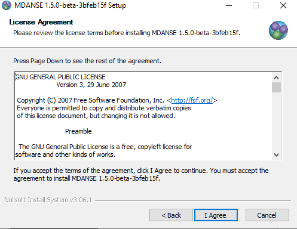
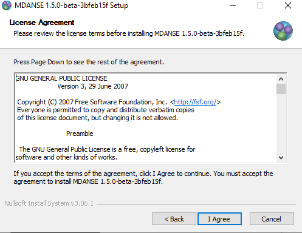
The default installation location is in C:\Program Files\MDANSE, but it can be changed to any location. Once you select next, the installation will start, which may take a while.
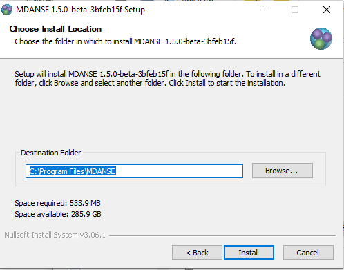Finally, you will see a screen where you can select some extra options. If you want to have a desktop shortcut, don’t forget to check the box. The ‘View CHANGELOG’ link at the bottom will open CHANGELOG.txt file where you can see what has changed.
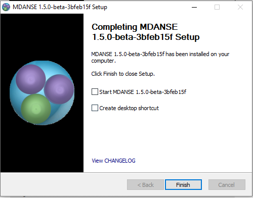MacOS
Since version 1.5.1, MDANSE installer for MacOS comes with a README.txt file that will be unzipped together with the MDANSE.dmg installer once you download MDANSE. Inside are the installation instructions as well as instructions for using MDANSE from the command line. Despite the aid however, MDANSE can be installed like any other DMG file:
Double click the DMG file. A window should open.
Drag the MDANSE icon onto the folder icon.
Wait for copying to finish.
Eject the DMG and delete it.
Once that is done, MDANSE will be installed in /Applications, and so you can run it like other applications. However, since we are not registered with Apple, you might have to go through some extra steps to run. For that purpose, the guides in Ref [3] and Ref [4] might be of help.
Linux
We provide MDANSE.deb installer, so if your system is Debian-based, you can directly use this like any other DEB package:
Un-tar the tarball.
In terminal run (make sure to use the correct path and full name of the DEB file):
sudo apt install ./MDANSE.deb
Apt will install any missing dependencies, so once you approve when prompted and wait for installation to finish, you can start the MDANSE either from terminal or from applications list.
If you use a system that does not support DEB natively, you will most likely have to build MDANSE from source code. Feel free to try using conversion packages, such as Alien, but we have not been able to make this work. Instructions on building from source are in Appendix 4 and issue #8 on our GitHub.[5] If you are still facing difficulties, do not hesitate to contact us!
Input and output files
Almost, if not all, functionalities provided by MDANSE are based on Network Common Data Form (NetCDF) input file. However, in certain circumstances MDANSE can use or produce another type of files. We will start this section by explaining in detail the NetCDF file format introducing next the other file formats used by MDANSE.
NetCDF file format
NetCDF is a set of software libraries and self-describing, machine-independent data formats that support the creation, access, and sharing of array-oriented scientific data. The project homepage is hosted by the Unidata program at the University Corporation for Atmospheric Research.[6] They are also the chief source of NetCDF -based software, standards development, updates, etc. The format is an open standard.
The data format is self-describing. This means that there is a header which describes the layout of the rest of the file, in particular the data arrays, as well as arbitrary file metadata in the form of name/value attributes. The format is platform independent, with issues such as endianness being addressed in the software libraries. The data arrays are rectangular, not ragged, and stored in a simple and regular fashion that allows efficient sub setting.
MDANSE expects trajectories to be in NetCDF format and follow the conventions of Molecular Modelling ToolKit (MMTK). Trajectories that have not been produced with MMTK or MMTK-based programs must be converted to MMTK format before they can be analysed with MDANSE. This conversion is necessary because no other common trajectory format permits efficient access both to conformations at a given time and to one-atom trajectories for all times. In addition to providing such an access, the NetCDF format has several advantages that make it particularly suitable for archiving trajectories:
compact files (binary storage)
machine-independent format
fully self-contained, complete information about the system is stored in the trajectory file.
The conversion of the trajectories from different formats to the MMTK format can be made directly via the MDANSE graphical user interface, specifically the trajectory converters.
MMTK NetCDF files work, however, not just as input files; they are at the centre of MDANSE. The result of an analysis is, by default, written into an MMTK NetCDF file, which can then be once again used as an input file. The 2D/3D Plotter, the inbuilt tool for graph visualisation, only works with MMTK NetCDF files.
HDF5 file format
HDF is a set of file formats designed to store and organise large amounts of data. The project is maintained by The HDF Group [7], a non-profit corporation, who ensure its continued development and accessibility. The associated libraries and tools are available under a liberal license for general use.
HDF5 is the latest version, and its use is widespread; even the version 4 of the NetCDF format is built on top of HDF5. It is organised hierarchically like a file system and uses POSIX-like syntax. The data is stored in datasets, n-dimensional arrays, which are grouped in groups, file-like objects. Either can then be modified with metadata by adding attributes.
It is a goal to replace NetCDF with HDF5 as the main storage format, and therefore MDANSE supports HDF5 output for analyses and input for plotters.
DAT file format
When performing an analysis, it there are two options for output file formats: NetCDF and ASCII. By default, only NetCDF is selected, creating an MMTK NetCDF file, but it is possible to change that to ASCII or both. If the ASCII option is selected, a tarball is generated. Inside are multiple files which together contain the results of the analysis. Firstly, there is a text file, jobinfo.txt, which contains the options that were selected when performing the analysis.
Secondly, there is a DAT file for each variable generated by the analysis. Each file is named after the variable it contains, and this name is identical to the name that would appear in 2D/3D Plotter if the equivalent NetCDF file were loaded in. Each file begins with a couple commented line describing the variable:
variable name
type of plot (this represents the dimensions of plot)
which variable is on the x-axis if the variable in this DAT file were to be plotted on the y-axis
units in which the data is written
the length of the trajectory (indicated as slice:[length])
After that is a list of numbers representing the variable as described.
MDANSE scripts
These files are python scripts that, when run, perform a given analysis with all the options set the way they were when this script was created. It can be run like any other script, you only have to make sure you use the python interpreter that comes with MDANSE. For more information about MDANSE python, read Using MDANSE from command line.
Using MDANSE Graphical User Interface
Through the MDANSE graphical user interface (GUI), you will usually open a trajectory, then specify the parameters for the analysis you wish to perform and finally start the calculation itself. In this interface you can also perform some other actions such as plotting the results of an analysis, performing some file conversions, and view the geometrical structure of your calculations. The GUI gives access to most of the functionalities of MDANSE. Moreover, from the GUI it is possible to create an input file for the command-line interface or an auto-start analysis python script. Both kind of files provide a convenient starting point to set up and run new analysis directly from the command line.
Opening MDANSE GUI
On all platforms, the GUI can be started either through an icon, or from the command line. Below are outlined the subtleties connected to each platform. In each case, it might take some time before the GUI opens, so please be patient.
Windows
If, during the installation, you selected to create a desktop shortcut, you can use that to start MDANSE. Otherwise, you will have to open the folder where you installed MDANSE (C:\Program Files\MDANSE by default). Inside you can double click on the file called MDANSE with the MDANSE icon:

Alternatively, you can double click the file called MDANSE_launcher.bat. If you want to start MDANSE GUI from the command line, you just have to type in the path to this batch file, not forgetting to use “ if there are spaces in the path.
MacOS
If you installed it normally, MDANSE icon should appear in Applications like any other app. However, starting it the first time is a bit more complicated since Apple implements stricter protections and we are not registered as trusted developers. Therefore, you might have to change some settings (see Ref [4] for a guide). Before you do that though, try simply opening MDANSE from the right click menu (see Ref [3] for a guide).
To start MDANSE GUI from terminal, you will have to run the following command (change /Applications if you installed MDANSE elsewhere):
/Applications/MDANSE.app/Contents/MacOS/MDANSE
Linux
If your distribution has an applications menu of some sort, like below, you should be able to find an MDANSE icon in there that can be used to start the GUI.

Otherwise, you will need to use the terminal. First, try running:
mdanse_gui
If that doesn’t work, you will need to know where MDANSE got installed. By default, it should be in /usr/local, so try looking if the above script is inside /usr/local/bin. If it isn’t there, the best bet is searching for it with find / -name mdanse_gui. Once you know the path (let’s call it mdanse_bin), run the following:
mdanse_bin/mdanse_gui
The main window
Below is an image of the window you will see when you open MDANSE GUI. All the parts have been marked and their short descriptions can be found below. Further information on all parts is in the following sections.
Please note that all pictures come from Windows 10, so the GUI will look very slightly different on other platforms. However, MDANSE works equally well, bugs notwithstanding, on all platforms.

File menu handles file manipulation. It can be used to load NetCDF trajectories or to convert other trajectories into the NetCDF format.
View menu allows you to hide/show various parts of MDANSE.
Help menu contains access to files that you can use to better understand MDANSE and the theory behind it.
Load trajectory button can be used to load a NetCDF trajectory.
Periodic table viewer opens a periodic table containing the constants and data that MDANSE uses for calculations.
Elements database editor allows you to change the atomic constants that MDANSE uses for calculations.
2D/3D Plotter launches a window where the calculated data can be plotted, and the plots formatted.
User definitions editor opens a window where you can view the definitions that have been created for each trajectory. More on definitions in Selections.
Units editor opens a window where the units used in MDANSE can be managed.
MDANSE classes framework allows you to peruse the documentation for the classes that make up MDANSE. This is useful if you want to use MDANSE from the command line.
Save analysis template allows you to create a new analysis. This will be available in My jobs inside the Plugins panel and can be run like the native analyses.
Open MDANSE API opens MDANSE documentation in a browser. This is very similar to MDANSE classes framework.
Open MDANSE website opens the MDANSE website[8] in a browser.
About launches a window with very basic information about the MDANSE you have installed.
Bug report opens your default mail application. Please use this or create an issue on MDANSE GitHub[9] to inform us of any issues you have come across.
Quit MDANSE closes the MDANSE window.
Data panel contains any NetCDF files you loaded into MDANSE using either #4 Load trajectory button, or from #1 File menu > Load trajectory.
Plugins panel contains all the options you can do with the selected trajectory.
Working panel shows the trajectories you have opened. To open a trajectory, double click a trajectory in #16 Data panel. You can then inspect the system described by the trajectory.
Logger shows all the messages generated by MDANSE. These can be errors or information messages, such as ones confirming you saved a script etc.
Console is a Python shell. It can be used like normal when python is being used from the command line, i.e.. when python is typed and executed in an OS shell. It contains all the bundled modules, but you will need to import them first.
Jobs shows the status of all current jobs. Once you start an analysis or trajectory conversion, you can view its progress here.
The File menu
Pressing the File menu button brings up the following menu:
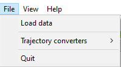Load data
This option allows you to select an MMTK NetCDF file. Once you click the Load data button, a standard (platform-specific) file browser will open, like the one below:

Use it as per normal, and the file you selected will appear in the Data panel. While it says in the file browser that you can load mvi trace file format, this is not currently implemented. Please only load NetCDF files that have been generated using MMTK or MMTK-based software. If you have a trajectory from elsewhere, it must be converted first. For more information about converting trajectories, please see the next section.
Trajectory converter
This option allows to convert a trajectory derived with a non MMTK-based program to the NetCDF MMTK trajectory format. Hovering over the Trajectory converter brings up the following menu:

Clicking on any button opens a window of that converter. Each converter contains these three buttons at the bottom:
Help will open MDANSE documentation for the converter class.
Save creates a python script with the values of all the fields set the way they were when the button is clicked. This script can be used to quickly run this conversion again in the future.
Run initiates the conversion. Its progress can be seen in Jobs. After a successful Run, the converted trajectory is saved in the location specified in the field “output files” in the converter interface.
The descriptions of all converters will be found in Appendix 1.
Quit
Selecting this option opens a confirmation prompt. If you select yes, MDANSE will close.
The View menu
This menu contains several options to hide/show various parts of MDANSE:
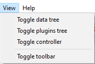Toggle data tree shows/hides the Data panel:
Toggle plugins tree shows/hides the Plugins panel:

Toggle controller shows/hides the bottom bar containing Logger, Console, and Jobs:

Toggle toolbar should show/hide the toolbar:

Toolbar
This is a set of pictographic buttons that you can use to quickly perform many important actions. Below is a brief overview of all of them, going left to right, and after that we will take a look at the more complex ones.

Load trajectory button can be used to load a NetCDF trajectory. More information in Load data.
Periodic table viewer opens a periodic table containing the constants and data that MDANSE uses for calculations.
Elements database editor allows you to change the atomic constants that MDANSE uses for calculations.
2D/3D Plotter launches a window where the calculated data can be plotted, and the plots formatted.
User definitions editor opens a window where you can view the definitions that have been created for each trajectory. More on definitions in Selections.
Units editor opens a window where the units used in MDANSE can be managed.
MDANSE classes framework allows you to peruse the documentation for the classes that make up MDANSE. This is useful if you want to use MDANSE from the command line.
Save analysis template allows you to create a new analysis. This will be available in My jobs inside the Plugins panel and can be run like the native analyses.
Open MDANSE API opens MDANSE documentation in a browser. This is very similar to MDANSE classes framework.
Open MDANSE website opens the MDANSE website in a browser.
About launches a window with very basic information about the MDANSE you have installed.
Bug report opens your default mail application. Please use this or our GitHub[9] to inform us of any issues you have come across. When reporting an issue, please include a picture or copy of the error, such as the traceback from job failure.
Quit MDANSE closes MDANSE.
Periodic table viewer
Once launched, it will open this window:
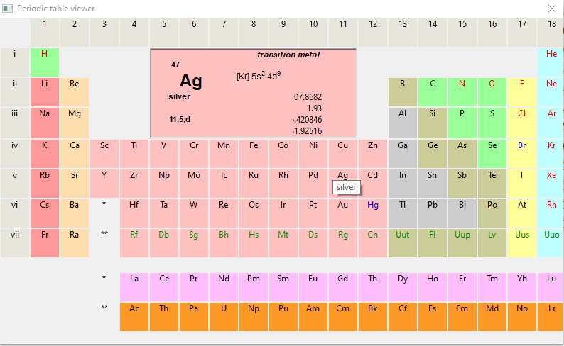By hovering over an element, detailed information from MDANSE elements database will show up at the top. By clicking on an element, a list of its isotopes will appear as a menu:

When an isotope is selected, all the information that is stored in the database will be displayed:

Clicking on the link at the bottom opens a Wikipedia article about that element. Other than that, you cannot interact with this page in any way. If you would like to change any of the displayed data, you will have to use the Elements database editor.
Elements database editor
Clicking on this button opens this window:
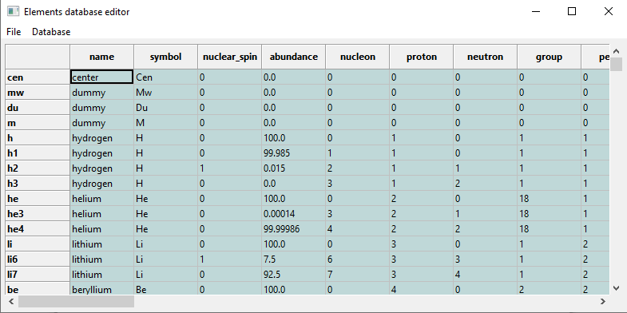It can be interacted with like a normal spreadsheet; click (or double click) on a field you want to edit and type the new value. Once you are done with making changes, don’t forget to save them before closing. You can do that through the file menu.
File menu

Save database overwrites the current database, so it is best to be careful. Due to that, you will need to confirm a prompt before the changes are saved.
Save database as opens a file browser which can be used to save the changes in a new file.
2D/3D Plotter
Upon clicking on the icon, this window will open:
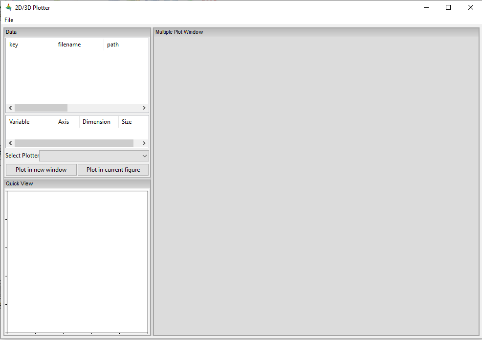To use it, a file has to be loaded first. This can be done using the File menu → Load, which will open a file browser. Only NetCDF files (ending in .nc, .cdf, or .netcdf) and HDF5 files (extension .h5 or .hdf) can be loaded; other file formats will result in an error.
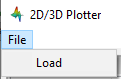Once a file is loaded, it will appear in the data panel. This is a table listing all the files loaded in the Plotter, showing the name MDANSE assigned to the loaded instance (i.e. a key to e.g. distinguish between files with the same name), the name of the file, and the full path to the file.
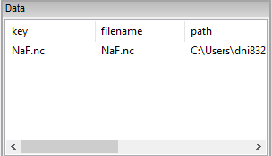Clicking on a loaded file will show all the variables that can be plotted in the box below, though the whole Plotter window might have to be resized so that more than one variable shows up at a time. A preview of the plot of the first variable will also be shown at the bottom, but only for 1D and 2D plots.
Once you have selected a variable from the second box, you can select a plotter from the Select Plotter drop-down menu. The following plotters are available in MDANSE:
Plotter |
Dimension |
Description |
1D |
A simple plot depicting the dependence of one variable on another. It consists of a single line. Uses normal plot() function from matplotlib. |
|
2D |
Plots data as an image, i.e. on a 2D regular raster. Uses matplotlib imshow() function. |
|
|
2D |
Plots data as an image. Uses VTK. |
2D |
Plots a subset of a 3D variable. |
|
3D |
A 3D plot depicting a surface through lines or one continuous surface. Uses VTK. |
|
3D |
After all that is selected, the data can be plotted. There are two options for this, represented by the two buttons:
Plot in new window creates a new tab, ie. a separate plot, inside the Multiple Plot Window.
Plot in current figure plots the chosen data in the currently selected tab of the Multiple Plot Window, ie. it will create a plot with multiple lines etc.

{kind=link}
{kind=link}
{kind=link}
{kind=link}
{kind=link}
{kind=link}
{kind=link}
{kind=link}
{kind=link}
{kind=link}
{kind=link}
{kind=link}
{kind=link}
{kind=link}
{kind=link}
{kind=link}
{kind=link}
{kind=link}
{kind=link}
{kind=link}
{kind=link}
{kind=link}
As can be seen, the plot automatically adjusts the axes so that all plots fit. More details on plotting options is in Appendix 3.
Units Editor
When opened, this window will appear:
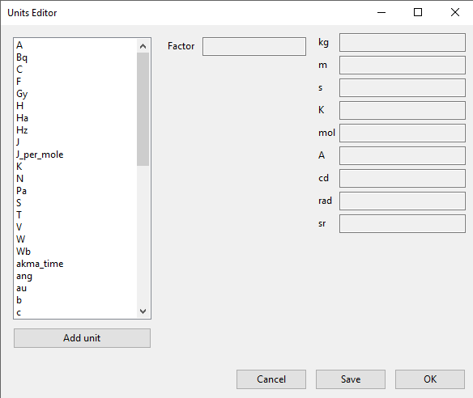{kind=link}
Here, the units that MDANSE uses can be managed. The white box on the left is a list of all the defined units, which includes both the units that come together with MDANSE as well as any user-defined units. More information on how units work is in the Units section. This list is interactive; any unit in it can be clicked on, which displays its details, like so:
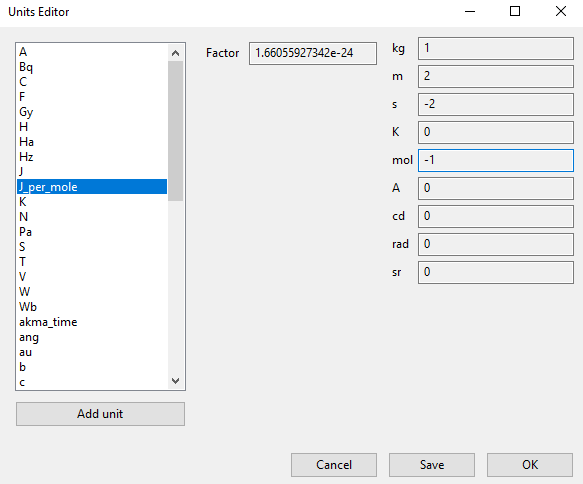{kind=link}
The fields in the middle and right of the window show the definition of the selected unit using SI units. The selected unit is equivalent to Factor * the product of the SI units listed on the right, where the values inside the fields are the powers of the SI units. Therefore, the unit shown in the above example, J_per_mole, is in MDANSE defined as 1.66055927342 * 10-24 kg m2 mol-1.
There are four buttons in the Units Editor window:
Cancel closes the window without saving any changes made.
Save saves the changes for future use; they can be used in the current session and in any future ones. The Units Editor window is also closed.
OK saves the changes for the current session; they can be used until the main MDANSE window is closed. When MDANSE is closed and opened again, the changes will not appear. The Units Editor window is also closed.
Add unit opens the following window, which can be used to add new units or edit existing ones.
{kind=link}
Unit name
Format: str
Default: None
Description: the name of the unit. If a name not yet registered is inputted, a new unit will be created. Please note that the names are case-sensitive, and that already existing units cannot be overwritten.
Factor
Format: float
Default: 1.0
Description:
unit (any of the displayed SI basic units)
Format: int (it must lie in the interval )
Default: 0
Description: the power of the SI unit.
OK adds the new definition to the unit registry, but the change has to be saved in the Units Editor window to be useable in the rest of MDANSE. Please not that once, a new unit is added, it cannot be changed only removed.
Cancel closes the window without saving the changes.
Further, existing units can be deleted from the Units Editor window. To do this, the unit to be deleted has to be selected by clicking on it, and then the ‘Delete’ button has to be clicked. This will show a prompt for confirmation, and once that is accepted, the unit will be removed, though the change has to be saved by clicking on either the OK or Cancel button.
Data panel
This is where files loaded into MDANSE are displayed. Trajectories and results of analyses are distinctly separated as ‘mmtk trajectory’ and ‘netcdf data’ respectively. To proceed, you need to double-click on a file name here to bring it to the Working panel. This can be done multiple times for each file.

Working panel
The selected files appear in the Working panel as tabs. The currently opened tab is the one that whose file is going to be used for analysis and other operations when using the Plugins panel.
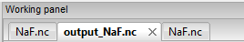{kind=link}
The Working panel is also the space which some of the plugins use to do their job. The Molecular Viewer, Animation, and 2D/3D Plotter plugins all load into the Working panel. Furthermore, it is possible to bring the windows opened by the other plugins into the working panel, like below. To do that, you have to drag the window so that its top is near the top of the working panel, where the tabs are. An indicator will appear when you got it right.


Plugins panel
This is the heart of MDANSE, where all the analyses as well as other important features can be found. If the selected tab in the Working panel is from a trajectory, the Plugins panel will look like this:

If it is from the result of an analysis, it will look like this:

There are far fewer options available for analysis results. Nevertheless, in each of the sections below, it will be stated if the plugin appears for trajectories, results, or both.
All the options in above are just headings. To get to the actual plugins, click on the ‘plus’ buttons next to the text to unhide the options. If there is no such button next to a text, that means that that is a plugin and can be launched by double-clicking on the text.
Analysis
This menu contains all data manipulations and appears as in the picture below when a trajectory is loaded. As indicated by the plus buttons, each of these options is a menu in itself.

They are explored in greater depth in the following sections, and the analyses are in turn explored in their subsections. Some contain a discussion of the theory behind the computation, and all show the analysis window of that analysis, the one that is launched by double-clicking the option in this Plugins panel.
Each analysis window is different since each requires different parameters to be configured before it can be run. However, all of them have the same structure (example window below), consisting of these parts:
trajectory box shows the path to the MMTK NetCDF trajectory that this analysis will be performed on.
Parameters are a group of options, of which the common ones are discussed in depth in Appendix 2. These are the options which vary from analysis to analysis. The only parameters that exist on every analysis are Frames and Output files.
Buttons are situated at the bottom of each analysis and consist of these options:
Help opens the source code documentation for the relevant class in an MDANSE window.
Save opens a file browser that allows you to save the current analysis with the set options into a python script which can be run from the command line. More information about scripts in Using MDANSE from command line.
Run starts the analysis and prompts you whether you want to close the window. The status of the analysis can be found in the Jobs panel, though there is a known bug where successful analyses do not show up.
Dynamics
This section contains the following Plugins:
Angular Correlation
Available for trajectories only
Theory and implementation
The angular correlation analysis computes the autocorrelation of a set of vectors describing the extent of a molecule in three orthogonal directions. This kind of analysis can be useful when trying to highlight the fact that a molecule is constrained in a given direction.
For a given triplet of non-colinear atoms g=(a1,a2,a3), one can derive an orthonormal set of three vectors v1, v2, v3 using the following scheme:
v_{1} = \frac{n_{1} + n_{2}}{\left| \left| {n_{1} + n_{2}} \right| \right|}
where n1 and n2 are respectively the normalized vectors along (a1,a2) and (a1,a3) directions.
v2 is defined as the clockwise normal vector orthogonal to v1 that belongs to the plane defined by a1, a2 and a3 atoms
{\overrightarrow{v_{3}} = \overrightarrow{v_{1}}}\times\overrightarrow{v_{2}}
Thus, one can define the following autocorrelation functions for the vectors v1, v2 and v3 defined on triplet t :
\begin{matrix} {AC_{g,i}{(t) = \left\langle {v_{t,i}(0)\cdot v_{t,i}(t)} \right\rangle},{i = 1,2,3}} \\ {({\mathit{SEQ}\mathit{Equation}\mathit{ARABIC}1})} \\ \end{matrix}
And the angular correlation averaged over all triplets is:
\begin{matrix} {AC_{i}{(t) = {\sum\limits_{g = 1}^{N_{\mathit{triplets}}}{AC_{g,i}(t)}}},{i = 1,2,3}} \\ \left( {\mathit{SEQ}\mathit{Equation}\mathit{ARABIC}2} \right) \\ \end{matrix}
where Ntriplets is the number of selected triplets.
GUI

Parameters:
Density Of States
Theory and implementation
MDANSE calculates the power spectrum of the VACF, which in case of the mass-weighted VACF defines the phonon discrete DOS, (see the section on VACF) defined as:
\begin{matrix} {\mathit{DOS}\left( {n\cdot\mathit{\Delta\nu}} \right)\doteq{\sum\limits_{\alpha}\omega_{\alpha}}{\overset{\sim}{C}}_{\mathit{vv};\mathit{\alpha\alpha}}\left( {n\cdot\mathit{\Delta\nu}} \right),{n = 0}\ldots{N_{t} - 1.}} \\ (3) \\ \end{matrix}
Nt is the total number of time steps and
{\mathit{\Delta\nu} = 1}\text{/}\left( {2N_{t}\Delta t} \right)
is the frequency step.
\mathit{DOS}\left( {n\cdot\mathit{\Delta\nu}} \right)
can be computed either for the isotropic case or with respect to a user-defined axis. The spectrum
\mathit{DOS}\left( {n\cdot\Delta\nu} \right)
is computed from the unnormalized VACF, such that DOS(0) gives an approximate value for the diffusion constant
D = {\sum\limits_{\alpha}D_{\alpha}}
(see Eqs.
10
Error: Reference source not found and
11
Error: Reference source not found).
\mathit{DOS}\left( {n\cdot\Delta\nu} \right)
is smoothed by applying a Gaussian window in the time domain [10] (see the section on Spatial Density). Its width in the time domain is
{\sigma_{t} = \alpha}\text{/}T
, where T is the length of the simulation. We remark that the diffusion constant obtained from DOS is biased due to the spectral smoothing procedure since the VACF is weighted by this window Gaussian function. MDANSE computes the density of states starting from both atomic velocities and atomic coordinates. In this case the velocities are computed by numerical differentiation of the coordinate trajectories correcting first for possible jumps due to periodic boundary conditions.
GUI
available for trajectories only


General AutoCorrelation Function
available for trajectories only
{kind=link}
{kind=link}
trajectory variable
Format: drop-down
Default: configuration
Description: determines the variable for which the autocorrelation function is calculated. Therefore, if the selected variable is ‘configuration’, essentially position autocorrelation function is calculated.
Mean Square Displacement
Theory and implementation
Molecules in liquids and gases do not stay in the same place but move constantly. This process is called diffusion and it happens quite naturally in fluids at equilibrium. During this process, the motion of an individual molecule does not follow a simple path. As it travels, the molecule undergoes some collisions with other molecules which prevent it from following a straight line. If the path is examined in close detail, it will be seen to be a good approximation to a random walk. Mathematically, a random walk is a series of steps where each step is taken in a completely random direction from the one before. This kind of path was famously analysed by Albert Einstein in a study of Brownian motion. He showed that the Mean-Square Displacement (MSD) of a particle following a random walk is proportional to the time elapsed. This relationship can be written as
\begin{matrix} {{\left\langle r^{2} \right\rangle = 6}{\mathit{Dt} + C}} \\ \left( {\mathit{SEQ}\mathit{Equation}\mathit{ARABIC}3} \right) \\ \end{matrix}
where < r2 > is the MSD and t is the time. D and C are constants. The constant D defines the so-called diffusion coefficient.
The Figure 1 shows an example of an MSD analysis performed on a water box of 768 water molecules. To get the diffusion coefficient out of this plot, the slope of the linear part of the plot should be calculated.

Figure 1: MSD calculated for a 100 ps MD simulation of 256 water molecules using NPT condition at 1 bar and 300 K.
Defining
\begin{matrix} {d_{\alpha}\left( {t,t_{0}} \right)\doteq R_{\alpha}{\left( {t_{0} + t} \right) - R_{\alpha}}\left( t_{0} \right),} \\ \left( {\mathit{SEQ}\mathit{Equation}\mathit{ARABIC}4} \right) \\ \end{matrix}
the MSD of particle α can be defined as:
\begin{matrix} {\mathrm{\Delta}_{\alpha}^{2}{(t) = \left\langle {d_{\alpha}^{2}\left( {t,t_{0}} \right)} \right\rangle_{t_{0}}}} \\ \left( {\mathit{SEQ}\mathit{Equation}\mathit{ARABIC}5} \right) \\ \end{matrix}
where R_(t0) and R_(t0 + t) are respectively the position of particle α at times t0 and t0 + t. One can introduce an MSD with respect to a given axis n:
\begin{matrix} {\mathrm{\Delta}_{\alpha}^{2}\left( {t,t_{0};n} \right)\doteq\left\langle {d_{\alpha}^{2}\left( {t,\tau;n} \right)} \right\rangle_{t_{0}}} \\ \left( {\mathit{SEQ}\mathit{Equation}\mathit{ARABIC}6} \right) \\ \end{matrix}
with
\begin{matrix} {d_{\alpha}^{}\left( {t,\tau;n} \right)\doteq n\bullet d_{\alpha}^{}\left( {t,t_{0}} \right).} \\ \left( {\mathit{SEQ}\mathit{Equation}\mathit{ARABIC}7} \right) \\ \end{matrix}
The calculation of MSD is the standard way to obtain diffusion coefficients from Molecular Dynamics (MD) simulations. Assuming Einstein-diffusion in the long time limit one has for isotropic systems
\begin{matrix} {{D_{\alpha} = {\lim\limits_{t\rightarrow\infty}{\frac{1}{6t}\mathrm{\Delta}_{\alpha}^{2}(t)}}}.} \\ \left( {\mathit{SEQ}\mathit{Equation}\mathit{ARABIC}8} \right) \\ \end{matrix}
There exists also a well-known relation between the MSD and the velocity autocorrelation function. Writing
d_{\alpha}{(t) = {\int\limits_{0}^{t}{\mathit{d\tau}v_{\alpha}(\tau)}}}
in Eq.
5
Error: Reference source not found one can show (see e.g. [11]) that
\begin{matrix} {\mathrm{\Delta}_{\alpha}^{2}{(t) = 6}{\int\limits_{0}^{t}{\mathit{d\tau}\left( {t - \tau} \right)C_{\mathit{\upsilon\upsilon};\mathit{\alpha\alpha}}(t)}}.} \\ \left( {\mathit{SEQ}\mathit{Equation}\mathit{ARABIC}9} \right) \\ \end{matrix}
Using now the definition
8
Error: Reference source not found of the diffusion coefficient one obtains the relation
\begin{matrix} {{D_{\alpha} = {\int\limits_{0}^{t}{\mathit{d\tau}C_{\mathit{\upsilon\upsilon};\mathit{\alpha\alpha}}(t)}}}.} \\ \left( {\mathit{SEQ}\mathit{Equation}\mathit{ARABIC}10} \right) \\ \end{matrix}
With Eq.
28
Error: Reference source not found this can also be written as
\begin{matrix} {{D_{\alpha} = \pi}{\overset{\sim}{C}}_{\mathit{\upsilon\upsilon};\mathit{\alpha\alpha}}(0).} \\ \left( {\mathit{SEQ}\mathit{Equation}\mathit{ARABIC}11} \right) \\ \end{matrix}
Computationally, the MSD is calculated using the Fast Correlation Algorithm (FCA) [12]. In this framework, in the discrete case, the mean-square displacement of a particle is given by
\begin{matrix} {\mathrm{\Delta}^{2}{(m) = \frac{1}{N_{t} - m}}{\sum\limits_{k = 0}^{N_{t} - m - 1}\left\lbrack {r{\left( {k + m} \right) - r}(k)} \right\rbrack^{2}},{m = 0.}..{N_{t} - 1}} \\ \left( {\mathit{SEQ}\mathit{Equation}\mathit{ARABIC}12} \right) \\ \end{matrix}
where r(k) is the particle trajectory and Nt is the number of frames of the trajectory. We define now the auxiliary function
\begin{matrix} {S(m)\doteq{\sum\limits_{k = 0}^{N_{t} - m - 1}\left\lbrack {r{\left( {k + m} \right) - r}(k)} \right\rbrack^{2}},{m = 0}...N{t - 1},} \\ \left( {\mathit{SEQ}\mathit{Equation}\mathit{ARABIC}13} \right) \\ \end{matrix}
which is split as follows:
\begin{matrix} {S{(m) = S_{\mathit{AA} + \mathit{BB}}}{(m) - 2}S_{\mathit{AB}}(m),} \\ \left( {\mathit{SEQ}\mathit{Equation}\mathit{ARABIC}14} \right) \\ \end{matrix}
\begin{matrix} {S_{\mathit{AA} + \mathit{BB}}{(m) = \sum\limits_{k = 0}^{N_{t} - m - 1}}\left\lbrack {r^{2}{\left( {k + m} \right) + r^{2}}(k)} \right\rbrack,} \\ \left( {\mathit{SEQ}\mathit{Equation}\mathit{ARABIC}15} \right) \\ \end{matrix}
\begin{matrix} {S_{\mathit{AB}}{(m) = {\sum\limits_{k = 0}^{N_{t} - m - 1}{r(k)}}}\cdot r\left( {k + m} \right).} \\ \left( {\mathit{SEQ}\mathit{Equation}\mathit{ARABIC}16} \right) \\ \end{matrix}
The function SAB(m) can be computed using the FCA method described in the section on Spatial Density. For SAA+BB(m) the following recursion relation holds:
\begin{matrix} {S_{\mathit{AA} + \mathit{BB}}{(m) = S_{\mathit{AA} + \mathit{BB}}}{\left( {m - 1} \right) - r^{2}}{\left( {m - 1} \right) - r^{2}}\left( {N_{t} - m} \right),} \\ \left( {\mathit{SEQ}\mathit{Equation}\mathit{ARABIC}17} \right) \\ \end{matrix}
\begin{matrix} {S_{\mathit{AA} + \mathit{BB}}{(0) = {\sum\limits_{k = 0}^{N_{t} - 1}{r^{2}(k)}}}.} \\ \left( {\mathit{SEQ}\mathit{Equation}\mathit{ARABIC}18} \right) \\ \end{matrix}
This allows one to construct the following efficient scheme for the computation of the MSD:
Compute
\mathit{DSQ}{{(k)} = r}2{(k)},{k = 0}...N{t - 1}
;
\mathit{DSQ}{{({- 1})} = \mathit{DSQ}}{{({Nt})} = 0}
.
Compute
{\mathit{SUMSQ} = 2}\cdot{\sum\limits_{k = 0}^{N_{t} - 1}{\mathit{DSQ}(k)}}
Compute SAB(m) using the Fast Fourier Transform (FFT) method.
Compute MSD(m) in the following loop:
\mathit{SUMSQ}\leftarrow{\mathit{SUMSQ} - \mathit{DSQ}}{{({m - 1})} - \mathit{DSQ}}{({N{t - m}})}
\mathit{MSD}{(m)}\leftarrow{}
m running from 0 to Nt – 1
It should be noted that the efficiency of this algorithm is the same as for the FCA computation
of time correlation functions since the number of operations in step (1), (2), and (4) grows
linearly with Nt.
GUI


Order Parameter
Theory and implementation
Adequate and accurate cross comparison of the NMR and MD simulation data is of crucial importance in versatile studies conformational dynamics of proteins. NMR relaxation spectroscopy has proven to be a unique approach for a site-specific investigation of both global tumbling and internal motions of proteins. The molecular motions modulate the magnetic interactions between the nuclear spins and lead for each nuclear spin to a relaxation behaviour which reflects its environment. Since its first applications to the study of protein dynamics, a wide variety of experiments has been proposed to investigate backbone as well as side chain dynamics. Among them, the heteronuclear relaxation measurement of amide backbone 15N nuclei is one of the most widespread techniques. The relationship between microscopic motions and measured spin relaxation rates is given by Redfield’s theory [13]. Under the hypothesis that 15N relaxation occurs through dipole-dipole interactions with the directly bonded 1H atom and chemical shift anisotropy (CSA), and assuming that the tensor describing the CSA is axially symmetric with its axis parallel to the N-H bond, the relaxation rates of the 15N nuclei are determined by a time correlation function,
\begin{matrix} {C_{\mathit{ii}}{(t) = \left\langle {P_{2}\left( {\mu_{i}(0)\cdot\mu_{i}(t)} \right)} \right\rangle}} \\ \left( {\mathit{SEQ}\mathit{Equation}\mathit{ARABIC}19} \right) \\ \end{matrix}
which describes the dynamics of a unit vector μi(t) pointing along the 15N-1H bond of the residue i in the laboratory frame. Here P2(.) is the second order Legendre polynomial. The Redfield theory shows that relaxation measurements probe the relaxation dynamics of a selected nuclear spin only at a few frequencies. Moreover, only a limited number of independent observables are accessible. Hence, to relate relaxation data to protein dynamics one has to postulate either a dynamical model for molecular motions or a functional form for Cii(t), yet depending on a limited number of adjustable parameters. Usually, the tumbling motion of proteins in solution is assumed isotropic and uncorrelated with the internal motions, such that:
\begin{matrix} {C_{\mathit{ii}}{(t) = C^{G}}(t)\cdot C_{\mathit{ii}}^{I}(t)} \\ \left( {\mathit{SEQ}\mathit{Equation}\mathit{ARABIC}20} \right) \\ \end{matrix}
where CG(t) and
C_{\mathit{ii}}^{I}(t)
denote the global and the internal time correlation function, respectively. Within the so-called model free approach [14], [15] the internal correlation function is modelled by an exponential,
\begin{matrix} {C_{\mathit{ii}}^{I}{(t) = {S_{i}^{2} + \left( {1 - S_{i}^{2}} \right)}}\exp\left( \frac{- t}{\tau_{\mathit{eff},i}} \right)} \\ \left( {\mathit{SEQ}\mathit{Equation}\mathit{ARABIC}21} \right) \\ \end{matrix}
Here the asymptotic value
{S_{i}^{2} = C_{\mathit{ii}}}\left( {+ \infty} \right)
is the so-called generalized order parameter, which indicates the degree of spatial restriction of the internal motions of a bond vector, while the characteristic time
\tau_{\mathit{eff},i}
is an effective correlation time, setting the time scale of the internal relaxation processes.
S_{i}^{2}
can adopt values ranging from 0 (completely disordered) to 1 (fully ordered). So,
S_{i}^{2}
is the appropriate indicator of protein backbone motions in computationally feasible timescales as it describes the spatial aspects of the reorientational motion of N-H peptidic bonds vector.
When performing Order Parameter analysis, MDANSE computes for each residue i both
C_{\mathit{ii}}(t)
and
S_{i}^{2}
. It also computes a correlation function averaged over all the selected bonds defined as:
\begin{matrix} {C^{I}{(t) = {\sum\limits_{i = 1}^{N_{\mathit{bonds}}}{C_{\mathit{ii}}^{I}(t)}}}} \\ \left( {\mathit{SEQ}\mathit{Equation}\mathit{ARABIC}22} \right) \\ \end{matrix}
where Nbonds is the number of selected bonds for the analysis.
GUI
available for trajectories only

reference direction
x-component
Format: int or float
Default: 0
Description: <insert>
y-component
Format: int or float
Default: 0
Description: <insert>
z-component
Format: int or float
Default: 1
Description: <insert>
Position AutoCorrelation Function
available for trajectories only


Velocity AutoCorrelation Function
Theory and implementation
The Velocity AutoCorrelation Function (VACF) is another interesting property describing the dynamics of a molecular system. Indeed, it reveals the underlying nature of the forces acting on the system.
In a molecular system that would be made of non-interacting particles, the velocities would be constant at any time triggering the VACF to be a constant value. Now, if we think about a system with small interactions such as in a gas-phase, the magnitude and direction of the velocity of a particle will change gradually over time due to its collision with the other particles of the molecular system. In such a system, the VACF will be represented by a decaying exponential.
In the case of solid phase, the interactions are much stronger and, as a results, the atoms are bound to a given position from which they will move backwards and forwards oscillating between positive and negative values of their velocity. The oscillations will not be of equal magnitude however, but will decay in time, because there are still perturbative forces acting on the atoms to disrupt the perfection of their oscillatory motion. So, in that case the VACF will look like a damped harmonic motion.
Finally, in the case of liquid phase, the atoms have more freedom than in solid phase and because of the diffusion process, the oscillatory motion seen in solid phase will be cancelled quite rapidly depending on the density of the system. So, the VACF will just have one very damped oscillation before decaying to zero. This decaying time can be considered as the average time for a collision between two atoms to occur before they diffuse away.
Mathematically, the VACF of atom α in an atomic or molecular system is usually defined as
\begin{matrix} {C_{\mathit{vv};\mathit{\alpha\alpha}}(t)\doteq\frac{1}{3}\left\langle {v_{\alpha}\left( t_{0} \right)\cdot v_{\alpha}\left( {t_{0} + t} \right)} \right\rangle_{t_{0}}.} \\ \left( {\mathit{SEQ}\mathit{Equation}\mathit{ARABIC}23} \right) \\ \end{matrix}
In some cases, e.g. for non-isotropic systems, it is useful to define VACF along a given axis,
\begin{matrix} {C_{\mathit{vv};\mathit{\alpha\alpha}}\left( {t;n} \right)\doteq\left\langle {v_{\alpha}\left( {t_{0};n} \right)v_{\alpha}\left( {{t_{0} + t};n} \right)} \right\rangle_{t_{0}},} \\ \left( {\mathit{SEQ}\mathit{Equation}\mathit{ARABIC}24} \right) \\ \end{matrix}
where vα(t; n) is given by
\begin{matrix} {v_{\alpha}\left( {t;n} \right)\doteq n\cdot v_{\alpha}(t).} \\ \left( {\mathit{SEQ}\mathit{Equation}\mathit{ARABIC}25} \right) \\ \end{matrix}
The vector n is a unit vector defining a space-fixed axis.
The VACF of the particles in a many body system can be related to the incoherent dynamic structure factor by the relation:
\begin{matrix} {\mathit{li}m_{q\rightarrow 0}\frac{\omega^{2}}{q^{2}}S{\left( {q,\omega} \right) = G}(\omega),} \\ \left( {\mathit{SEQ}\mathit{Equation}\mathit{ARABIC}26} \right) \\ \end{matrix}
where G(ω) is the Density Of States (DOS). For an isotropic system it reads
\begin{matrix} {G{(\omega) = {\sum\limits_{\alpha}{b_{\alpha,\mathit{inc}}^{2}{\overset{\sim}{C}}_{\mathit{vv};\mathit{\alpha\alpha}}(\omega)}}},} \\ \left( {\mathit{SEQ}\mathit{Equation}\mathit{ARABIC}27} \right) \\ \end{matrix}
\begin{matrix} {{\overset{\sim}{C}}_{\mathit{vv};\mathit{\alpha\alpha}}{(\omega) = \frac{1}{2\pi}}{\int\limits_{- \infty}^{+ \infty}\mathit{dt}}\exp\left\lbrack {{- i}\omega t} \right\rbrack C_{\mathit{vv};\mathit{\alpha\alpha}}(t).} \\ \left( {\mathit{SEQ}\mathit{Equation}\mathit{ARABIC}28} \right) \\ \end{matrix}
For non-isotropic systems, relation
26
Error: Reference source not found holds if the DOS is computed from the atomic velocity autocorrelation functions
C_{\mathit{vv};\mathit{\alpha\alpha}}\left( {t;n_{q}} \right)
, where nq is the unit vector in the direction of q.
GUI
available for trajectories only


Infrared
Dipole AutoCorrelation Function
available for trajectories only

Macromolecules
This section has one subsection, Lipids, which contains following Plugins:
Refolded Membrane Trajectory
Refolded Membrane Trajectory
available for trajectories only

membrane axis
Format: drop-down
Default: c
Description: the axis along which is used for the trajectory manipulation, the normal to the membrane.
name of the lipid of the upper leaflet
Format: str
Default: DMPC
Description: the name of the lipid positioned in the upper leaflet of the membrane. It will be repositioned into the upper part of the simulation box. The name must be the name with which MMTK refers to the lipid.
name of the lipid of the lower leaflet
Format: str
Default: DMPC
Description: the name of the lipid positioned in the lower leaflet of the membrane. It will be repositioned into the lower part of the simulation box. The name must be the name with which MMTK refers to the lipid.
Scattering
Below is a list of Plugins contained in this section. They are all used to calculate neutron spectroscopy observables from the trajectory.
These plugins will be explored in depth in further sections, however, before that, it is important to understand how MDANSE performs these analyses. A part of that are Q vectors, which are used to perform these analyses. An in-depth discussion of this aspect is present in Appendix 2.
Theory and background
The quantity of interest in neutron scattering experiments with thermal neutrons is the dynamic structure factor, S(q, ω), which is closely related to the double differential cross-section [7],
d^{2}{\sigma/\mathit{d\Omega dE}}
. The double differential cross section is defined as the number of neutrons which are scattered per unit time into the solid angle interval
\left\lbrack {\Omega,{\Omega + d}\Omega} \right\rbrack
and into the energy interval
{\lbrack{E,{E + \mathit{dE}}}\rbrack}.
It is normalized to d, dE, and the flux of the incoming neutrons,
\begin{matrix} {{\frac{d^{2}\sigma}{d\Omega\mathit{dE}} = N}\cdot\frac{k}{k_{0}}S\left( {q,\omega} \right).} \\ \left( {\mathit{SEQ}\mathit{Equation}\mathit{ARABIC}29} \right) \\ \end{matrix}
Here N is the number of atoms, and k ≡ |k| and k0 ≡ |k0| are the wave numbers of scattered and incident neutrons, respectively. They are related to the corresponding neutron energies by
{E = \hslash^{2}}k^{2}\text{/}2m
and
{E_{0} = \hslash^{2}}k_{0}^{2}\text{/}2m
where
m
is the neutron mass. The arguments of the dynamic structure factor,
q
and
\omega
, are the momentum and energy transfer in units of
\hslash
, respectively:
\begin{matrix} {{q = \frac{k_{0} - k}{\hslash}},} \\ \left( {\mathit{SEQ}\mathit{Equation}\mathit{ARABIC}30} \right) \\ \end{matrix}
\begin{matrix} {{\omega = \frac{E_{0} - E}{\hslash}}.} \\ \left( {\mathit{SEQ}\mathit{Equation}\mathit{ARABIC}31} \right) \\ \end{matrix}
The modulus of the momentum transfer can be expressed in the scattering angle
\theta
, the energy transfer, and the energy of the incident neutrons:
\begin{matrix} {{q = \sqrt{{2 - \frac{\mathit{\hslash\omega}}{E_{0}} - 2}\cos{\theta\sqrt{2 - \frac{\mathit{\hslash\omega}}{E_{0}}}}}}.} \\ \left( {\mathit{SEQ}\mathit{Equation}\mathit{ARABIC}32} \right) \\ \end{matrix}
The dynamic structure factor contains information about the structure and dynamics of the scattering system [16]. It can be written as
\begin{matrix} {S{\left( {q,\omega} \right) = \frac{1}{2\pi}}{\int\limits_{- \infty}^{+ \infty}\mathit{dt}}\exp\left\lbrack {{- i}\omega t} \right\rbrack F\left( {q,t} \right).} \\ \left( {\mathit{SEQ}\mathit{Equation}\mathit{ARABIC}33} \right) \\ \end{matrix}
F(q, t) is called the intermediate scattering function and is defined as
\begin{matrix} {\text{F}{\left( {q,t} \right) = {\sum\limits_{\alpha,\beta}{\Gamma_{\mathit{\alpha\beta}}\left\langle {\exp\left\lbrack {{- i}q\cdot\hat{R_{\alpha}}(0)} \right\rbrack\exp\left\lbrack {iq\cdot\hat{R_{\beta}}(t)} \right\rbrack} \right\rangle}}},} \\ \left( {\mathit{SEQ}\mathit{Equation}\mathit{ARABIC}34} \right) \\ \end{matrix}
\begin{matrix} {{\Gamma_{\mathit{\alpha\beta}} = \frac{1}{N}}\left\lbrack {\overline{b_{\alpha}}{\overline{b_{\beta}} + \delta_{\mathit{\alpha\beta}}}\left( {\overline{b_{\alpha}^{2}} - {\overline{b_{\alpha}}}^{2}} \right)} \right\rbrack.} \\ \left( {\mathit{SEQ}\mathit{Equation}\mathit{ARABIC}35} \right) \\ \end{matrix}
The operators
\hat{R_{\alpha}}(t)
in Eq.
34
Error: Reference source not found are the position operators of the nuclei in the sample. The brackets
\langle\ldots\rangle
denote a quantum thermal average and the time dependence of the position operators is defined by the Heisenberg picture. The quantities
b_{\alpha}
are the scattering lengths of the nuclei which depend on the isotope and the relative orientation of the spin of the neutron and the spin of the scattering nucleus. If the spins of the nuclei and the neutron are not prepared in a special orientation one can assume a random relative orientation and that spin and position of the nuclei are uncorrelated. The symbol
\overline{...\mspace{9mu}}
appearing in
\Gamma_{\mathit{\alpha\beta}}
denotes an average over isotopes and relative spin orientations of neutron and nucleus.
Usually, one splits the intermediate scattering function and the dynamic structure factor into their coherent and incoherent parts which describe collective and single particle motions, respectively. Defining
\begin{matrix} {b_{\alpha,\mathit{coh}}\doteq\overline{b_{\alpha}},} \\ \left( {\mathit{SEQ}\mathit{Equation}\mathit{ARABIC}36} \right) \\ \end{matrix}
\begin{matrix} {b_{\alpha,\mathit{inc}}\doteq\sqrt{\overline{b_{\alpha}^{2}} - {\overline{b_{\alpha}}}^{2}},} \\ \left( {\mathit{SEQ}\mathit{Equation}\mathit{ARABIC}37} \right) \\ \end{matrix}
the coherent and incoherent intermediate scattering functions can be cast in the form
\begin{matrix} {\text{F}_{\text{coh}}{\left( {q,t} \right) = \frac{1}{N}}{\sum\limits_{\alpha,\beta}b_{\alpha,\mathit{coh}}}b_{\beta,\mathit{coh}}\left\langle {\exp\left\lbrack {{- i}q\cdot\hat{R_{\alpha}}(0)} \right\rbrack\exp\left\lbrack {iq\cdot\hat{R_{\beta}}(t)} \right\rbrack} \right\rangle,} \\ \left( {\mathit{SEQ}\mathit{Equation}\mathit{ARABIC}38} \right) \\ \end{matrix}
\begin{matrix} {\text{F}_{\text{inc}}{\left( {q,t} \right) = \frac{1}{N}}{\sum\limits_{\alpha}{b_{\alpha,\mathit{inc}}^{2}\left\langle {\exp\left\lbrack {{- i}q\cdot\hat{R_{\alpha}}(0)} \right\rbrack\exp\left\lbrack {iq\cdot\hat{R_{\alpha}}(t)} \right\rbrack} \right\rangle}}.} \\ \left( {\mathit{SEQ}\mathit{Equation}\mathit{ARABIC}39} \right) \\ \end{matrix}
Rewriting these formulas, MDANSE introduces the partial terms as:
\begin{matrix} {\text{F}_{\text{coh}}{\left( {q,t} \right) = \sum\limits_{I,J\geq I}^{N_{\mathit{species}}}}\sqrt{n_{I}n_{J}\omega_{I,\text{coh}}\omega_{J,\text{coh}}}F_{\mathit{IJ},\text{coh}}\left( {q,t} \right),} \\ \left( {\mathit{SEQ}\mathit{Equation}\mathit{ARABIC}40} \right) \\ \end{matrix}
\begin{matrix} {\text{F}_{\text{inc}}{\left( {q,t} \right) = {\sum\limits_{I = 1}^{N_{\mathit{species}}}{n_{I}\omega_{I,\text{inc}}F_{I,\text{inc}}\left( {q,t} \right)}}}} \\ \left( {\mathit{SEQ}\mathit{Equation}\mathit{ARABIC}41} \right) \\ \end{matrix}
where:
\begin{matrix} {\text{F}_{\mathit{IJ},\text{coh}}{\left( {q,t} \right) = \frac{1}{\sqrt{n_{I}n_{J}}}}{\sum\limits_{\alpha}^{n_{I}}{\sum\limits_{\beta}^{n_{J}}\left\langle {\exp\left\lbrack {{- i}q\cdot\hat{R_{\alpha}}\left( t_{0} \right)} \right\rbrack\exp\left\lbrack {iq\cdot\hat{R_{\beta}}\left( {t_{0} + t} \right)} \right\rbrack} \right\rangle_{t_{0}}}},} \\ \left( {\mathit{SEQ}\mathit{Equation}\mathit{ARABIC}42} \right) \\ \end{matrix}
\begin{matrix} {\text{F}_{I,\text{inc}}{\left( {q,t} \right) = \frac{1}{n_{I}}}{\sum\limits_{\alpha = 1}^{n_{I}}\left\langle {\exp\left\lbrack {{- i}q\cdot\hat{R_{\alpha}}\left( t_{0} \right)} \right\rbrack\exp\left\lbrack {iq\cdot\hat{R_{\alpha}}\left( {t_{0} + t} \right)} \right\rbrack} \right\rangle_{t_{0}}}.} \\ \left( {\mathit{SEQ}\mathit{Equation}\mathit{ARABIC}43} \right) \\ \end{matrix}
where nI, nJ, Nspecies, ωI,coh,inc and ωJ,coh,inc are defined in Section ??.
The corresponding dynamic structure factors are obtained by performing the Fourier transformation defined in Eq.
33
Error: Reference source not found.
An important quantity describing structural properties of liquids is the static structure factor, which is defined as
\begin{matrix} {\text{S}(q)\doteq{\int\limits_{- \infty}^{+ \infty}{d\omega}}\text{S}_{\mathit{coh}}\left( {q,\omega} \right)\text{F}_{\mathit{coh}}\left( {q,0} \right).} \\ \left( {\mathit{SEQ}\mathit{Equation}\mathit{ARABIC}44} \right) \\ \end{matrix}
In the classical framework the intermediate scattering functions are interpreted as classical time correlation functions. The position operators are replaced by time-dependent vector functions and quantum thermal averages are replaced by classical ensemble averages. It is well known that this procedure leads to a loss of the universal detailed balance relation,
\begin{matrix} {\text{S}{\left( {q,\omega} \right) = \exp}\left\lbrack {\beta\hslash\omega} \right\rbrack\text{S}\left( {{- q}{, - \omega}} \right),} \\ \left( {\mathit{SEQ}\mathit{Equation}\mathit{ARABIC}45} \right) \\ \end{matrix}
and also to a loss of all odd moments
\begin{matrix} {\left\langle \omega^{2{n + 1}} \right\rangle\doteq{\int\limits_{- \infty}^{+ \infty}{d\omega}}\omega^{2{n + 1}}S\left( {q,\omega} \right),{n = 1,2},\ldots.} \\ \left( {\mathit{SEQ}\mathit{Equation}\mathit{ARABIC}46} \right) \\ \end{matrix}
The odd moments vanish since the classical dynamic structure factor is even in ω, assuming invariance of the scattering process with respect to reflections in space. The first moment is also universal. For an atomic liquid, containing only one sort of atoms, it reads
\begin{matrix} {{\left\langle \omega \right\rangle = \frac{\hslash q^{2}}{2M}},} \\ \left( {\mathit{SEQ}\mathit{Equation}\mathit{ARABIC}47} \right) \\ \end{matrix}
where M is the mass of the atoms. Formula
47
Error: Reference source not found shows that the first moment is given by the average kinetic energy (in units of
\hslash
) of a particle which receives a momentum transfer
\hslash q
. Therefore,
\langle\omega\rangle
is called the recoil moment. A number of ‘recipes’ has been suggested to correct classical dynamic structure factors for detailed balance and to describe recoil effects in an approximate way. The most popular one has been suggested by Schofield [17]
\begin{matrix} {{\text{S}\left( {q,\omega} \right)\approx\exp\left\lbrack \frac{\beta\hslash\omega}{2} \right\rbrack}_{}\text{S}_{\mathit{cl}}\left( {q,\omega} \right)} \\ \left( {\mathit{SEQ}\mathit{Equation}\mathit{ARABIC}48} \right) \\ \end{matrix}
One can easily verify that the resulting dynamic structure factor fulfils the relation of detailed balance. Formally, the correction
48
Error: Reference source not found is correct to first order in
\hslash
. Therefore, it cannot be used for large q-values which correspond to large momentum transfers
\hslash q
. This is actually true for all correction methods which have suggested so far. For more details we refer to Ref. [18].
MDANSE computes the partial S(Q)’s as the Fourier transform of the partial g(r), corresponding to the Faber-Ziman definition:
{S_{\mathit{\text{αβ}}}(Q{) = {1 + \frac{4\mathit{\text{πρ}_{\mathrm{0}}}}{Q}}}{\int\limits_{0}^{\infty}{r\left\lbrack {g_{\mathit{\text{αβ}}}(r{) - 1}} \right\rbrack\text{sin}(\mathit{\text{Qr}})\mathit{dr}}}}{}
(49)
The total S(Q) is computed as a weighted sum similar to the one used for the total g(r). In the case of the analysis ‘X-ray Static structure factor’, the Q-dependence of the atomic form factors is taken into account in this weighted sum.
Again, Soper has provided experimental data (table 4 in ISRN Physical Chemistry, 279463 (2013), given in file soper13_fx.dat). Here a source of confusion is that the data can be normalized in different ways (see Soper’s paper). Using the normalization II in that reference we have that:
D_{x}{(Q) = \frac{\sum\limits_{\mathit{\alpha\beta}\geq\alpha}{\left( {2 - \delta_{\mathit{\alpha\beta}}} \right)\times c_{\alpha}c_{\beta}f_{\alpha}{(Q)}f_{\beta}{(Q)}\left\lbrack {S_{\mathit{\alpha\beta}}{(Q) - 1}} \right\rbrack}}{\sum\limits_{\alpha}{c_{\alpha}f_{\alpha}^{2}{(Q)}}} = \left\lbrack {S{(Q) - 1}} \right\rbrack}\times\frac{\sum\limits_{\mathit{\alpha\beta}}{c_{\alpha}c_{\beta}f_{\alpha}{(Q)}f_{\beta}{(Q)}}}{\sum\limits_{\alpha}{c_{\alpha}f_{\alpha}^{2}{(Q)}}}\left( {\mathit{SEQ}\mathit{Equation}\mathit{ARABIC}50} \right)
Where S(Q) would be the static structure factor (going to 1 at large Q) computed by MDANSE. Therefore, even after using MDANSE we should recalculate the x-ray observable using the atomic factors.
Current Correlation Function
Theory and implementation
Current correlation function is typically used to study the propagation of excitations in disordered systems. In MDANSE, its longitudinal and transverse components are calculated, which are related to density fluctuations and propagating shear modes respectively. Formalism and other details can be found in Ref [19].
GUI
available for trajectories only

interpolation mode (only applicable when interpolation order is set to something different than ‘no interpolation’)
Format: str
Default: automatic
Description: the method that will be used to interpolate velocities. All modes give identical results but differ in speed and memory usage. The following modes are available:
one-time in-memory interpolation
In this mode, all velocities are interpolated once, at the beginning, and stored in memory. This mode is the fastest but requires large amounts of memory. It is recommended for use with small trajectories. When used with large trajectories, it is advisable that a computer with sufficient memory is used.
repeated interpolation
In this mode, all velocities are interpolated in each loop over Q-shells. Therefore, it is slower, though less memory is required. However, the largest memory usage depends on the composition of the sample; it is most efficient when all elements have equal number of particles in the sample, and the least when one element has the majority of particles. Thus, it is advisable that this mode is used with medium trajectories with even distribution of elements, especially when the computer has only an HDD. When used with large trajectories, please ensure that the computer has sufficient memory.
one-time disk interpolation
In this mode, all velocities are interpolated once, at the beginning, and stored on disk. This makes it slow but with little memory requirement. This balance of speed and memory can be further altered by using the ‘number of preloaded frames’ option. This mode is meant for when the computer has insufficient memory for the other modes and is advisable to be used with large trajectories. Further, since disk is involved, it is advisable that the computer has an SSD, and that the operating system’s temp folder is on that disk.
automatic
In this mode, MDANSE selects one of the above modes to be used that should be best given the hardware. It does this by estimating the memory requirements and comparing them to the total memory of the computer.
number of preloaded frames (only applicable when ‘interpolation mode’ is set to ‘one-time disk interpolation)
Format: int
Default: 50
Description: this option allows for the optimisation of the ‘one-time disk interpolation’ interpolation mode. It governs the number of frames for which the velocities are loaded from disk to memory at once. Thus, if it is set to 1, the interpolated velocities of all particles are loaded into memory one frame at a time, and if it is 50, 50 frames worth of interpolated velocities are loaded, and then no loading occurs for the next 49 frames, after which the next 50 are loaded. This way, the speed and memory usage can be adjusted; the larger the number, the faster (though with diminishing returns) but the more memory required.
Please note that this option can be set to a value of -1, which will cause all the interpolated velocities for all the particles of one element to be loaded into memory at once. This way, the memory usage is comparable to the ‘repeated interpolation’ interpolation mode. Further, when SSD is used, the analysis can be faster than in the ‘repeated interpolation’ mode.
Dynamic Coherent Structure Factor
Theory and implementation
Please refer to Scattering Theory and Background for more details about the theoretical background related to the dynamic coherent structure factor. In this analysis, MDANSE proceeds in two steps. First, it computes the partial and total intermediate coherent scattering function using equation
40
Error: Reference source not found. Then, the partial and total dynamic coherent structure factors are obtained by performing the Fourier Transformation, defined in Eq.
33
Error: Reference source not found, respectively on the total and partial intermediate coherent scattering functions.
MDANSE computes the coherent intermediate scattering function on a rectangular grid of equidistantly spaced points along the time-and the q-axis, respectively:
F
{}_{\text{coh}}\left( {q_{m},k\cdot\Delta t} \right)\doteq{\sum\limits_{{I = 1},J\geq I}^{N_{\mathit{species}}}\sqrt{n_{I}n_{J}\omega_{I,\text{com}}\omega_{I,\text{com}}}}{\overline{\left\langle {\rho_{I}\left( {{-q},0} \right)\rho_{J}\left( {q,k\cdot\Delta t} \right)} \right\rangle}}^{q},
\begin{matrix} {{k = 0}\ldots{N_{t} - 1},{m = 0}\ldots{N_{q} - 1.}} \\ \left( {\mathit{SEQ}\mathit{Equation}\mathit{ARABIC}51} \right) \\ \end{matrix}
where Nt is the number of time steps in the coordinate time series, Nq is a user-defined number of q-shells, Nspecies is the number of selected species, nI the number of atoms of species I, ωI the weight for specie I (see Section ?? for more details) and
\rho_{I}\left( {q,k\cdot\Delta t} \right)
is the Fourier transformed particle density for specie I defined as,
\begin{matrix} {\rho_{I}{\left( {q,k\cdot\Delta t} \right) = \sum\limits_{\alpha}^{n_{I}}}\exp\left\lbrack {\mathit{iq}\cdot R_{\alpha}\left( {k\cdot\Delta t} \right)} \right\rbrack.} \\ \left( {\mathit{SEQ}\mathit{Equation}\mathit{ARABIC}52} \right) \\ \end{matrix}
The symbol
{\overline{...}}^{q}
in Eq.
51
Error: Reference source not found denotes an average over q-vectors having approximately the same modulus
{q_{m} = {q_{\mathit{\min}} + m}}\cdot\Delta q
. The particle density must not change if jumps in the particle trajectories due to periodic boundary conditions occur. In addition, the average particle density,
N/V
, must not change. This can be achieved by choosing q-vectors on a lattice which is reciprocal to the lattice defined by the MD box. Let b1, b2, b3 be the basis vectors which span the MD cell. Any position vector in the MD cell can be written as
\begin{matrix} {{R = x^{'}}{b_{1} + y^{'}}{b_{2} + z^{'}}b_{3},} \\ \left( {\mathit{SEQ}\mathit{Equation}\mathit{ARABIC}53} \right) \\ \end{matrix}
with x′, y′, z′ having values between 0 and 1. The primes indicate that the coordinates are box coordinates. A jump due to periodic boundary conditions causes x′, y′, z′ to jump by ∓1. The set of dual basis vectors b1, b2, b3 is defined by the relation
\begin{matrix} {b_{i}{b^{j} = \delta_{i}^{j}}.} \\ \left( {\mathit{SEQ}\mathit{Equation}\mathit{ARABIC}54} \right) \\ \end{matrix}
If the q-vectors are now chosen as
\begin{matrix} {{q = 2}\pi\left( {k{b^{1} + l}{b^{2} + m}b^{3}} \right),} \\ \left( {\mathit{SEQ}\mathit{Equation}\mathit{ARABIC}55} \right) \\ \end{matrix}
where k,l,m are integer numbers, jumps in the particle trajectories produce phase changes of multiples of 2π in the Fourier transformed particle density, i.e. leave it unchanged. One can define a grid of q-shells or a grid of q-vectors along a given direction or on a given plane, giving in addition a tolerance for q. MDANSE looks then for q-vectors of the form given in Eq.
61
Error: Reference source not found whose moduli deviate within the prescribed tolerance from the equidistant q-grid. From these q-vectors only a maximum number per grid-point (called generically q-shell also in the anisotropic case) is kept.
The q-vectors can be generated isotropically, anisotropically or along user-defined directions. The
\sqrt{\omega_{I}}
may be negative if they represent normalized coherent scattering lengths, i.e.
\begin{matrix} {{\sqrt{\omega_{I}} = \frac{b_{I,\text{coh}}}{\sqrt{\sum\limits_{I = 1}^{N_{\mathit{species}}}{n_{I}b_{I,\text{coh}}^{2}}}}}.} \\ \left( {\mathit{SEQ}\mathit{Equation}\mathit{ARABIC}56} \right) \\ \end{matrix}
Negative coherent scattering lengths occur in hydrogenous materials since
b_{\mathit{coh},H}
Is negative [20]. The density-density correlation is computed via the FCA technique described in the section on Spatial Density.
GUI
available for trajectories only


Dynamic Incoherent Structure Factor
Theory and implementation
Please refer to Scattering Theory and Background section for more details about the theoretical background related to the dynamic incoherent structure factor. In this analysis, MDANSE proceeds in two steps. First, it computes the partial and total intermediate incoherent scattering function Finc(q, t) using equation
41
Error: Reference source not found. Then, the partial and total dynamic incoherent structure factors are obtained by performing the Fourier Transformation, defined in Eq.
33
Error: Reference source not found, respectively on the total and partial intermediate incoherent scattering function.
MDANSE computes the incoherent intermediate scattering function on a rectangular grid of equidistantly spaced points along the time-and the q-axis, respectively:
\begin{matrix} {\text{F}_{\text{inc}}\left( {q_{m},k\cdot\Delta t} \right)\doteq{\sum\limits_{I = 1}^{N_{\mathit{species}}}{n_{I}\omega_{I,\text{inc}}}}\text{F}_{I,\text{inc}}\left( {q_{m},k\cdot\Delta t} \right),{k = 0}\ldots{N_{t} - 1},{m = 0}\ldots{N_{q} - 1.}} \\ \left( {\mathit{SEQ}\mathit{Equation}\mathit{ARABIC}57} \right) \\ \end{matrix}
where Nt is the number of time steps in the coordinate time series, Nq is a user-defined number of q-shells, Nspecies is the number of selected species, nI the number of atoms of species I, ωI the weight for specie I (see Section ?? for more details) and
F_{I,\text{inc}}\left( {q_{m},k\cdot\Delta t} \right)
is defined as:
\begin{matrix} {\text{F}_{I,\mathit{inc},\alpha}{\left( {q_{m},k\cdot\Delta t} \right) = \sum\limits_{\alpha = 1}^{n_{I}}}{\overline{\left\langle {\exp\left\lbrack {{-i}q\cdot R_{\alpha}(0)} \right\rbrack\exp\left\lbrack {iq\cdot R_{\alpha}(t)} \right\rbrack} \right\rangle}}^{q}.} \\ \left( {\mathit{SEQ}\mathit{Equation}\mathit{ARABIC}58} \right) \\ \end{matrix}
The symbol
{\overline{...}}^{q}
in Eq.
58
Error: Reference source not found denotes an average over q-vectors having approximately the same modulus
{q_{m} = {q_{\mathit{\min}} + m}}\cdot\Delta q
. The particle density must not change if jumps in the particle trajectories due to periodic boundary conditions occur. In addition, the average particle density, N/V, must not change. This can be achieved by choosing q-vectors on a lattice which is reciprocal to the lattice defined by the MD box. Let b1, b2, b3 be the basis vectors which span the MD cell. Any position vector in the MD cell can be written as
\begin{matrix} {{R = x^{'}}{b_{1} + y^{'}}{b_{2} + z^{'}}b_{3},} \\ \left( {\mathit{SEQ}\mathit{Equation}\mathit{ARABIC}59} \right) \\ \end{matrix}
with x′, y′, z′ having values between 0 and 1. The primes indicate that the coordinates are box coordinates. A jump due to periodic boundary conditions causes x′, y′, z′ to jump by ∓1. The set of dual basis vectors b1, b2, b3 is defined by the relation
\begin{matrix} {b_{i}{b^{j} = \delta_{i}^{j}}.} \\ \left( {\mathit{SEQ}\mathit{Equation}\mathit{ARABIC}60} \right) \\ \end{matrix}
If the q-vectors are now chosen as
\begin{matrix} {{q = 2}\pi\left( {k{b^{1} + l}{b^{2} + m}b^{3}} \right),} \\ \left( {\mathit{SEQ}\mathit{Equation}\mathit{ARABIC}61} \right) \\ \end{matrix}
where k,l,m are integer numbers, jumps in the particle trajectories produce phase changes of multiples of 2π in the Fourier transformed particle density, i.e. leave it unchanged. One can define a grid of q-shells or a grid of q-vectors along a given direction or on a given plane, giving in addition a tolerance for q. MDANSE looks then for q-vectors of the form given in Eq.
61
Error: Reference source not found whose moduli deviate within the prescribed tolerance from the equidistant q-grid. From these q-vectors only a maximum number per grid-point (called generically q-shell also in the anisotropic case) is kept.
The q-vectors can be generated isotropically, anisotropically or along user-defined directions.
The correlation functions defined in
58
Error: Reference source not found are computed via the FCA technique described in Spatial Density section. Although the efficient FCA technique is used to compute the atomic time correlation functions, the program may consume a considerable amount of CPU-time since the number of time correlation functions to be computed equals the number of atoms times the total number of q-vectors. This analysis is actually one of the most time-consuming among all the analysis available in MDANSE.
GUI
available for trajectories only


Elastic Incoherent Structure Factor
Theory and implementation
The Elastic Incoherent Structure Factor (EISF) is defined as the limit of the incoherent intermediate scattering function for infinite time,
\begin{matrix} {\mathit{EISF}(q)\doteq\lim\limits_{t\rightarrow\infty}\text{F}_{\mathit{inc}}\left( {q,t} \right).} \\ \left( {\mathit{SEQ}\mathit{Equation}\mathit{ARABIC}62} \right) \\ \end{matrix}
Using the above definition of the EISF one can decompose the incoherent intermediate scattering function as follows:
\begin{matrix} {\text{F}_{\text{inc}}{\left( {q,t} \right) = \mathit{EISF}}{(q) + \text{F}_{\text{inc}}^{'}}\left( {q,t} \right),} \\ \left( {\mathit{SEQ}\mathit{Equation}\mathit{ARABIC}63} \right) \\ \end{matrix}
where Finc’(q,t) decays to zero for infinite time. Taking now the Fourier transform it follows immediately that
\begin{matrix} {\text{S}_{\text{inc}}{\left( {q,\omega} \right) = \mathit{EISF}}(q)\delta{(\omega) + \text{S}_{\text{inc}}^{'}}\left( {q,\omega} \right).} \\ \left( {\mathit{SEQ}\mathit{Equation}\mathit{ARABIC}64} \right) \\ \end{matrix}
The EISF appears as the amplitude of the elastic line in the neutron scattering spectrum. Elastic scattering is only present for systems in which the atomic motion is confined in space, as for solids. To understand which information is contained in the EISF we consider for simplicity a system where only one sort of atoms is visible to the neutrons. To a very good approximation this is the case for all systems containing a large amount of hydrogen atoms, as biological systems. Incoherent scattering from hydrogen dominates by far all other contributions. Using the definition of the van Hove self-correlation function Gs(r, t) [20],
\begin{matrix} {b_{\text{inc}}^{2}G_{s}\left( {r,t} \right)\doteq\frac{1}{2\pi^{3}}{\int d^{3}}q\exp\left\lbrack {{- i}q\cdot r} \right\rbrack\text{F}_{\mathit{inc}}\left( {q,t} \right),} \\ \left( {\mathit{SEQ}\mathit{Equation}\mathit{ARABIC}65} \right) \\ \end{matrix}
which can be interpreted as the conditional probability to find a tagged particle at the position r at time t, given it started at r = 0, one can write:
\begin{matrix} {\mathit{EISF}{(q) = b_{\text{inc}}^{2{\int d^{3}}}}r\exp\left\lbrack {\mathit{iq}\cdot r} \right\rbrack G_{s}\left( {r,{t = \infty}} \right).} \\ \left( {\mathit{SEQ}\mathit{Equation}\mathit{ARABIC}66} \right) \\ \end{matrix}
The EISF gives the sampling distribution of the points in space in the limit of infinite time. In a real experiment this means times longer than the time which is observable with a given instrument. The EISF vanishes for all systems in which the particles can access an infinite volume since Gs(r, t) approaches 1/V for large times. This is the case for molecules in liquids and gases.
For computational purposes it is convenient to use the following representation of the EISF [21]:
\begin{matrix} {\mathit{EISF}{(q) = {\sum\limits_{I = 1}^{N_{\mathit{species}}}{n_{I}\omega_{I,\text{inc}}\mathit{EIS}F_{I}(q)}}}} \\ \left( {\mathit{SEQ}\mathit{Equation}\mathit{ARABIC}67} \right) \\ \end{matrix}
where Nspecies is the number of selected species, nI the number of atoms of species I, ωI,inc the weight for specie I (see Section ?? for more details) and for each specie the following expression for the elastic incoherent scattering function is
\begin{matrix} {\mathit{EIS}F_{I}{(q) = \frac{1}{n_{I}}}{\sum\limits_{\alpha}^{n_{I}}\left\langle {|{\exp\left\lbrack {\mathit{iq}\cdot R_{\alpha}} \right\rbrack\left. {} \right|^{2}}} \right\rangle}.} \\ \left( {\mathit{SEQ}\mathit{Equation}\mathit{ARABIC}68} \right) \\ \end{matrix}
This expression is derived from definition
62
Error: Reference source not found of the EISF and expression
41
Error: Reference source not found for the intermediate scattering function, using that for infinite time the relation
\left\langle {\mathit{ex}p\left\lbrack {{- \mathit{iq}}\cdot R_{\alpha}(0)} \right\rbrack\mathit{ex}p\left\lbrack {\mathit{iq}\cdot R_{\alpha}(t)} \right\rbrack} \right\rangle = \left\langle {|{\mathit{ex}p\left\lbrack {\mathit{iq}\cdot R_{\alpha}} \right\rbrack\left. {} \right|^{2}}} \right\rangle
holds. In this way the computation of the EISF is reduced to the computation of a static thermal average. We remark at this point that the length of the MD trajectory from which the EISF is computed should be long enough to allow for a representative sampling of the conformational space.
MDANSE allows one to compute the elastic incoherent structure factor on a grid of equidistantly spaced points along the q-axis:
\begin{matrix} {\mathit{EISF}\left( q_{m} \right)\doteq{\sum\limits_{I = 1}^{N_{\mathit{species}}}{n_{I}\omega_{I}\mathit{EIS}F_{I}\left( q_{m} \right)}},{m = 0}\ldots{N_{q} - 1.}} \\ \left( {\mathit{SEQ}\mathit{Equation}\mathit{ARABIC}69} \right) \\ \end{matrix}
where Nq is a user-defined number of q-shells, the values for qm are defined as
{q_{m} = {q_{\mathit{\min}} + m}}\cdot\Delta q
, and for each specie the following expression for the elastic incoherent scattering function is:
\begin{matrix} {\mathit{EIS}F_{I}{\left( q_{m} \right) = \frac{1}{n_{I}}}{\sum\limits_{\alpha}^{n_{I}}{\overline{\left\langle {|{\exp\left\lbrack {\mathit{iq}\cdot R_{\alpha}} \right\rbrack\left. {} \right|^{2}}} \right\rangle}}^{q}}.} \\ \left( {\mathit{SEQ}\mathit{Equation}\mathit{ARABIC}70} \right) \\ \end{matrix}
Here the symbol
{\overline{...}}^{q}
denotes an average over the q-vectors having the same modulus qm. The program corrects the atomic input trajectories for jumps due to periodic boundary conditions.
GUI
available for trajectories only


Gaussian Dynamic Incoherent Structure Factor
Theory and implementation
The MSD can be related to the incoherent intermediate scattering function via the cumulant expansion [11], [22]
\begin{matrix} {\text{F}_{\text{inc}}^{g}{\left( {q,t} \right) = {\sum\limits_{I = 1}^{N_{\mathit{species}}}{n_{I}\omega_{I,\text{inc}}}}}\text{F}_{I,\text{inc}}^{g}\left( {q,t} \right)} \\ \left( {\mathit{SEQ}\mathit{Equation}\mathit{ARABIC}71} \right) \\ \end{matrix}
where Nspecies is the number of selected species, nI the number of atoms of species I, ωI,inc the weight for specie I (see Section ?? for more details) and
\begin{matrix} {\text{F}_{I,\text{inc}}^{g}{\left( {q,t} \right) = \frac{1}{n_{I}}}\sum\limits_{\alpha}^{n_{I}}\exp\left\lbrack {{- q^{2}}\rho_{\alpha,1}{(t) + q^{4}}\rho_{\alpha,2}(t)\mp\ldots} \right\rbrack.} \\ \left( {\mathit{SEQ}\mathit{Equation}\mathit{ARABIC}72} \right) \\ \end{matrix}
The cumulants
\rho_{\alpha,k}(t)
are identified as
\begin{matrix} {\rho_{\alpha,1}{(t) = \left\langle {d_{\alpha}^{2}\left( {t;n_{q}} \right)} \right\rangle}} \\ \left( {\mathit{SEQ}\mathit{Equation}\mathit{ARABIC}73} \right) \\ \end{matrix}
\begin{matrix} {\rho_{\alpha,2}{(t) = \frac{1}{4!}}\left\lbrack {{\left\langle {d_{\alpha}^{4}\left( {t;n_{q}} \right)} \right\rangle - 3}\left\langle {d_{\alpha}^{2}\left( {t;n_{q}} \right)} \right\rangle^{2}} \right\rbrack} \\ \left( {\mathit{SEQ}\mathit{Equation}\mathit{ARABIC}74} \right) \\ \end{matrix}
\vdots
The vector nq is the unit vector in the direction of q. In the Gaussian approximation the above expansion is truncated after the q2-term. For certain model systems like the ideal gas, the harmonic oscillator, and a particle undergoing Einstein diffusion, this is exact. For these systems the incoherent intermediate scattering function is completely determined by the MSD. MDANSE allows one to compute the total and partial incoherent intermediate scattering function in the Gaussian approximation by discretizing equation
71
Error: Reference source not found:
\begin{matrix} {\text{F}_{\text{inc}}^{g}\left( {q_{m},k\cdot\Delta t} \right)\doteq{\sum\limits_{I = 1}^{N_{\mathit{species}}}{n_{I}\omega_{I,\text{inc}}\text{F}_{I,\text{inc}}^{g}\left( {q_{m},k\cdot\Delta t} \right)}},{k = 0}\ldots{N_{t} - 1},{m = 0}\ldots{N_{q} - 1.}} \\ \left( {\mathit{SEQ}\mathit{Equation}\mathit{ARABIC}75} \right) \\ \end{matrix}
with for each specie the following expression for the intermediate scattering function:
\begin{matrix} {\text{F}_{I,\alpha,\text{inc}}^{g}{\left( {q_{m},k\cdot\Delta t} \right) = \frac{1}{n_{I}}}\sum\limits_{\alpha}^{n_{I}}\exp\left\lbrack {\frac{- \left( q_{m} \right)^{2}}{6}\Delta_{\alpha}^{2}\left( {k\cdot\Delta t} \right)} \right\rbrack\mathit{isotropic}\mathit{system}} \\ \left( {\mathit{SEQ}\mathit{Equation}\mathit{ARABIC}76} \right) \\ \end{matrix}
\begin{matrix} {\text{F}_{I,\alpha,\text{inc}}^{g}{\left( {q_{m},k\cdot\Delta t} \right) = \frac{1}{n_{I}}}\sum\limits_{\alpha}^{n_{I}}\exp\left\lbrack {\frac{- \left( q_{m} \right)^{2}}{2}\Delta_{\alpha}^{2}\left( {k\cdot\Delta t;n} \right)} \right\rbrack\mathit{isotropic}\mathit{system}} \\ \left( {\mathit{SEQ}\mathit{Equation}\mathit{ARABIC}77} \right) \\ \end{matrix}
Nt is the total number of time steps in the coordinate time series and Nq is a user-defined number of q-shells. The (q, t)-grid is the same as for the calculation of the intermediate incoherent scattering function (see Dynamic Incoherent Structure Factor). The quantities
\Delta_{\alpha}^{2}(t)
and
\Delta_{\alpha}^{2}\left( {t;n} \right)
are the mean-square displacements, defined in Equations
5
Error: Reference source not found and
6
Error: Reference source not found, respectively. They are computed by using the algorithm described in the Mean Square Displacement section. MDANSE corrects the atomic input trajectories for jumps due to periodic boundary conditions. It should be noted that the computation of the intermediate scattering function in the Gaussian approximation is much ‘cheaper’ than the computation of the full intermediate scattering function, Finc(q, t), since no averaging over different q-vectors needs to be performed. It is sufficient to compute a single mean-square displacement per atom.
GUI
available for trajectories only


q shells
from
Format: int
Default: 0
Description: <insert>
to
Format: int
Default: 10
Description: <insert>
by step of
Format: int
Default: 1
Description: determines the periodicity of which values are used and which are skipped. 1 means that all values are used, 2 means every other one is, etc.
Neutron Dynamic Total Structure Factor
available for trajectories only

Structure Factor From Scattering Function
available for analysis results only
it appears in all analysis results, even for non-scattering analyses which cannot be used to compute this

Structure
This section has the following Plugins:
Area Per Molecule
available for trajectories only

area vectors
Format: drop-down
Default: a, b
Description: <insert>
molecule name
Format: str
Default: DMPC
Description: the name of the molecules for which the calculation will take place. The name inputted here must match a name that MMTK assigned to inside the NetCDF file.
Coordination Number
Theory and implementation
In chemistry, the Coordination Number (CN) is the total number of neighbours of a central atom in a molecule or ion. The definition used in MDANSE is somewhat different and can be seen as an extension of as the former definition. Indeed, in MDANSE, the CN is not defined over one defined central atom but around the centres of gravity of a set of group of atoms. So, if only one group made of only atom is selected for the analysis, then, the definition is the same as the original definition. In that context, the CN is defined as:
\begin{matrix} {n{\left( {r,{r + \mathit{dr}}} \right) = \frac{1}{N_{G}}}{\sum\limits_{g = 1}^{N_{G}}{\sum\limits_{I = 1}^{N_{\mathit{species}}}{n_{\mathit{gI}}\left( {r,{r + \mathit{dr}}} \right)}}}} \\ \left( {\mathit{SEQ}\mathit{Equation}\mathit{ARABIC}78} \right) \\ \end{matrix}
where NG is the number of groups of atoms, Nspecies is the number of species found in the system and ngI(r) is the CN defined for specie I defined as the number of atoms of species I found in a shell of width dr at a distance r of the center of gravity of the group of atom g.
MDANSE allows one to compute the CN on a set of equidistantly spaced distances at different times
\begin{matrix} {\mathit{CN}\left( r_{m} \right)\doteq\frac{1}{N_{\mathit{frames}}}\frac{1}{N_{G}}{\sum\limits_{f = 1}^{N_{\mathit{frames}}}{\sum\limits_{g = 1}^{N_{G}}{\sum\limits_{I = 1}^{N_{\mathit{species}}}{CN_{\mathit{gI}}\left( {r_{m},t_{f}} \right)}}}},{m = 0}\ldots{N_{r} - 1},{n = 0}\ldots{N_{\mathit{frames}} - 1.}} \\ \left( {\mathit{SEQ}\mathit{Equation}\mathit{ARABIC}79} \right) \\ \end{matrix}
where Nr and Nframes are respectively the number of distances and times at which the CN is evaluated and
\begin{matrix} {CN_{\mathit{gI}}{\left( {r_{m},t_{f}} \right) = n_{\mathit{gI}}}\left( {r_{m},t_{f}} \right),} \\ \left( {\mathit{SEQ}\mathit{Equation}\mathit{ARABIC}80} \right) \\ \end{matrix}
is the number of atoms of specie I found within [rm, rm + dr] at frame f from the centre of gravity of group g.
From these expressions, several remarks can be done. Firstly, the Eqs.
79
Error: Reference source not found and
80
Error: Reference source not found can be restricted to intramolecular and intermolecular distances only. Secondly, these equations can be averaged over the selected frames providing a time averaged intra and intermolecular CN. Finally, the same equations (time-dependent and time-averaged) can be integrated over r to provide a cumulative CN. MDANSE computes all these variations.
The concept of CN is useful for structure-related analysis. It can reveal for instance some packing effects that may have occurred during the simulation.
GUI
available for trajectories only

r values
from
Format: int
Default: 0
Description: the minimum distance from a central particle in nanometers taken into consideration. Only particles at that distance or further will be counted.
to
Format: int
Default: 10
Description: the maximum distance from a central particle in nanometers. Only particles up to and including this distance will be counted.
by step of
Format: int
Default: 1
Description: the size of the step in nanometers used to generate a range of values between the above two extremes above. Eg. using the default r-values, the range will be {0, 1, 2, 3, 4, 5, 6, 7, 8, 9, 10}.
Density Profile
available for trajectories only

Format: drop-down
Default: c
Description: the simulation box axis that Density Profile will be calculated along.
dr
Format: float
Default: 0.01
Description: during Density Profile calculation the axis specified in the axis field is divided into a number of bins along its length. dr specifies how large each of these bins will be.
Eccentricity
available for trajectories only

Molecular Trace
available for trajectories only

spatial resolution
Format: float
Default: 0.1
Description: the resolution with which Molecular Trace is calculated. It is used to determine how many grid points are used to represent a unit of length.
Pair Distribution Function
Theory and implementation
The Pair Distribution Function (PDF) is an example of a pair correlation function, which describes how, on average, the atoms in a system are radially packed around each other. This proves to be a particularly effective way of describing the average structure of disordered molecular systems such as liquids. Also in systems like liquids, where there is continual movement of the atoms and a single snapshot of the system shows only the instantaneous disorder, it is extremely useful to be able to deal with the average structure.
The PDF is useful in other ways. For example, it is something that can be deduced experimentally from x-ray or neutron diffraction studies, thus providing a direct comparison between experiment and simulation. It can also be used in conjunction with the interatomic pair potential function to calculate the internal energy of the system, usually quite accurately.
Mathematically, the PDF can be computed using the following formula:
\begin{matrix} {\mathit{PDF}{(r) = {\sum\limits_{{I = 1},J\geq I}^{N_{\mathit{species}}}n_{I}}}n_{J}\omega_{I}\omega_{J}g_{\mathit{IJ}}(r)} \\ \left( {\mathit{SEQ}\mathit{Equation}\mathit{ARABIC}81} \right) \\ \end{matrix}
where Nspecies is the number of selected species, nI and nJ are respectively the numbers of atoms of species I and J, ωI and ωJ respectively the weights for species I and J (see Section ?? for more details) and
\mathit{PD}F_{\mathit{\alpha\beta}}(r)
is the partial PDF for I and J species that can be defined as:
\begin{matrix} {\mathit{PD}F_{\mathit{IJ}}{(r) = \frac{\left\langle {\sum\limits_{\alpha = 1}^{n_{I}}{n_{\alpha J}(r)}} \right\rangle}{n_{I}\rho_{J}4\pi r^{2}\mathit{dr}}}} \\ \left( {\mathit{SEQ}\mathit{Equation}\mathit{ARABIC}82} \right) \\ \end{matrix}
where ρJ is the density of atom of specie J and
n_{\alpha J}(r)
is the mean number of atoms of specie J in a shell of width dr at distance r of the atom α of specie I.
From the computation of PDF, two related quantities are also calculated; the Radial Distribution Function (RDF), defined as
\begin{matrix} {\mathit{RDF}{(r) = 4}\pi r^{2}\rho_{0}\mathit{PDF}(r),} \\ \left( {\mathit{SEQ}\mathit{Equation}\mathit{ARABIC}83} \right) \\ \end{matrix}
and the Total Correlation Function (TCF), defined as
\begin{matrix} {\mathit{TCF}{(r) = 4}\pi r\rho_{0}\left( {\mathit{PDF}{(r) - 1}} \right),} \\ \left( {\mathit{SEQ}\mathit{Equation}\mathit{ARABIC}83} \right) \\ \end{matrix}
where ρ0 is the average atomic density, which is defined as
\begin{matrix} {{\rho_{0} = \frac{N}{V}},} \\ \left( {\mathit{SEQ}\mathit{Equation}\mathit{ARABIC}83} \right) \\ \end{matrix}
where N is the total number of atoms in the system and V the volume of the simulation.
All these quantities are initially calculated as intramolecular and intermolecular parts for each pair of atoms, which are then added to create the total PDF/RDF/TCF for each pair of atoms, as well as the total intramolecular and total intermolecular values. Lastly, the total functions are computed. Please note, however, that in the case of TCF, the below set of equations has been chosen, which will return results that differ from those of nMOLDYN.
\begin{matrix} {\mathit{TCF}_{\mathit{intramolecular}}{(r) = 4}\pi r\rho_{0}\mathit{PDF}_{\mathit{intramolecular}}(r),} \\ \left( {\mathit{SEQ}\mathit{Equation}\mathit{ARABIC}83} \right) \\ \end{matrix}
\begin{matrix} {\mathit{TCF}_{\mathit{intermolecular}}{(r) = 4}\pi r\rho_{0}\left( {\mathit{PDF}_{\mathit{intermolecular}}{(r) - 1}} \right),} \\ \left( {\mathit{SEQ}\mathit{Equation}\mathit{ARABIC}83} \right) \\ \end{matrix}
\begin{matrix} {\mathit{TCF}_{\mathit{total}}{(r) = 4}\pi r\rho_{0}\left( {\mathit{PDF}_{\mathit{total}}{(r) - 1}} \right),} \\ \left( {\mathit{SEQ}\mathit{Equation}\mathit{ARABIC}83} \right) \\ \end{matrix}
GUI
available for trajectories only

r values
from
Format: int
Default: 0
Description: the minimum distance from a central particle in nanometers taken into consideration. Only particles at that distance or further will be counted.
to
Format: int
Default: 10
Description: the maximum distance from a central particle in nanometers. Only particles up to and including this distance will be counted.
by step of
Format: int
Default: 1
Description: the size of the step in nanometers used to generate a range of values between the above two extremes above. Eg. using the default r-values, the range will be {0, 1, 2, 3, 4, 5, 6, 7, 8, 9, 10}.
Root Mean Square Deviation
Theory and implementation
The Root Mean-Square Deviation (RMSD) is maybe the most popular estimator of structural similarity. It is a numerical measure of the difference between two structures that can be defined as:
\begin{matrix} {\mathit{RMSD}{(t) = \sqrt{\frac{\sum\limits_{\alpha = 1}^{N_{\alpha}}\left( {r_{\alpha}{(t) - r_{\alpha}}\left( t_{\mathit{ref}} \right)} \right)}{N_{\alpha}}}}} \\ \left( {\mathit{SEQ}\mathit{Equation}\mathit{ARABIC}85} \right) \\ \end{matrix}
where N_ is the number of atoms of the system, and r_(t) and r_(tref ) are respectively the position of atom α at time t and tref where tref is a reference time usually chosen as the first step of the simulation. Typically, RMSD is used to quantify the structural evolution of the system during the simulation. It can provide precious information about the system especially if it reached equilibrium or conversely if major structural changes occurred during the simulation.
In Molecular Dynamics Analysis for Neutron Scattering Experiments (MDANSE), RMSD is computed using the discretized version of equation
83
Error: Reference source not found:
\begin{matrix} {\mathit{RMSD}{\left( {n\cdot\Delta t} \right) = \sqrt{\frac{\sum\limits_{\alpha = 1}^{N_{\alpha}}\left( {r_{\alpha}{(t) - r_{\mathit{ref}}}(t)} \right)}{N_{\alpha}}}},{n = 0}\ldots{N_{t} - 1}.} \\ \left( {\mathit{SEQ}\mathit{Equation}\mathit{ARABIC}86} \right) \\ \end{matrix}
where Nt is the number of frames and
\mathrm{\Delta}t
is the time step.
GUI
available for trajectories only

reference frame
Format: int
Default: 0
Description: the number of the frame which will be used as reference for the calculation. The deviation will be calculated as how it deviates from the values in this frame.
Root Mean Square Fluctuation
available for trajectories only

Radius Of Gyration
Theory and implementation
Radius Of Gyration (ROG) is the name of several related measures of the size of an object, a surface, or an ensemble of points. It is calculated as the Root Mean Square Distance between the system and a reference that can be either the centre of gravity of the system either a given axis. In MDANSE, the reference is chosen to be the centre of gravity of the system under study. Mathematically, it can be defined as:
\begin{matrix} {\mathit{ROG}{(t) = \sqrt{\frac{\sum\limits_{\alpha = 1}^{N_{\alpha}}\left( {r_{\alpha}{(t) - r_{\mathit{cms}}}(t)} \right)}{N_{\alpha}}}}} \\ \left( {\mathit{SEQ}\mathit{Equation}\mathit{ARABIC}87} \right) \\ \end{matrix}
where
N_{\alpha}
is the number of atoms of the system, and rα(t) and rcms(t) are respectively the position of atom α and the centre of mass of the system at time t.
ROG describes the overall spread of the molecule and as such is a good measure for the molecule compactness. For example, it can be useful when monitoring folding process.
In MDANSE, ROG is computed using the discretized version of equation
85
Error: Reference source not found:
\begin{matrix} {\mathit{ROG}{\left( {n\cdot\Delta t} \right) = \sqrt{\frac{\sum\limits_{\alpha = 1}^{N_{\alpha}}\left( {r_{\alpha}{(t) - r_{\mathit{cms}}}(t)} \right)}{N_{\alpha}}}},{n = 0}\ldots{N_{t} - 1.}} \\ \left( {\mathit{SEQ}\mathit{Equation}\mathit{ARABIC}88} \right) \\ \end{matrix}
where Nt is the number of frames and Δt is the time step.
GUI
available for trajectories only

Solvent Accessible Surface
available for trajectories only

n sphere points
Format: int
Default: 1000
Description: Solvent Accessible Surface calculation involves the creation of a mesh of points equidistant form each atom or molecule. This field determines how many of these points should be created.
probe radius
Format: float
Default: 0.14
Description: (in nanometers) affects the observed surface area. Smaller probe radius detects more detail and therefore reports larger surface area. The default value is approximately equal to the radius of a water molecule.
Spatial Density
Theory and implementation
The Spatial Density (SD) can be seen as a generalization of the pair distribution function. Indeed, pair distribution functions are defined as orientationally averaged distribution functions. Although these correlation functions reflect many key features of the short-range order in molecular systems, it should be realized that an average spatial assembly of non-spherical particles cannot be uniquely characterized from these one-dimensional functions. So, structural models postulated for the molecular ordering in non-simple systems based only on one-dimensional PDF will always be somewhat ambiguous. The goal of SD analysis is to provide greater clarity in the structural analysis of molecular systems by utilizing distribution function which span both the radial and angular coordinates of the separation vector. This can provide useful information about the average local structure in a complex system.
MDANSE allows one to compute the SD in spherical coordinates on a set of concentric shells surrounding the centres of mass of selected triplets of atoms using the formula:
\mathit{SD}\left( {r_{l},\theta_{m},\phi_{n}} \right)\doteq\frac{1}{N_{\mathit{triplets}N_{\mathit{groups}}}}{\sum\limits_{t = 1}^{N_{\mathit{triplets}}}{\sum\limits_{g = 1}^{N_{\mathit{groups}}}\left\langle {n_{\mathit{tg}}\left( {r_{l},\theta_{m},\phi_{n}} \right)} \right\rangle}},
\begin{matrix} {{l = 0}\ldots{N_{r} - 1},{m = 0}\ldots{N_{\theta} - 1},{n = 0}\ldots{N_{\phi} - 1.}} \\ \left( {\mathit{SEQ}\mathit{Equation}\mathit{ARABIC}89} \right) \\ \end{matrix}
where Ntriplets and Ngroups are respectively the number of triplets and groups, rl, θm and φn are the spherical coordinates at which the SD is evaluated, Nr,
N_{\theta}
and
N_{\phi}
are respectively the number of discrete r, θ and φ values and ntg(rl, θm, φn) is the number of group of atoms of type g whose centres of mass is found to be in the volume element defined by [r, r + dr], [θ, θ + dθ] and [φ, φ + dφ] in the spherical coordinates basis cantered on the centre of mass of triplet t. So technically, MDANSE proceeds more or less in the following way:
defines the centre of mass
c_{i}^{t}{i = 1},2\ldots N_{\mathit{triplets}}
for each triplet of atoms,
defines the centre of mass
c_{i}^{g}{i = 1},2\ldots N_{\mathit{groups}}
for each group of atoms,
constructs an oriented orthonormal basis
R_{i}^{t}{i = 1},2\ldots N_{\mathit{triplets}}
cantered on each ct, this basis is defined from the three vectors v1, v2, v3,
v_{1} = \frac{n_{1} + n_{2}}{\left| \left| {n_{1} + n_{2}} \right| \right|}
where n1 and n2 are respectively the normalized vectors in (a1,a2) and (a1,a3) directions where (a1,a2,a3) are the three atoms of the triplet t,
v2 is defined as the clockwise normal vector orthogonal to v1 that belongs to the plane defined by a1, a2 and a3 atoms,
{\overrightarrow{v_{3}} = \overrightarrow{v_{1}}}\times\overrightarrow{v_{2}}
expresses the cartesian coordinates of each cg in each Rt,
transforms these coordinates in spherical coordinates,
discretizes the spherical coordinates in rl, θm and φn,
does
n_{\mathit{tg}}{\left( {r_{l},\theta_{m},\phi_{n}} \right) = n_{\mathit{tg}}}{\left( {r_{l},\theta_{m},\phi_{n}} \right) + 1}
GUI
available for trajectories only

spatial resolution
Format: float
Default: 0.1
Description: the resolution with which Spatial Density is calculated. It is used to determine how many grid points are used to represent a unit of length.
reference basis
Format: drop-down
Default: None
Description: can be used exactly like Axis Selection. <insert> what it does
target molecule
Format: drop-down
Default: None
Description: can be used exactly an Atom Selection. Allows for a subset of particles to be selected on which the analysis will be performed. More information in Atom Selection.
Static Structure Factor
Theory and implementation
This analysis is a shortcut to obtain the static coherent structure factor defined as S(q) = Fcoh(q, t = 0). It uses exactly the same procedure as the one defined in the Dynamic Coherent Structure Factor section.
GUI
available for trajectories only

r values
from
Format: int
Default: 0
Description: the minimum distance from a central particle in nanometers taken into consideration. Only particles at that distance or further will be counted.
to
Format: int
Default: 10
Description: the maximum distance from a central particle in nanometers. Only particles up to and including this distance will be counted.
by step of
Format: int
Default: 1
Description: the size of the step in nanometers used to generate a range of values between the above two extremes above. Eg. using the default r-values, the range will be {0, 1, 2, 3, 4, 5, 6, 7, 8, 9, 10}.
q values
from
Format: int
Default: 0
Description: the minimum value used to generate the range of q values.
to
Format: int
Default: 10
Description: the maximum value used to generate the range of q values.
by step of
Format: int
Default: 1
Description: the step size value used to generate the range of q values.
Voronoi
available for trajectories only

apply periodic_boundary_condition
Format: bool
Default: True
Description: determines if the periodic boundary conditions is applied to the Voronoi cell.
pbc border size
Format: float
Default: 0.0
Description: <insert>
Xray Static Structure Factor
available for trajectories only

r values
from
Format: int
Default: 0
Description: the minimum distance from a central particle in nanometers taken into consideration. Only particles at that distance or further will be counted.
to
Format: int
Default: 10
Description: the maximum distance from a central particle in nanometers. Only particles up to and including this distance will be counted.
by step of
Format: int
Default: 1
Description: the size of the step in nanometers used to generate a range of values between the above two extremes above. Eg. using the default r-values, the range will be {0, 1, 2, 3, 4, 5, 6, 7, 8, 9, 10}.
q values
from
Format: int
Default: 0
Description: the minimum value used to generate the range of q values.
to
Format: int
Default: 10
Description: the maximum value used to generate the range of q values.
by step of
Format: int
Default: 1
Description: the step size value used to generate the range of q values.
Thermodynamics
This section contains the following Plugins:
Density
available for trajectories only

Temperature
available for trajectories only

Trajectory
The Plugins within this section are listed below. They are used to adjust the trajectory in some way.
Box Translated Trajectory
available for trajectories only

Center Of Masses Trajectory
Theory and implementation
The Center Of Mass Trajectory (COMT) analysis consists in deriving the trajectory of the respective centres of mass of a set of groups of atoms. In order to produce a visualizable trajectory, MDANSE assigns the centres of mass to pseudo-hydrogen atoms whose mass is equal to the mass of their associated group. Thus, the produced trajectory can be reused for other analysis. In that sense, COMT analysis is a practical way to reduce noticeably the dimensionality of a system.
GUI
available for trajectories only

Cropped Trajectory
available for trajectories only

Global Motion Filtered Trajectory
Theory and implementation
It is often of interest to separate global motion from internal motion, both for quantitative analysis and for visualization by animated display. Obviously, this can be done under the hypothesis that global and internal motions are decoupled within the length and timescales of the analysis. MDANSE can create Global Motion Filtered Trajectory (GMFT) by filtering out global motions (made of the three translational and rotational degrees of freedom), either on the whole system or on a user-defined subset, by fitting it to a reference structure (usually the first frame of the MD). Global motion filtering uses a straightforward algorithm:
for the first frame, find the linear transformation such that the coordinate origin becomes the centre of mass of the system and its principal axes of inertia are parallel to the three coordinates axes (also called principal axes transformation),
this provides a reference configuration Cref,
for any other frames f, finds and applies the linear transformation that minimizes the RMS distance between frame f and Cref.
The result is stored in a new trajectory file that contains only internal motions. This analysis can be useful in case where diffusive motions are not of interest or simply not accessible to the experiment (time resolution, powder analysis … ).
GUI
available for trajectories only

reference basis
Format: drop-down
Default: None
Description: can be used exactly like Axis Selection. <insert> what it does
Make the chemical object contiguous
Format: bool
Default: False
Description: makes the configuration contiguous. This is done via MMTK universe’s contiguousObjectConfiguration() method.
Rigid Body Trajectory
Theory and implementation
To analyse the dynamics of complex molecular systems it is often desirable to consider the overall motion of molecules or molecular subunits. We will call this motion rigid-body motion in the following. Rigid-body motions are fully determined by the dynamics of the centroid, which may be the centre-of-mass, and the dynamics of the angular coordinates describing the orientation of the rigid body. The angular coordinates are the appropriate variables to compute angular correlation functions of molecular systems in space and time. In most cases, however, these variables are not directly available from MD simulations since MD algorithms typically work in cartesian coordinates. Molecules are either treated as flexible, or, if they are treated as rigid, constraints are taken into account in the framework of cartesian coordinates [23]. In MDANSE, Rigid-Body Trajectory (RBT) can be defined from a MD trajectory by fitting rigid reference structures, defining a (sub)molecule, to the corresponding structure in each time frame of the trajectory. Here ‘fit’ means the optimal superposition of the structures in a least-squares sense. We will describe now how rigid body motions, i.e. global translations and rotations of molecules or subunits of complex molecules, can be extracted from a MD trajectory. A more detailed presentation is given in [24]. We define an optimal rigid-body trajectory in the following way: for each time frame of the trajectory the atomic positions of a rigid reference structure, defined by the three cartesian components of its centroid (e.g. the centre of mass) and three angles, are as close as possible to the atomic positions of the corresponding structure in the MD configuration. Here ‘as close as possible’ means as close as possible in a least-squares sense.
Optimal superposition. We consider a given time frame in which the atomic positions of a (sub)molecule are given by
x_{\alpha},{\alpha = 1}\ldots N
. The corresponding positions in the reference structure are denoted as
x_{\alpha}^{(0)},{\alpha = 1}\ldots N
. For both the given structure and the reference structure we introduce the yet undetermined centroids X and X(0), respectively, and define the deviation
\begin{matrix} {\Delta_{\alpha}\doteq D(q){\left\lbrack {x_{\alpha}^{(0)} - X^{(0)}} \right\rbrack - \left\lbrack {x_{\alpha} - X} \right\rbrack}.} \\ \left( {\mathit{SEQ}\mathit{Equation}\mathit{ARABIC}90} \right) \\ \end{matrix}
Here D(q) is a rotation matrix which depends on also yet undetermined angular coordinates which we chose to be quaternion parameters, abbreviated as vector q = (q0, q1, q2, q3). The quaternion parameters fulfil the normalization condition
q・{q = 1}
[25]. The target function to be minimized is now defined as
\begin{matrix} {m{\left( {q;X,X^{(0)}} \right) = {\sum\limits_{\alpha}{\omega_{\alpha}|\Delta|_{\alpha}^{2}}}}.} \\ \left( {\mathit{SEQ}\mathit{Equation}\mathit{ARABIC}91} \right) \\ \end{matrix}
where ωα are atomic weights (see Section ??). The minimization with respect to the centroids is decoupled from the minimization with respect to the quaternion parameters and yields
\begin{matrix} {{X = {\sum\limits_{\alpha}\omega_{\alpha}}}x_{\alpha},} \\ \left( {\mathit{SEQ}\mathit{Equation}\mathit{ARABIC}92} \right) \\ \end{matrix}
\begin{matrix} {{X^{(0)} = {\sum\limits_{\alpha}\omega_{\alpha}}}x_{\alpha}^{(0)}.} \\ \left( {\mathit{SEQ}\mathit{Equation}\mathit{ARABIC}93} \right) \\ \end{matrix}
We are now left with a minimization problem for the rotational part which can be written as
\begin{matrix} {m{(q) = {\sum\limits_{\alpha}{\omega_{\alpha}\left\lbrack {{D(q)r}_{\alpha}^{(0)} - r_{\alpha}} \right\rbrack^{2}}}\overset{!}{=}\mathit{Min}}.} \\ \left( {\mathit{SEQ}\mathit{Equation}\mathit{ARABIC}94} \right) \\ \end{matrix}
The relative position vectors
\begin{matrix} {{r_{\alpha} = {x_{\alpha} - X}},} \\ \left( {\mathit{SEQ}\mathit{Equation}\mathit{ARABIC}95} \right) \\ \end{matrix}
\begin{matrix} {r_{\alpha}^{(0)} = {x_{\alpha}^{(0)} - X^{(0)}}} \\ \left( {\mathit{SEQ}\mathit{Equation}\mathit{ARABIC}96} \right) \\ \end{matrix}
are fixed and the rotation matrix reads [25]
\begin{matrix} {D{(q) = \begin{pmatrix} {q_{0}^{2} + q_{1}^{2} - q_{2}^{2} - q_{3}^{2}} & {2\left( {{- q_{0}}{q_{3} + q_{1}}q_{2}} \right)} & {2\left( {q_{0}{q_{2} + q_{1}}q_{3}} \right)} \\ {2\left( {q_{0}{q_{3} + q_{1}}q_{2}} \right)} & {q_{0}^{2} + q_{2}^{2} - q_{1}^{2} - q_{3}^{2}} & {2\left( {{- q_{0}}{q_{1} + q_{2}}q_{3}} \right)} \\ {2\left( {{- q_{0}}{q_{2} + q_{1}}q_{3}} \right)} & {2\left( {q_{0}{q_{1} + q_{2}}q_{3}} \right)} & {q_{0}^{2} + q_{3}^{2} - q_{1}^{2} - q_{2}^{2}} \\ \end{pmatrix}}} \\ \left( {\mathit{SEQ}\mathit{Equation}\mathit{ARABIC}97} \right) \\ \end{matrix}
Quaternions and rotations. The rotational minimization problem can be elegantly solved by using quaternion algebra. Quaternions are so-called hypercomplex numbers, having a real unit, 1, and three imaginary units, I, J, and K. Since IJ = K (cyclic), quaternion multiplication is not commutative. A possible matrix representation of an arbitrary quaternion,
\begin{matrix} {{A = a_{0}}\cdot{1 + a_{1}}\cdot{I + a_{2}}\cdot{J + a_{3}}\cdot K,} \\ \left( {\mathit{SEQ}\mathit{Equation}\mathit{ARABIC}98} \right) \\ \end{matrix}
reads
\begin{matrix} {A = \begin{pmatrix} a_{0} & {- a_{1}} & {- a_{2}} & {- a_{3}} \\ a_{1} & a_{0} & {- a_{3}} & a_{2} \\ a_{2} & a_{3} & a_{0} & {- a_{1}} \\ a_{3} & {- a_{2}} & a_{1} & a_{0} \\ \end{pmatrix}} \\ \left( {\mathit{SEQ}\mathit{Equation}\mathit{ARABIC}99} \right) \\ \end{matrix}
The components
a_{\upsilon}
are real numbers. Similarly, as normal complex numbers allow one to represent rotations in a plane, quaternions allow one to represent rotations in space. Consider the quaternion representation of a vector r, which is given by
\begin{matrix} {{R = x}\cdot{I + y}\cdot{J + z}\cdot K,} \\ \left( {\mathit{SEQ}\mathit{Equation}\mathit{ARABIC}100} \right) \\ \end{matrix}
and perform the operation
\begin{matrix} {{R^{'} = \mathit{QRQ}^{T}},} \\ \left( {\mathit{SEQ}\mathit{Equation}\mathit{ARABIC}101} \right) \\ \end{matrix}
where Q is a normalised quaternion
\begin{matrix} {\text{|}Q\text{|}^{2}\doteq{{q_{0}^{2} + q_{1}^{2} + q_{2}^{2} + q_{3}^{2}} = \frac{1}{4}}\mathit{tr}\text{\textbackslash\{}Q^{T}Q{\text{\textbackslash\}} = 1.}} \\ \left( {\mathit{SEQ}\mathit{Equation}\mathit{ARABIC}102} \right) \\ \end{matrix}
The symbol tr stands for ‘trace’. We note that a normalized quaternion is represented by an orthogonal 4 × 4 matrix. R′ may then be written as
\begin{matrix} {{R^{'} = x^{'}}\cdot{I + y^{'}}\cdot{J + z^{'}}\cdot K,} \\ \left( {\mathit{SEQ}\mathit{Equation}\mathit{ARABIC}103} \right) \\ \end{matrix}
where the components x′, y′, z′, abbreviated as r′, are given by
\begin{matrix} {{r^{'} = D}(q)r.} \\ \left( {\mathit{SEQ}\mathit{Equation}\mathit{ARABIC}104} \right) \\ \end{matrix}
The matrix D(q) is the rotation matrix defined in
95
Error: Reference source not found.
Solution of the minimization problem. In quaternion algebra, the rotational minimization problem may now be phrased as follows:
\begin{matrix} {m{(q) = {{\sum\limits_{\alpha}{{\omega_{\alpha}\text{|}\mathit{QR}}_{\alpha}^{(0)}Q}^{T}} - R_{\alpha}}}{\text{|}^{2}\overset{!}{=}\mathit{Min}}.} \\ \left( {\mathit{SEQ}\mathit{Equation}\mathit{ARABIC}105} \right) \\ \end{matrix}
Since the matrix Q representing a normalized quaternion is orthogonal this may also be written as
\begin{matrix} {{{m{(q) = {\sum\limits_{\alpha}\omega_{\alpha}}}\text{|}\mathit{QR}}_{\alpha}^{(0)} - R_{\alpha}}Q\text{|}^{2}{.\overset{!}{=}\mathit{Min}}.} \\ \left( {\mathit{SEQ}\mathit{Equation}\mathit{ARABIC}106} \right) \\ \end{matrix}
This follows from the simple fact that
\text{|}A{\text{|} = \text{|}}\mathit{AQ}\text{|}
, if Q is normalized. Eq.
104
Error: Reference source not found shows that the target function to be minimized can be written as a simple quadratic form in the quaternion parameters [24],
\begin{matrix} {m{(q) = q}\cdot\mathit{Mq},} \\ \left( {\mathit{SEQ}\mathit{Equation}\mathit{ARABIC}107} \right) \\ \end{matrix}
\begin{matrix} {{M = {\sum\limits_{\alpha}{\omega_{\alpha}M_{\alpha}}}}.} \\ \left( {\mathit{SEQ}\mathit{Equation}\mathit{ARABIC}108} \right) \\ \end{matrix}
The matrices M_ are positive semi-definite matrices depending on the positions
r_{\alpha}
and
r_{\alpha}^{(0)}
:

({\mathit{SEQ}\mathit{Equation}\mathit{ARABIC}109})
The rotational fit is now reduced to the problem of finding the minimum of a quadratic form with the constraint that the quaternion to be determined must be normalized. Using the method of Lagrange multipliers to account for the normalization constraint we have
\begin{matrix} {m^{'}{\left( {q,\lambda} \right) = q}\cdot{\mathit{Mq} - \lambda}{\left( {q\cdot{q - 1}} \right)\overset{!}{=}\mathit{Min}}.} \\ \left( {\mathit{SEQ}\mathit{Equation}\mathit{ARABIC}110} \right) \\ \end{matrix}
This leads immediately to the eigenvalue problem
\begin{matrix} {{\mathit{Mq} = \lambda}q,} \\ \left( {\mathit{SEQ}\mathit{Equation}\mathit{ARABIC}111} \right) \\ \end{matrix}
\begin{matrix} {q\cdot{q = 1.}} \\ \left( {\mathit{SEQ}\mathit{Equation}\mathit{ARABIC}112} \right) \\ \end{matrix}
Now any normalized eigenvector q fulfils the relation
{\lambda = q}\cdot\mathit{Mq}\equiv m(q)
. Therefore, the eigenvector belonging to the smallest eigenvalue, λmin, is the desired solution. At the same time λmin gives the average error per atom. The result of RBT analysis is stored in a new trajectory file that contains only RBT motions.
GUI
available for trajectories only

reference
Format: int
Default: 0
Description: the number of the frame that is used as reference.
remove translation
Format: bool
Default: False
Description: <insert>
Unfolded Trajectory
available for trajectories only

Virtual Instruments
McStas Virtual Instrument
available for trajectories only


MDANSE Coherent Structure Factor
Format: str
Default: ..\..\..\Data\NetCDF\dcsf_prot.nc
Description: the path to a calculated Coherent Structure Factor. The file must be in MMTK NetCDF file and should have been generated with MDANSE’s Dynamic Coherent Structure Factor analysis <link>.
MDANSE Incoherent Structure Factor
Format: str
Default: ..\..\..\Data\NetCDF\disf_prot.nc
Description: the path to a calculated Incoherent Structure Factor. The file must be in MMTK NetCDF file and should have been generated with MDANSE’s Dynamic Incoherent Structure Factor analysis <link>.
temperature
Format: strictly positive float
Default: 298.0
Description: the temperature in Kelvin at which the MD simulation was performed.
trace the 3D view of the simulation
Format: bool
Default: False
Description: <insert>
mcstas instrument
Format: drop-down
Default: None
Description: <insert>
mcstas options
ncount
Format: int
Default: 10000
Description: <insert>
dir
Format: str
Default: None
Description: <insert>
mcstas parameters – these options become visible once a McStas instrument has been chosen.
Miscellaneous
This section normally contains only one Plugin, which is present for both trajectories and analysis results. However, some other Plugins appear under certain circumstances.
Data info
available for trajectories and analysis results
This plugin opens a window containing an overview of the data stored in the selected NetCDF file. For trajectory files, it might look like the picture below, while it may not be able to read any data from an analysis result. Generally, the following information should be included for a trajectory:
Location of the trajectory on disk
Number of time steps
Universe (the MMTK object)
Direct cell at the beginning
Reciprocal cell at the beginning
List of molecules
List of variables contained in the trajectory

Animation
available for trajectories only
appears only when Molecular Viewer is active
Once double-clicked, it creates a new bar below Molecular Viewer that allows you to watch the whole MD simulation.

Skip to the beginning button (leftmost) sets the frame number (15 in the picture above) to 0.
Play button starts the simulation at the speed determined by the rightmost box (95 in the picture above)
Skip to the end button (right of Play) sets the frame number to the last frame in the trajectory.
The left sliding bar allows you to select any of the frames in the trajectory. It displays the frame number by altering the Frame number box to the left of itself.
Frame number box allows you to view a frame by typing in its index. Press enter to view the frame.
The right sliding bar allows you to alter the speed at which the simulation is shown. It also shows the speed in the box to the left of itself.
Speed determines how fast the simulation is displayed. The higher the number, the faster the playback.
Density Superposition
available for trajectories only
appears only when Molecular Viewer is active and you have left-clicked anywhere inside it
Double-clicking this opens the following window:

Select file
Format: drop-down
Default: None
Description: first, a file has to be found using the Browse button, and then it can be found in the drop-down menu. This file has to be the result of Molecular Trace analysis.
Shape
Format: str
Default: loaded from file
Description: cannot be edited.
Rendering mode
Format: drop-down
Default: surface
Description: determines the way in which the Density Superposition is displayed.
Opacity level
Format: float between 0 and 1
Default: 0.5
Description: the opacity/transparency of the Density Superposition.
Contour Level
Format: sliding bar
Default: 0
Description: determines the level of detail?<insert>
Clear button removes the Density Superposition from Molecular Viewer.
Draw button add Density Superposition on top of Molecular Viewer.
Trajectory Viewer
Available for trajectories only
appears only when Molecular Viewer is active
This plugin was designed to help visualise the variables contained in a trajectory. It can only plot the 3D trajectory variables, and nothing else. It does this by separating the chosen 3D variable into its constituent 1D parts and plotting those. This way, the x, y, or z component of a chosen variable can be plotted for one atom against time. Once it is double-clicked, the following window opens:

The plotting is controlled through the panel at the top, which is unique to the Trajectory Viewer. The plot is visualised immediately after all three fields are filled. It consists of these parameters:
Trajectory
Format: drop-down
Default: None
Description: the variable that will be plotted. All 3D variables present in the trajectory are available for plotting, meaning that configuration (i.e., positions) can always be plotted, and velocities and gradients if they are present.
Atom
Format: positive int
Default: 0
Description: The atom for which the chosen variable will be plotted. The number represents the index of the atom in the trajectory. The arrows next to this box can be used to navigate the atoms one by one. If a number larger than the number of atoms is inputted, the last atom will instead be selected.
Dimension
Format: drop-down
Default: None
Description: the spatial component of the selected variable which will be plotted. For example, the change in position of a specific atom along the x-axis over time can be plotted. The x, y, and z components of the ‘variable’ vectors are available for plotting.
The menu at the bottom of the plotter is identical to the one used in Line Plotter, and so the description of its function can be found there. However, there is some difference in that; at the very bottom of the Trajectory Viewer window are three options which work differently here:
Clear button removes all the lines from the plot.
Plot on same figure
Format: Bool
Default: False
Description: controls the number of lines that can be plotted simultaneously.
When it’s unticked (i.e., False) only one line can be plotted at a time. Therefore, when a line is already plotted and any change is made in the topmost toolbar, the current line is replaced by the new selection.
When it’s ticked (i.e., True), any number of lines can be plotted. Therefore, when a line is already plotted and any change is made in the topmost toolbar, a new line is added.
Show legend
Format: Bool
Default: False
Description: Toggles the legend. When False, the legend is hidden. When True, the legend appears in the location matplotlib determines as ‘best’.
My jobs
This section only appears if you have used the Save analysis template button in the main window’s toolbar. It contains all the analyses created this way and allows them to be run.
Plotter
2D/3D Plotter
available for analysis results only
Launches the 2D/3D Plotter inside the current tab of the working panel, like below. For more information, please see 2D/3D Plotter.

User definition
This section contains all the definitions/selections that have been made for the selected NetCDF file, serving similar purpose to User definition editor.
Viewer
Molecular Viewer
available for trajectories only
Double-clicking on this option opens the Molecular Viewer plugin inside the current tab of the Working panel. This shows a simulated 3D view of the first frame of the trajectory. The Viewer can be interacted with by dragging the simulation and zooming in/out. It can be closed using the x button in the top right corner:

Clicking on an atom highlights it and prints out some basic information about it in the Logger<link>. More options are available by right-clicking anywhere inside the Molecular Viewer, which brings up the following menu:

Rendering brings up a menu of rendering options when hovered over or clicked. These change the way the system is displayed and should both self-explanatory and familiar from other molecular visualisation software.
Show/hide selection box creates a box around the whole system. This disables your ability to move and rotate the system, but instead you can move the faces of the box by dragging the large balls. Everything inside the box is highlighted and considered selected.

Save selection opens a window prompting you to enter a selection name. Once that is done and OK is pressed, the selection will be saved for the current trajectory using the atoms that have been selected by either clicking on them or with the selection box above.
Clear selection unselects all the selected atoms. It does not hide the selection box, so interacting with it will once again select all the atoms inside it.
Parallel projection toggles on/off trimetric parallel projection of the camera. According to Wikipedia [26], this means that three axes of space should appear unequally foreshortened. The scale along each of the three axes and the angles among them are determined separately as dictated by the angle of viewing.
Show/hide bounding box shows/hides the simulation box within which the system is bound.
Jobs
When an analysis is started by clicking on the Run button, it appears as a job in this panel, like so:

NAME field shows the unique name MDANSE assigned to the job. It is also a button which shows the options that were selected for the analysis:

PID field shows the process ID assigned by the operating system to the job process.
START field shows the exact date and time when this job was started.
ELAPSED field shows the time elapsed since the start of the job.
STATE field shows the state of the job. This can be ‘running’, indicating that MDANSE is in the process of performing the job, ‘finished’, indicating that the job was completed successfully, and ‘aborted’, indicating that the job failed due to an error. This field is also a button which shows the traceback to the error that caused the failure when clicked. This should provide all the information to either correct your mistake or to inform us of a bug. When reporting a bug, please copy the entire traceback from here.

PROGRESS field approximately shows the progress of the job. This is not perfect, so it is not unusual if it appears to get stuck for a long time, especially with large files. When that happens, it is likely that MDANSE is performing a large and computationally intensive stage. MDANSE performs jobs in four stages: initialisation, run, combination, and finalisation. Of these, only the run stage is composed of many steps, after each of which the progress bar is updated. Of the other stages, any can be very computationally intensive yet for them the bar is updated only at the beginning and end of the stage.
ETA field shows the estimated time until the completion of the job. Similar to the progress field, this is not entirely accurate, but it is a good rough estimate.
KILL field contains a button that allows for the cancellation of the job. This causes the job to be removed from this Jobs panel, making space, visually, for more job. If the job was running when it was killed, it will be stopped and no output file will be created. First though, the button will make a notification prompt to appear, asking if you are sure you want to kill the job.

Using MDANSE from command line
Windows, has a dedicated command line which can be run using MDANSE_command_shell file, which sets some environment variables so that, in it, MDANSE python is the default python. On other platforms, you have to use a normal terminal and use MDANSE python by calling its full path, which should be (if MDANSE is in default installation location) /Applications/MDANSE.app/Contents/MacOS/python2 on MacOS, and /usr/local/bin/python on Linux systems. Please only use the python2 file on MacOS, the other python file does not have some environmental variables set up.
These pythons (as discussed in previous paragraph) can then be used to run MDANSE python scripts like any other python script:
python script.py Windows
path/python2 script.py MacOS
path/python script.py Linux
The python can also be used to install other packages, run short code (using the -c option), or to activate python REPL.
The last way to use MDANSE from the command line is to use default MDANSE scripts to interface with select parts of MDANSE GUI. This is described in a this section.
Custom scripts
It is possible to edit MDANSE scripts or even write new ones from scratch. To run an analysis using the MDANSE python library, two steps are necessary; first, set up the parameters that the analysis requires (equivalent to filling in the fields in the GUI), then running the analysis (equivalent to clicking the Run button). For both of these, it is necessary to understand how the analysis’ class works. This can be done by reading MDANSE documentation, either by clicking the analysis’ Help button or by clicking the Open MDANSE API button on the toolbar. An example script is below.
# Job parameters #
parameters = {}
parameters[‘atom_charges’] = ‘’
parameters[‘atom_selection’] = None
parameters[‘frames’] = (0, 2258, 1)
parameters[‘output_files’] = (u’C:\\Users\\TACHYON\\Downloads\\output_NaF’, (u’netcdf’,))
parameters[‘running_mode’] = (‘monoprocessor’,)
parameters[‘trajectory’] = u’C:\\Users\\TACHYON\\Downloads\\NaF.nc’
# Setup and run the analysis #
# Create an instance of the class
dacf = REGISTRY[‘job’][‘dacf’]()
# Run the analysis
dacf.run(parameters,status=True)
MDANSE Scripts
When MDANSE is installed, multiple scripts come with it, installed into the Scripts\ directory on Windows and bin/ directory on Unix systems. They can be run with python, for example
python mdanse_gui
or by themselves (this mode might be unavailable on Windows):
mdanse_gui
The following scripts come with MDANSE, each of which is described in the following subsections, though more information about a script can also be gained by calling the script with -h, e.g.,
python mdanse_gui -h
mdanse
mdanse_elements_database
mdanse_gui
mdanse_job
mdanse_periodic_table
mdanse_plotter
mdanse_ud_editor
mdanse_units_editor
mdanse
This script is used to interface with the current installation of MDANSE without running the GUI. It has the following options, where the expected arguments should be inputted after the option as space-separated values:
–version
Description: displays the version of the installed MDANSE
Expected arguments: None
–add-mmtk-def
Description: adds the provided definition to the MMTK database
Expected arguments: code, typ, filename
code: the MMTK code for the molecule to register (i.e., HOH for water)
typ: the molecular type; one of amino_acid, molecule, nucleic_acid
filename: the path to the file that stores the MMTK definition of the molecule being added
–database or -d
Description: displays chemical information about the provided element
Expected arguments: ename
ename: the name of a registered element
–registry or -r
Description: displays the contents of MDANSE classes registry
Expected arguments: None or interface
None → information on all classes is displayed
interface: the name of a class → information on only the subclasses of the provided class is displayed
–traj or -t
Description: displays the chemical contents of a trajectory
Expected arguments: trajName
trajName: the name of a trajectory that has been loaded into MDANSE
–jc
Description: shows the status of the provided job
Expected arguments: filename
filename: the name (not path!) of a file representing an MDANSE job
–jl
Description: displays the job list
Expected arguments: None
–jr
Description: runs the provided MDANSE job(s)
Expected arguments: filename
filename: the path to an MDANSE python script
–js
Description: saves a job script for the provided job with default parameters
Expected arguments: name
name: the name of a job (e.g., ccf for Current Correlation Function)
–jt
Description: saves a new job template
Expected arguments: classname, shortname
classname: a full name for the new job (e.g., TXTConverter)
shortname: a short name for the new job (e.g., txtc)
mdanse_elements_database
This script has no options. When run, it opens the Elements Database Editor GUI window.
mdanse_gui
This script has no options. When run, it opens the main MDANSE GUI window.
mdanse_job
This script is used to run a job. It opens the GUI window for the selected job without opening the main window. To do this, two positional arguments are required (meaning only the values should be placed after mdanse_job, no – options like for the mdanse script). These two arguments are as follows:
job – the short name of the job to be run (e.g., pdf for Pair Distribution Function).
trajectory – (only required for analyses; should be left blank for trajectory converters) the path to an MMTK trajectory file used for the job.
mdanse_periodic_table
This script has no options. When run, it opens the Periodic Table GUI window.
mdanse_plotter
This script has no options. When run, it opens the 2D/3D Plotter GUI window.
mdanse_ud_editor
This script has no options. When run, it opens the User Definitions Editor GUI window.
mdanse_units_editor
This script has no options. When run, it opens the Units Editor GUI window.
Appendix 1
Trajectory Converters
Below is the list of converters present in MDANSE. These allow for the outputs of a variety of MD simulation software to be able to be used in MDANSE by converting the various file formats to MMTK NetCDF format that can be used by MDANSE. All converters convert the positions and other vital values such as unit cell parameters, but velocities and forces are converted by only select converters.
Each converter requires different things to work and provides different options. This is detailed in the sections below. The only things that all converter windows have in common are the buttons (described in main text) and the output files field. At the beginning, that is just as the converter window is opened, this field will appear as follows:

Output files
Format: string
Default: ~\output.nc (where ~ is the home directory)
Description: the path to and name of the file that will be created in MMTK NetCDF format, containing all the information from the MD file except velocities.
However, once an input file is selected (that is, Browse button next to an input file field is clicked, a file is selected in the file browser, and OK is clicked), MDANSE tries to generate a useful file name and place it in the same folder as the input file. Therefore, the output file field will appear as follows:

Output files
Format: string
Default: original_trajectory_directory_path\original_trajectory_file_name (where original_trajectory_directory_path is the path where the trajectory being converted is located, and original_trajectory_file_name is the name of the trajectory being converted)
Also, (n) may be appended to the end of the proposed file name if a file with the initial name already exists, where n is the lowest number for which a file does not exist.
Description: the path to and name of the file that will be created in MMTK NetCDF format, containing all the information from the MD file except velocities.
CASTEP converter
MDANSE can convert .md files generated by CAmbridge Serial Total Energy Package (CASTEP) [27] of any version, and the header can be of any length. The converter expects velocities and forces to be written in the MD file. Clicking on the CASTEP button brings up this window:

castep file
Format: string
Default: ..\..\..\Data\Trajectories\CASTEP\PBAnew.md
Description: the path to an MD file that contains the trajectory. The Browse button can be used to search for the file using the file browser.
Output files
Format: string
Default: ~\output_trajectory_conversion (where ~ is the home directory)
Description: the path to and name of the file that will be created in MMTK NetCDF format, containing all the information from the MD file except velocities.
CHARMM converter
This converter allows the conversion from a trajectory generated with Chemistry at HARvard Macromolecular Mechanics (CHARMM) [28]. Selecting CHARMM button will open the following window:

pdb file
Format: string
Default: ..\..\..\Data\Trajectories\CHARMM\2vb1.pdb
Description: a PDB file of the system must be provided for the conversion. This file is necessary to build up the MMTK universe related to the MMTK trajectory. If you do not have a PDB file, you can generate it in many ways, such as by using ‘gmx editconf’ Gromacs command.
Please note, however, that there are multiple ‘versions’ of PDB files, but MDANSE is quite strict regarding which ones it can read. Therefore, it is best to make sure the PDB complies with the specification in Ref [29]. Notably, the terminal oxygens on the carboxylic acid end must be noted as OT1 and OT2; O1 and O2 will result in an obscure error.
dcd file
Format: string
Default: ..\..\..\Data\Trajectories\CHARMM\2vb1.dcd
Description: the CHARMM DCD trajectory file that stores the trajectory frames.
Time step (ps)
Format: strictly positive float
Default: 1.0
Description: the time step in picoseconds between two consecutive frames of CHARMM trajectory.
Fold coordinates in to box
Format: bool
Default: False
Description: <insert>
output files
Format: string
Default: ~\output_trajectory_conversion (where ~ is the home directory)
Description: the path to and name of the file that will be created in MMTK NetCDF format, containing all the information from the PDB and DCD files except velocities.
DFTB converter
Converts trajectories generated using software based on the Density Functional based Tight Binding (DFTB) method [30]. It should work with all the related software, but if you have any issues, please let us know.
Selecting DFTB will open this window:

xtd file
Format: string
Default: ..\..\..\Data\Trajectories\Forcite\nylon66_rho100_500K_v300K.xtd
Description: a XTD file of the system must be provided for the conversion. This file is necessary to build up the MMTK universe related to the MMTK trajectory.
trj file
Format: string
Default: ..\..\..\Data\Trajectories\Forcite\nylon66_rho100_500K_v300K.trj
Description: the DFTB TRJ trajectory file that stores the trajectory frames.
output files
Format: string
Default: ~\output_trajectory_conversion (where ~ is the home directory)
Description: the path to and name of the file that will be created in MMTK NetCDF format, containing all the information from the XTD and TRJ files except velocities.
Discover converter
This converter allows the conversion from a trajectory generated with Materials Studio [31] Discover module to a MMTK NetCDF trajectory. It converts velocities but not forces. Clicking on Discover button will open this window:

xtd file
Format: string
Default: ..\..\..\Data\Trajectories\Discover\sushi.xtd
Description: a XTD file of the system must be provided for the conversion. This file is necessary to build up the MMTK universe related to the MMTK trajectory.
his file
Format: string
Default: ..\..\..\Data\Trajectories\Discover\sushi.his
Description: the Discover HIS trajectory file that stores the trajectory frames.
output files
Format: string
Default: ~\output_trajectory_conversion (where ~ is the home directory)
Description: the path to and name of the file that will be created in MMTK NetCDF format, containing all the information from the XTD and HIS files except velocities.
DL_POLY converter
This converter allows the conversion from a trajectory generated with DL POLY [32] to a MMTK NetCDF trajectory. It can convert both velocities and forces. Pressing the DL-POLY button will open this window:

field file
Format: string
Default: ..\..\..\Data\Trajectories\DL_POLY\FIELD_cumen
Description: the DL POLY FIELD file that stores the information about the system. This file is necessary to build up the MMTK universe related to the MMTK trajectory.
history file
Format: string
Default: ..\..\..\Data\Trajectories\DL_POLY\HISTORY_cumen
Description: the DL POLY HISTORY file that stores the trajectory frames.
atom aliases
Format: string
Default: {}
Description: MDANSE will create the MMTK universe with the atom names specified in the FIELD file. By default, MDANSE will interpret these names directly as if they were a chemical symbol. If this fails, MDANSE will remove the last character until it corresponds to a known chemical symbol. For example, an atom defined in the FIELD file as CB, will first be interpreted as an atom of chemical symbol CB. As it does not exist, MDANSE will interpret it as an atom of chemical symbol C, namely a carbon atom. Using this procedure, it can happen that some atom names can be misunderstood, or event not understood at all by MMTK. For example, aromatic carbons (CA) can be interpreted as calcium.
The aim of the Special atoms field is precisely to avoid such problems. The format for the Special atoms field is
{atom_name1:element1 <sep> atom_name2:element2 etc.}
where <sep> can be a white space, a comma, or a semicolon. In the example showed in figure 4.7, the string CS:C should be entered in the Special atoms field. Interestingly, the Special atoms field can also be used to specify united atoms. The syntax is exactly the same but, in that case, the element name must be replaced by the MMTK united atom code (e.g. CH3, CH2, CH, NH, NH2, NH3, OH, SH, etc.)
version
Format: int
Default: 2
Description: The version of DL POLY software. Different versions format the HISTORY file differently, so it is necessary to select the correct format.
output files
Format: string
Default: ~\output_trajectory_conversion (where ~ is the home directory)
Description: the path to and name of the file that will be created in MMTK NetCDF format, containing all the information from the FIELD and HISTORY files.
DMol converter
This converter allows the conversion from a trajectory generated with Materials Studio [31] DMol module to a MMTK NetCDF trajectory. Clicking on DMol button will open this window:

xtd file
Format: string
Default: ..\..\..\Data\Trajectories\Discover\sushi.xtd
Description: an XTD file of the system must be provided for the conversion. This file is necessary to build up the MMTK universe related to the MMTK trajectory.
his file
Format: string
Default: ..\..\..\Data\Trajectories\Discover\sushi.his
Description: the DMol HIS trajectory file that stores the trajectory frames.
output files
Format: string
Default: ~\output_trajectory_conversion (where ~ is the home directory)
Description: the path to and name of the file that will be created in MMTK NetCDF format, containing all the information from the XTD and HIS files except velocities.
Forcite converter
This converter allows for the conversion from a trajectory generated with Materials Studio [31] Forcite module to a MMTK NetCDF trajectory. It can convert both velocities and forces, if present. Clicking on DMol button will open this window:

xtd file
Format: string
Default: ..\..\..\Data\Trajectories\Forcite\nylon66_rho100_500K_v300K.xtd
Description: a XTD file of the system must be provided for the conversion. This file is necessary to build up the MMTK universe related to the MMTK trajectory.
trj file
Format: string
Default: ..\..\..\Data\Trajectories\Forcite\nylon66_rho100_500K_v300K.trj
Description: the Forcite TRJ trajectory file that stores the trajectory frames.
output files
Format: string
Default: ~\output_trajectory_conversion (where ~ is the home directory)
Description: the path to and name of the file that will be created in MMTK NetCDF format, containing all the information from the XTD and HIS files except velocities.
Generic converter
Converts a trajectory written in ASCII to an MMTK NetCDF file, including both velocities and forces if present. This is useful if you have a trajectory from a software not currently supported by MDANSE. An example of such ASCII file can be found by clicking on Help in the window that appears when Generic is selected:

gt file
Format: string
Default: ..\..\..\Data\Trajectories\Generic\test.gt
Description: path to an ASCII trajectory file that will be converted to MMTK NetCDF format.
output files
Format: string
Default: ~\output_trajectory_conversion (where ~ is the home directory)
Description: the path to and name of the file that will be created in MMTK NetCDF format, containing all the information from the XTD and HIS files except velocities.
Gromacs converter
Converts a trajectory generated by the Gromacs software [33] into MMTK NetCDF format. A PDF file containing the data about the initial configuration must be provided, along with a trajectory in either an XTC, or, since version 1.6.0, a TRR format. The latter format supports velocity reading. Selecting Gromacs opens the following window:

pdb file
Format: string
Default: ..\..\..\Data\Trajectories\Gromacs\md.pdb
Description: a PDB file of the system must be provided for the conversion. This file is necessary to build up the MMTK universe related to the MMTK trajectory. If you do not have a PDB file, you can generate it in many ways, such as by using ‘gmx editconf’ Gromacs command.
Please note, however, that there are multiple ‘versions’ of PDB files, but MDANSE is quite strict regarding which ones it can read. Therefore, it is best to make sure the PDB complies with the specification in Ref [29]. Notably, the terminal oxygens on the carboxylic acid end must be noted as OT1 and OT2; O1 and O2 will result in an obscure error.
xtc or trr file
Format: string
Default: ..\..\..\Data\Trajectories\Gromacs\md.xtc
Description: the Gromacs XTC or TRR trajectory file that stores the trajectory frames.
Fold coordinates in to box
Format: bool
Default: False
Description: <insert>
output files
Format: string
Default: ~\output_trajectory_conversion (where ~ is the home directory)
Description: the path to and name of the file that will be created in MMTK NetCDF format, containing all the information from the PDB and DCD files except velocities.
LAMMPS converter
Converts trajectories generated by Large-scale Atomic/Molecular Massively Parallel Simulator (LAMMPS) [34] into MMTK NetCDF format. Selecting LAMMPS opens the following window:

LAMMPS configuration file
Format: string
Default: ..\..\..\Data\Trajectories\LAMMPS\glycyl_L_alanine_charmm.config
Description: LAMMPS configuration file. It should contain box dimensions and the masses block.
LAMMPS trajectory file
Format: string
Default: ..\..\..\Data\Trajectories\LAMMPS\glycyl_L_alanine_charmm.config
Description: a .lammps file that stores the trajectory frames.
mass tolerance (uma)
Format: float
Default: 0.001
Description: For LAMMPS trajectories, the parameter used to identify the chemical elements present in the simulated system is the mass. MDANSE compares the values present in the “Masses” block in the LAMMPS configuration file with those stored in MDANSE’s own database and identify an element when both agree between the mass tolerance (the other input parameter available in the conversion interface). Naturally the masses appearing in the configuration file should be close to those in the database, but they are not necessarily the same. For example, the mass for hydrogen in the database is 1.0079 uma, but you could have a simulation done with a mass value of 1.008 or 1.01 or even just 1.
A possible solution may be to change the mass tolerance given using this option. However, as the MDANSE database contains the masses of all the isotopes, if the tolerance is such that more than one isotope can be assigned, the converter will also fail. Therefore, the safest solution is to check the values of the masses in the MDANSE database and modify the LAMMPS configuration file to use the same masses.
smart mass association
Format: bool
Default: True
Description: If this is set to True and there are two or more elements in the MDANSE database within the tolerance of the LAMMPS mass (ie. If there is more than one match), MDANSE will not fail with an error but instead match the element from the database that most closely matches the mass in the LAMMPS .config file.
Time step (fs)
Format: strictly positive float
Default: 1.0
Description: the time step in femtoseconds between two consecutive frames of the LAMMPS trajectory.
Number of time steps
Format: strictly positive int
Default: 0
Description: the number of steps you want to convert. If this is set to 0, MDANSE will convert all the frames in the trajectory.
output files
Format: string
Default: ~\output_trajectory_conversion (where ~ is the home directory)
Description: the path to and name of the file that will be created in MMTK NetCDF format, containing all the information from the PDB and DCD files except velocities.
NAMD converter
Converts a trajectory generated with NAnoscale Molecular Dynamics (NAMD) [35] to an MMTK NetCDF trajectory. Selecting NAMD opens the following window:

pdb file
Format: string
Default: ..\..\..\Data\Trajectories\CHARMM\2vb1.pdb
Description: a PDB file of the system must be provided for the conversion. This file is necessary to build up the MMTK universe related to the MMTK trajectory.
Please note, however, that there are multiple ‘versions’ of PDB files, but MDANSE is quite strict regarding which ones it can read. Therefore, it is best to make sure the PDB complies with the specification in Ref [29]. Notably, the terminal oxygens on the carboxylic acid end must be noted as OT1 and OT2; O1 and O2 will result in an obscure error.
dcd file
Format: string
Default: ..\..\..\Data\Trajectories\CHARMM\2vb1.dcd
Description: the NAMD DCD trajectory file that stores the trajectory frames.
Time step (ps)
Format: strictly positive float
Default: 1.0
Description: the time step in picoseconds between two consecutive frames of CHARMM trajectory.
Fold coordinates in to box
Format: bool
Default: False
Description: <insert>
output files
Format: string
Default: ~\output_trajectory_conversion (where ~ is the home directory)
Description: the path to and name of the file that will be created in MMTK NetCDF format, containing all the information from the PDB and DCD files except velocities.
PDB converter
MDANSE can convert standalone PDB files into MMTK NetCDF. However, of the variety of PDB format, MMTK is capable of parsing only some; to ensure that a PDB can be read, it should comply with the specification in Ref [29]. To do that, select PDB, and the following window will open:

pdb file
Format: string
Default: ..\..\..\Data\Trajectories\CHARMM\2vb1.pdb
Description: a PDB file of the system must be provided for the conversion. This file is necessary to build up the MMTK universe related to the MMTK trajectory. If you do not have a PDB file, you can generate it in many ways, such as by using ‘gmx editconf’ Gromacs command.
Please note, however, that there are multiple ‘versions’ of PDB files, but MDANSE is quite strict regarding which ones it can read. Therefore, it is best to make sure the PDB complies with the specification in Ref [29]. Notably, the terminal oxygens on the carboxylic acid end must be noted as OT1 and OT2; O1 and O2 will result in an obscure error.
nb frame
Format: int int int
Default: 0 2 1
Description: The selection of frames that will be converted. The frames specified in both ‘from’ and ‘to’ are included (ie. by default frames 0, 1, and 2 are converted). The ‘by step of’ field specifies the periodicity of which frames are skipped, ie. if it is 1, every frame is converted, if it is 2, every other is converted, etc.
Time step (ps)
Format: strictly positive float
Default: 1.0
Description: the time step in picoseconds between two consecutive frames of CHARMM trajectory.
output files
Format: string
Default: ~\output_trajectory_conversion (where ~ is the home directory)
Description: the path to and name of the file that will be created in MMTK NetCDF format, containing all the information from the PDB file except velocities.
VASP converter
Converts a trajectory generated with Vienna Ab-initio Simulation Package (VASP) to an MMTK NetCDF trajectory. Only trajectories created with VASP version 5 or higher can be converted. Selecting VASP opens the following window:

xdatcar file
Format: string
Default: ..\..\..\Data\Trajectories\VASP\XDATCAR_version5
Description: an XDATCAR file storing a trajectory.
Time step (ps)
Format: strictly positive float
Default: 1.0
Description: the time step in picoseconds between two consecutive frames of CHARMM trajectory.
output files
Format: string
Default: ~\output_trajectory_conversion (where ~ is the home directory)
Description: the path to and name of the file that will be created in MMTK NetCDF format, containing all the information from the PDB file except velocities.
XPLOR converter
Converts a trajectory generated by X-PLOR into the MMTK NetCDF format. Selecting XPLOR opens the following window:

pdb file
Format: string
Default: ..\..\..\Data\Trajectories\CHARMM\2vb1.pdb
Description: a PDB file of the system must be provided for the conversion. This file is necessary to build up the MMTK universe related to the MMTK trajectory.
Please note, however, that there are multiple ‘versions’ of PDB files, but MDANSE is quite strict regarding which ones it can read. Therefore, it is best to make sure the PDB complies with the specification in Ref [29]. Notably, the terminal oxygens on the carboxylic acid end must be noted as OT1 and OT2; O1 and O2 will result in an obscure error.
dcd file
Format: string
Default: ..\..\..\Data\Trajectories\CHARMM\2vb1.dcd
Description: an X-PLOR DCD trajectory file that stores the trajectory frames.
Time step (ps)
Format: strictly positive float
Default: 1.0
Description: the time step in picoseconds between two consecutive frames of CHARMM trajectory.
Fold coordinates in to box
Format: bool
Default: False
Description: <insert>
output files
Format: string
Default: ~\output_trajectory_conversion (where ~ is the home directory)
Description: the path to and name of the file that will be created in MMTK NetCDF format, containing all the information from the PDB and DCD files except velocities.
Appendix 2
Parameters for Analyses
Each analysis window is different since each requires different parameters to be configured before it can be run. However, all of them have the same structure (example window below), consisting of these parts:
trajectory box shows the path to the MMTK NetCDF trajectory that this analysis will be performed on.
Parameters are a group of options, all of which are explored in the following sections. These are the options which vary from analysis to analysis. The only parameters that exist on every analysis are Frames and Output files.
Buttons are situated at the bottom of each analysis and consist of these options:
Help opens the source code documentation for the relevant class in an MDANSE window.
Save opens a file browser that allows you to save the current analysis with the set options into a python script which can be run from the command line. More information about scripts in Using MDANSE from command line.
Run starts the analysis and prompts you whether you want to close the window. The status of the analysis can be found in the Jobs panel, though there is a known bug where successful analyses do not show up.

Frames
This parameter is always situated at the top of the analysis window, right below the trajectory box. It allows you to configure which frames in the trajectory are to be analysed. It consists of these three boxes:
First frame
Format: int
Default: 0
Description: the frame from which the analysis will begin, the first frame taken into account.
Last frame
Format: int
Default: the last frame in the trajectory
Description: the frame until which the analysis proceeds. The last frame taken into account.
Frame step
Format: int
Default: 1
Description: determines the periodicity of which steps are used and which are skipped. 1 means that all frames are read, 2 means every other is read, etc.
Output files

This is one of the two parameters that are present in each analysis, the other being Frames. It usually appears at the bottom of an analysis window, right above the buttons. It consists of these three parts:
output files
Format: str
Default: mmtk_trajectory_directory_path\<trajectory_filename>_<analysis_acronym>
Here, mmtk_trajectory_directory_path is the path to the directory where the NetCDF file that is being used for analysis is located. The <trajectory_filename> is the name of the NetCDF file. <trajectory_filename> is the shortened name of the analysis, e.g. disf for dynamic incoherent structure factor. How this translates into practice can be seen in the picture above.
Further, if the above path already exists, (n) will be appended to the end of the file name, where n is the lowest number for which a file doesn’t exist. This way, no overwriting occurs.
Description: determines the location where the analysis results will be stored. Browse button can be used to find the location using a file browser.
Browse button opens a system file browser window, allowing the navigation of the filesystem.
output formats
Format: drop-down
Default: netcdf
Description: specifies the file formats in which the analysis results are saved. NetCDF, ASCII, or both can be selected. The name of these files is given in the ‘Basename’ string.
Creating selections
There are the following Selections in MDANSE, each of which provides a variety of ways to alter the analysis:
Q Vectors (explored separately in the next section)
The ones relevant to the analysis are present in its window, but some can also be performed from Molecular Viewer. By default, there are no Selections saved in MDANSE; they all have to be created manually. Each selection is unique to a trajectory MMTK NetCDF file, but all selections are stored in the same folder, $APPDATA/mdanse. Therefore, if a selection is to be reuse, it is important to give selections unique names even when creating the same selection for multiple trajectories. To help with that, all existing saved selection can be viewed in the User Definition Viewer which can be accessed from the toolbar. To save a selection, type a name in the field next to the Save button, and then click on the button. This will save the selection without closing the window.
Axis Selection/Reference Basis
Inside an analysis window, Axis Selection looks like this:

The drop-down menu is used to choose one of the existing definitions. Only the definitions with the format matching the analysis, i.e. those with the same number of selected atoms as the analysis expects, will appear. New ones can be created by clicking on the New definition button, which will open the window below. The details of the currently selected definition can be viewed in the User Definition Viewer by clicking on the View selected definition.

When this window is opened from an analysis window, the ‘Number of atoms’ field at the top will be set to the number of atoms that must be selected for the selection to work in the analysis from whose window it was opened. The field will also not be editable. Thus, when the New definition button is clicked in Angular Correlation analysis, the field will be set to 2, because that is how many it requires.
The number of atoms indicates how many atoms from one molecule must be selected. To select an atom, click on the + button in the ‘Molecules’ list to show which atoms that molecule contains, and then double-click the atom. That will cause the chosen atom to appear in the ‘Selected atoms’ list, and its details in the box below. An atom can be removed from selection by clicking on it in the ‘Selected atoms’ list and hitting the Delete key on the keyboard.

Axis selection is available for Angular Correlation and Order Parameter analyses, which both require 2 atoms to be selected, and the Spatial Density analysis, which requires 3 atoms.
Output contribution per axis
This is an option that is always and only available in analyses that use Axis Selection. It is a checkbox and is by default unchecked. This represents that the analysis is performed normally, ie. the calculated value is averaged over the selected axes. If this box is checked, another output is generated by the analysis in which the values calculated for each axis are saved separately. This can then be plotted on a 3D graph.
Atom Selection
Atom Selection allows you to select any set of atoms and/or other particles. These selected particles are then the ones that are made the target of the analysis. There is no limit to which particles can be included in a selection, or to how many selections can be used simultaneously. There can even be none; Atom Selection is entirely optional.
Inside an analysis window, Atom Selection appears thusly:

The green button adds a line for another selection, allowing you to choose one more selection to apply to that analysis:

The line can be removed by clicking on the red button. The drop-down menu and the View selected definition button work the way they do in Axis Selection <link>. The Set new selection button opens the following window:

The Filter by field contains different ways to access the various particles in the loaded trajectory. Clicking on a filter will make all the relevant particles appear in the top right box:

Clicking on the particles/groups in that window will highlight them and make them appear in the Selection box. Together with the buttons for logical operations, it is possible to make complex selections, like so:

The large box below the Selection box should show information about your selection, but it is broken for complex selections. The box at the very bottom, next to the Save button, is used for naming the selection. Each selection must be named with a unique name. The Save button saves the selection for the loaded trajectory, but it will not close the Atom Selection window. Once selection has been saved, it should appear in the drop-down menu in the analysis window.
Atom selection is available for all the analyses for which Atom Transmutation is available, as well as all Trajectory analyses, Dipole Auto Correlation Function, Molecular Trace, Root Mean Square Fluctuation, Radius of Gyration, Solvent Accessible Surface, and Spatial Density.
Atom Transmutation
Atom Transmutation can be used to simulate the effect of isotopic substitution. By default, in the converted trajectory each chemical element corresponds to the weighted sum (using the natural abundances) of all its possible isotopes. You can use this option to force a given atom to be a particular isotope.
This selection appears very similar to Atom Selection inside an analysis window (as in figure below) and so can be operated the same way. In fact, it requires an Atom Selection to function. That is because Atom Transmutation gets applied to an Atom Selection.

To use Atom Transmutation, simply select an Atom Selection in the grey drop-down menu on the left, and then choose the element into which the atoms in that Atom Selection will be transmuted from the white drop-down menu next to the red button. For example, the below Atom Transmutation will transmute all sodium ions into potassium ions:

This parameter is available for the following analyses: Coordination Number, Current Correlation Function, Density Of States, Density Profile, Dynamic Coherent Structure Factor, Dynamic Incoherent Structure Factor, Eccentricity, Elastic Incoherent Structure Factor, Gaussian Dynamic Incoherent Structure Factor, General Auto Correlation Function, Mean Square Displacement, Neutron Dynamic Total Structure Factor, Order Parameter, Pair Distribution Function, Position Auto Correlation Function, Root Mean Square Deviation, Static Structure Factor, Velocity Auto Correlation Function, X-Ray Static Structure Factor.
Atom Charges
This selection works inside an analysis window exactly the same as Axis Selection. The only difference is the window that opens when Set new selection button is clicked. The Partial Charges window appears as below, and allows you to edit the charges at each atom inside the system. To do that, simply click on a field in the charge column and type in a number. The change will be confirmed once you hit enter or click outside the field. Once all changes have been made, name the selection using the box at the bottom, then click the Save button, and finally close the window.

This parameter is only available for the Dipole Auto Correlation Function analysis.
Q vectors
Similar to the selections above but specific to Scattering Plugins, Q vectors give the opportunity to change how the analysis is performed. Each window has a part like this:

This section must be filled for analysis to be able to run. Like for other selections, there are no definitions by default. Therefore, one has to be created by clicking on the New definition button. This will open a window like in one of the following subsections, which show how Q Vectors are defined for each type of Q Vector. There are many types, and it is up to you to choose which is the best for a given experiment.
Once a definition of choice exists, it can be selected from the drop-down menu. The View selected definition opens the User Definition viewer <link> at the currently selected definition.
Spherical Lattice Vectors
Generates a set of hkl vectors compatible with the simulation box and groups them in shells going from the minimum and maximum values provided by the user with the given step (the values have to be given in nm-1). The maximum number of vectors in each shell must also be given. Increasing the number of vectors will improve the statistics of your result, but the calculation will also take longer. Note also that for the lowest values of |Q|, the number of hkl vectors available may be much smaller than this maximum number of vectors. The width defines the accepted tolerance for a shell, so often the value for the width will be the same as the step value. But it is also possible to give a much smaller width in order to ensure a “high Q resolution” around well-defined |Q| values.
This will be the usual choice whenever you want to compute the dynamical coherent structure factor on an isotropic sample (a liquid or a crystalline powder).

seed
Format: int
Default: 0
Description: the RNG seed used to generate the vectors. This will ensure that the same random numbers are generated when the same seed is used, therefore making the calculation more reproducible.
shells
from
Format: int
Default: 0
Description: the minimum value used to construct the range of shells.
to
Format: int
Default: 0
Description: the maximum value used to construct the range of shells.
by step of
Format: int
Default: 1
Description: the step used to construct the range of shells. If it is 1, every integer between from and to is placed into the range, if it is 2, every other, etc.
n vectors
Format: int
Default: 50
Description: the number of hkl vectors in each shell. Higher values result in higher accuracy but at the cost of longer computational time.
width
Format: float
Default: 1.0
Description: the accepted tolerance of each shell. It is often identical to by step of.
Generate button generates the hkl vectors based on the specifications above. It must be clicked before the vectors can be saved.
Name
Format: str
Default: None
Description: this is the empty box at the bottom of the window. It allows you to name the generated vectors. This must be set before the vectors can be saved.
Save button saves the generated vectors. It does not close the Q Vectors window.
Circular Lattice Vectors
Similar to Spherical Lattice Vectors, but in this case the vectors are generated only in a plane perpendicular to the two axes given.

seed
Format: int
Default: 0
Description: the RNG seed used to generate the vectors. This will ensure that the same random numbers are generated when the same seed is used, therefore making the calculation more reproducible.
shells
from
Format: int
Default: 0
Description: the minimum value used to construct the range of shells.
to
Format: int
Default: 0
Description: the maximum value used to construct the range of shells.
by step of
Format: int
Default: 1
Description: the step used to construct the range of shells. If it is 1, every integer between from and to is placed into the range, if it is 2, every other, etc.
n vectors
Format: int
Default: 50
Description: the number of hkl vectors in each shell. Higher values result in higher accuracy but at the cost of longer computational time.
width
Format: float
Default: 1.0
Description: the accepted tolerance of each shell. It is often identical to by step of.
axis 1
x-component
Format: int
Default: 1
Description: the x-components of the first axis used to specify the plane.
y-component
Format: int
Default: 0
Description: the y-components of the first axis used to specify the plane.
z-component
Format: int
Default: 0
Description: the z-components of the first axis used to specify the plane.
axis 2
x-component
Format: int
Default: 0
Description: the x-components of the second axis used to specify the plane.
y-component
Format: int
Default: 1
Description: the y-components of the second axis used to specify the plane.
z-component
Format: int
Default: 0
Description: the z-components of the second axis used to specify the plane.
Generate button generates the hkl vectors based on the specifications above. It must be clicked before the vectors can be saved.
Name
Format: str
Default: None
Description: this is the empty box at the bottom of the window. It allows you to name the generated vectors. This must be set before the vectors can be saved.
Save button saves the generated vectors. It does not close the Q Vectors window.
Linear Lattice Vectors
Similar to Spherical Lattice Vectors and CircularLattice Vectors, but now the vectors are generated only along a specific direction determined by the axis given.

seed
Format: int
Default: 0
Description: the RNG seed used to generate the vectors. This will ensure that the same random numbers are generated when the same seed is used, therefore making the calculation more reproducible.
shells
from
Format: int
Default: 0
Description: the minimum value used to construct the range of shells.
to
Format: int
Default: 0
Description: the maximum value used to construct the range of shells.
by step of
Format: int
Default: 1
Description: the step used to construct the range of shells. If it is 1, every integer between from and to is placed into the range, if it is 2, every other, etc.
n vectors
Format: int
Default: 50
Description: the number of hkl vectors in each shell. Higher values result in higher accuracy but at the cost of longer computational time.
width
Format: float
Default: 1.0
Description: the accepted tolerance of each shell. It is often identical to by step of.
axis
x-component
Format: int
Default: 1
Description: the x-components of the specified axis.
y-component
Format: int
Default: 0
Description: the y-components of the specified axis..
z-component
Format: int
Default: 0
Description: the z-components of the specified axis.
Generate button generates the hkl vectors based on the specifications above. It must be clicked before the vectors can be saved.
Name
Format: str
Default: None
Description: this is the empty box at the bottom of the window. It allows you to name the generated vectors. This must be set before the vectors can be saved.
Save button saves the generated vectors. It does not close the Q Vectors window.
Miller Indices Lattice Vectors
Similar to spherical_lattice, as it generates integer hkl vectors, but provides extra flexibility in selecting the hkl values. For example, it can be used to generate only h00 vectors.

seed
Format: int
Default: 0
Description: the RNG seed used to generate the vectors. This will ensure that the same random numbers are generated when the same seed is used, therefore making the calculation more reproducible.
shells
from
Format: int
Default: 0
Description: the minimum value used to construct the range of shells.
to
Format: int
Default: 0
Description: the maximum value used to construct the range of shells.
by step of
Format: int
Default: 1
Description: the step used to construct the range of shells. If it is 1, every integer between from and to is placed into the range, if it is 2, every other, etc.
width
Format: float
Default: 1.0
Description: the accepted tolerance of each shell. It is often identical to by step of.
h (and the same goes for k and l fields)
from
Format: int
Default: 0
Description: the minimum value used to construct the range of h vectors.
to
Format: int
Default: 0
Description: the maximum value used to construct the range of h vectors.
by step of
Format: int
Default: 1
Description: the step used to construct the range of h vectors. If it is 1, every integer between from and to is placed into the range, if it is 2, every other, etc.
Generate button generates the hkl vectors based on the specifications above. It must be clicked before the vectors can be saved.
Name
Format: str
Default: None
Description: this is the empty box at the bottom of the window. It allows you to name the generated vectors. This must be set before the vectors can be saved.
Save button saves the generated vectors. It does not close the Q Vectors window.
Spherical Vectors
Similar to Spherical Lattice Vectors, but the generated hkl are not integers. This means that these vectors should never be used to compute any coherent property! But you can use them if you are only interested in single particle properties, as the dynamic incoherent or the elastic incoherent structure factor. They have the advantage that there are no limitations in the available values, so you will be able to generate always as many vectors as you want, including at low |Q|.
However, if you are interested in computing and comparing/combining both the dynamic coherent and incoherent structure factors, it is preferable that you generate a single set of vectors using the Spherical_lattice option and use the same set for both calculations.

seed
Format: int
Default: 0
Description: the RNG seed used to generate the vectors. This will ensure that the same random numbers are generated when the same seed is used, therefore making the calculation more reproducible.
shells
from
Format: int
Default: 0
Description: the minimum value used to construct the range of shells.
to
Format: int
Default: 0
Description: the maximum value used to construct the range of shells.
by step of
Format: int
Default: 1
Description: the step used to construct the range of shells. If it is 1, every integer between from and to is placed into the range, if it is 2, every other, etc.
n vectors
Format: int
Default: 50
Description: the number of hkl vectors in each shell. Higher values result in higher accuracy but at the cost of longer computational time.
width
Format: float
Default: 1.0
Description: the accepted tolerance of each shell. It is often identical to by step of.
Generate button generates the hkl vectors based on the specifications above. It must be clicked before the vectors can be saved.
Name
Format: str
Default: None
Description: this is the empty box at the bottom of the window. It allows you to name the generated vectors. This must be set before the vectors can be saved.
Save button saves the generated vectors. It does not close the Q Vectors window.
Circular Vectors
Similar to Spherical Vectors, but in this case the vectors are generated only in a plane perpendicular to the two axes given.

seed
Format: int
Default: 0
Description: the RNG seed used to generate the vectors. This will ensure that the same random numbers are generated when the same seed is used, therefore making the calculation more reproducible.
shells
from
Format: int
Default: 0
Description: the minimum value used to construct the range of shells.
to
Format: int
Default: 0
Description: the maximum value used to construct the range of shells.
by step of
Format: int
Default: 1
Description: the step used to construct the range of shells. If it is 1, every integer between from and to is placed into the range, if it is 2, every other, etc.
n vectors
Format: int
Default: 50
Description: the number of hkl vectors in each shell. Higher values result in higher accuracy but at the cost of longer computational time.
width
Format: float
Default: 1.0
Description: the accepted tolerance of each shell. It is often identical to by step of.
axis 1
x-component
Format: int
Default: 1
Description: the x-components of the first axis used to specify the plane.
y-component
Format: int
Default: 0
Description: the y-components of the first axis used to specify the plane.
z-component
Format: int
Default: 0
Description: the z-components of the first axis used to specify the plane.
axis 2
x-component
Format: int
Default: 0
Description: the x-components of the second axis used to specify the plane.
y-component
Format: int
Default: 1
Description: the y-components of the second axis used to specify the plane.
z-component
Format: int
Default: 0
Description: the z-components of the second axis used to specify the plane.
Generate button generates the hkl vectors based on the specifications above. It must be clicked before the vectors can be saved.
Name
Format: str
Default: None
Description: this is the empty box at the bottom of the window. It allows you to name the generated vectors. This must be set before the vectors can be saved.
Save button saves the generated vectors. It does not close the Q Vectors window.
Linear Vectors
Similar to Spherical Vectors and Circular Vectors, but now the vectors are generated only along a specific direction determined by the axis given.

seed
Format: int
Default: 0
Description: the RNG seed used to generate the vectors. This will ensure that the same random numbers are generated when the same seed is used, therefore making the calculation more reproducible.
shells
from
Format: int
Default: 0
Description: the minimum value used to construct the range of shells.
to
Format: int
Default: 0
Description: the maximum value used to construct the range of shells.
by step of
Format: int
Default: 1
Description: the step used to construct the range of shells. If it is 1, every integer between from and to is placed into the range, if it is 2, every other, etc.
n vectors
Format: int
Default: 50
Description: the number of hkl vectors in each shell. Higher values result in higher accuracy but at the cost of longer computational time.
width
Format: float
Default: 1.0
Description: the accepted tolerance of each shell. It is often identical to by step of.
axis
x-component
Format: int
Default: 1
Description: the x-components of the specified axis.
y-component
Format: int
Default: 0
Description: the y-components of the specified axis..
z-component
Format: int
Default: 0
Description: the z-components of the specified axis.
Generate button generates the hkl vectors based on the specifications above. It must be clicked before the vectors can be saved.
Name
Format: str
Default: None
Description: this is the empty box at the bottom of the window. It allows you to name the generated vectors. This must be set before the vectors can be saved.
Save button saves the generated vectors. It does not close the Q Vectors window.
Grid Vectors
Generates hkl vectors in the given range. They are grouped together according to the given qstep.

seed
Format: int
Default: 0
Description: the RNG seed used to generate the vectors. This will ensure that the same random numbers are generated when the same seed is used, therefore making the calculation more reproducible.
hrange (and the same goes for krange and lrange fields)
from
Format: int
Default: 0
Description: the minimum value used to construct the range of h vectors.
to
Format: int
Default: 0
Description: the maximum value used to construct the range of h vectors.
by step of
Format: int
Default: 1
Description: the step used to construct the range of h vectors. If it is 1, every integer between from and to is placed into the range, if it is 2, every other, etc.
qstep
Format: float
Default: 0.01
Description: determines how the hkl vectors are grouped.
Generate button generates the hkl vectors based on the specifications above. It must be clicked before the vectors can be saved.
Name
Format: str
Default: None
Description: this is the empty box at the bottom of the window. It allows you to name the generated vectors. This must be set before the vectors can be saved.
Save button saves the generated vectors. It does not close the Q Vectors window.
Approximated Dispersion Vectors
Generates Q vectors along the line joining the 2 Q-points given as input.

generator
Format: drop-down
Default: circular_lattice
Description: the selection of which type of Q Vectors is being defined.
Q start (nm^-1) – the first of the two Q points (the same goes for the second one)
x-component
Format: int
Default: 1
Description: the x-component of this Q point.
y-component
Format: int
Default: 0
Description: the y-component of this Q point.
z-component
Format: int
Default: 0
Description: the z-component of this Q point.
Q step (nm^-1)
Format: float
Default: 0.1
Description: the increment by which Q is increased when tracing the line between the two points.
Generate button generates the hkl vectors based on the specifications above. It must be clicked before the vectors can be saved.
Name
Format: str
Default: None
Description: this is the empty box at the bottom of the window. It allows you to name the generated vectors. This must be set before the vectors can be saved.
Save button saves the generated vectors. It does not close the Q Vectors window.
Group coordinates by

Most of the analyses provide the Group coordinates option. The default value is atom, indicating that the calculation will be done using the atomic positions of all the atoms currently selected. But you can use this option to “merge” all the atoms belonging to a given group into a single position, which will be used then in the calculation. For example, this can be used to compute the mean square displacement of the molecular centres. Naturally, the availability of the different group options (group, residue, chain, molecule) will depend on the nature of your system and how MDANSE interpreted during the conversion step.
This parameter is available in the following analyses: Centre of Masses Trajectory, Density of States, Dynamic Incoherent Structure Factor, Elastic Incoherent Structure Factor, Gaussian Dynamic Incoherent Structure Factor, General Auto Correlation Function, Mean Square Displacement, Order Parameter, Rigid Body Trajectory, Root Mean Square Deviation, Root Mean Square Fluctuation, Velocity Auto Correlation Function.
Instrument resolution
This option is available in all the analyses performing a time Fourier Transform, e.g. for the calculation of the density of states or the dynamic structure factor. You can choose the shape of the resolution (default is Gaussian), the position (default is at =0) and the parameter defining the width of the function in frequency space ( for the Gaussian resolution). Those parameters define a function R() and its analytical Fourier Transform R(t) is then used to compute I(t)R(t), where I(t) is the time-dependent property directly computed from the trajectory (e.g. the velocity autocorrelation function for the DOS, or the intermediate scattering function for the S(Q,)). The product is the Fourier transformed to obtain the final result.
The main purpose of the instrument resolution is therefore to smooth the function computed directly in time before performing its Fourier Transform into frequency space, in order to avoid numerical artefacts when FT noisy data. But it can be also used as an approximate way of estimating instrument resolution effects if you give a value of similar to the one of the experimental resolutions. For example, if you are going to compare your simulation with data measured on a spectrometer having a resolution of 0.1 meV (FWHM), then use:
\sigma\approx\frac{\mathit{FWHM}{\lbrack\text{meV}\rbrack}}{2.35}\times 1.519\frac{\lbrack\text{ps}^{\text{-1}}\rbrack}{\lbrack\text{meV}\rbrack}\approx 0.065\text{ps}^{\text{-1}}
This parameter is available for the following analyses: Current Correlation Function, Density of States, Dynamic Coherent Structure Factor, Dynamic Incoherent Structure Factor, Gaussian Dynamic Incoherent Structure Factor, Neutron Dynamic Total Structure Factor, Structure Factor From Scattering Function.
Interpolation order
Analyses that require atomic velocity data have an option to interpolate this data from atomic positions. By default, no interpolation is performed and instead MDANSE attempts to use the velocities stored int the NetCDF trajectory. If an order is selected, MDANSE performs a numerical differentiation of the positional data. There are options to differentiate using 1st to 5th order.
Order 1
The first time-derivative of each point r(ti) is calculated as
\begin{matrix} {\overset{˙}{r}{\left( t_{i} \right) = \frac{r{\left( t_{i + 1} \right) - r}\left( t_{i} \right)}{\mathit{\Delta t}}}} \\ \left( {\mathit{SEQ}\mathit{Equation}\mathit{ARABIC}113} \right) \\ \end{matrix}
Δt is the time step
Order N = {2, 3, 4, 5}
MDANSE calculates the first time-derivative of each point r(ti) (r = x,y,z) using the N-order polynomial, interpolating the N+1 points across r(ti), where r(ti) belongs to this set. Please see Ref [36] for more information.
Interpolation order is available for the following analyses: Current Correlation Function, Density of States, Temperature, Velocity Auto Correlation Function. However, please note that due to the nature of the Current Correlation Function analysis, the interpolation there is more complicated, the details of which can be found in its section.
Normalize

This parameter provides the option to normalise the results of the analysis. By default, no normalisation is performed.
Normalisation is available for the following analyses: Current Correlation Function, General Auto Correlation Function, Position Auto Correlation Function, Velocity Auto Correlation Function.
Project coordinates
Use this option to use only the projection of the atom coordinates on a particular axis or plane. Note that the reference axis are the orthonormal X, Y, Z axes, which in most cases correspond to the usual axes of the simulation box. But if you have done a simulation using a non-orthorombic box, remember that the projection is done using the orthonormal X, Y, Z spatial axes as a reference, and not with the a, b, c “crystal unit cell” ones.
This parameter is available for the following analyses: Density of States, Dynamic Incoherent Structure Factor, Elastic Incoherent Structure Factor, Gaussian Dynamic Incoherent Structure Factor, Mean Square Displacement, Position Auto Correlation Function, Velocity Auto Correlation Function.
Weights
Most of the analyses include a weights option. The default value depends on the nature of the analysis. In many cases, it is set to ‘equal’, indicating that all atoms in the system contribute with the same weight to the computation of this property. But in scattering analysis, the default is bcoh for coherent and b2inc for incoherent analyses. In any case, if needed the user can select any other numerical property from the MDANSE database to be used as weighting factor.
The weights apply to the chemical elements present in the system and are used to compute the total property. A particular analysis will compute the desired property P either for all the different elements identified in the system (in the case of a single particle analysis, such as the mean square displacement, the velocity autocorrelation function or the dynamic incoherent structure factor) or for all the possible pairs of different elements (in the case of a collective analysis such as the partial distribution function or the dynamic coherent structure factor). The partials Pi or Pij are saved together with the total result, which is calculated as:
{P_{\mathit{total}} = \frac{\sum\limits_{i}{c_{i}w_{i}P}_{i}}{\sum\limits_{i}{c_{i}\left| w_{i} \right|}}}\text{or}{P_{\mathit{total}} = \frac{\sum\limits_{\mathit{ij}}{c_{i}{c_{j}w}_{i}w_{j}P}_{i}}{\sum\limits_{\mathit{ij}}{c_{i}c_{j}\left| w_{i} \right|\left| w_{j} \right|}}},
where the sum runs over the number of different chemical elements, ci is the number concentration of element i and wi its weight.
This parameter is available in the following analyses: Current Correlation Function, Density of States, Density Profile, Dynamic Coherent Structure Factor, Dynamic Incoherent Structure Factor, Eccentricity, Elastic Incoherent Structure Factor, Gaussian Dynamic Incoherent Structure Factor, General Auto Correlation Function, Mean Square Displacement, Pair Distribution Function, Radius of Gyration, Rigid Body Trajectory, Root Mean Square Deviation, Static Structure Factor, Velocity Auto Correlation Function.
Running mode
This parameter allows for the configuration of the number of processors used to perform the analysis. By default, only one processor is used, but if more are configured, MDANSE performs the analysis using parallel processing, speeding it up.
Running mode is available for most analyses: all Dynamics analyses, all Trajectory analyses, all Thermodynamics analyses, Area Per Molecule, Coordination Number, Current Correlation Function, Density Profile, Dipole Auto Correlation Function, Dynamic Coherent Structure Factor, Dynamic Incoherent Structure Factor, Eccentricity, Elastic Incoherent Structure Factor, Gaussian Dynamic Incoherent Structure Factor, McStas Virtual Instrument, Molecular Trace, Neutron Dynamic Total Structure Factor, Order Parameter, Pair Distribution Function, Radius of Gyration, Rigid Body Trajectory, Root Mean Square Deviation, Root Mean Square Fluctuation, Spatial Density, Static Structure Factor, Voronoi, X-Ray Static Structure Factor.
Appendix 3
Plotting Options
Line Plotter
Toolbar
Data plotted with the Line Plotter will have the following menu beneath the graph:

The top-row buttons, going from left to right, have the following functions:
Home restores the plot to the default position. Ie. if it has been moved, zoomed in/out, axes adjusted, etc., it will be restored to the position it was in when it was plotted. This position is one MDANSE determined to be the best fit and shows all the data.


Back undoes the latest action.
Forward redoes the latest undone action.
Pan gives the ability to use mouse to move the graph. After this option is activated, you can drag the plot around to adjust what is visible inside the axes. This mode can be disabled by clicking on its icon again.
Zoom gives the ability to zoom in. Once activated, you can select an area inside the axes that will be zoomed in on. This mode can be disabled by clicking on its icon again.
Subplots opens the Configure subplots window, like the one below. It can be used to adjust various parameters of the whole graph. The red lines signify the original positions, while the blue bars show the current value. The values can be adjusted by clicking inside the relevant bar, and the blue bar will move to the clicked position. PLEASE NOTE that whatever changes you make are automatically applied and saved. There is no confirmation prompt when closing this window, and when it is reopened, the red bars will move to the new positions. The changes can only be reverted by using the Back or Home buttons.

left moves the left vertical ax to change the size of the plot.

bottom moves the bottom horizontal ax to change the size of the plot.

right moves the right vertical ax to change the size of the plot.

top moves the top horizontal to change the size of the plot.

wspace changes the vertical spacing between multiple graphs (matplotlib subplots)
hspace changes the horizontal spacing between multiple graphs (matplotlib subplots)
Save opens a file browser that allows you to save the graph in one of these formats: EPS, PGF, PDF, PNG, PS, RAW, RGBA, SVG, or SVGZ.
Below this row of buttons is a field called Offset value, which allows for changing the y-axis offset.
Right-click menu
Another way to adjust the plot is through a menu accessible through right-clicking anywhere inside the tab:

Clear removes all the lines from current graph. A prompt will appear asking for confirmation before this happens.
Export data opens a file browser that can be used to save the data making up the graph. The exported data is in columns separated by spaces. The adjustments made that affect the data itself, such as changes in units, are applied. This option is useful if you would like to plot the data using a software of your choice rather than the MDANSE plotter.
General settings
Clicking on General settings in the above menu opens this window:

Label
Title
Format; str
Default: None
Description: sets a title for the graph. This will appear above the figure.
X Axis
Format: str
Default: the name of the variable plotted on the x-axis
Description: sets the x-axis label. This will appear below the bottom ax, to the left of the x-axis units. The units cannot be formatted here, but they can be changed in Axes settings.
Y Axis
Format: str
Default: the name of the first plotted variable
Description: sets the y-axis label. This will appear below the bottom ax, to the left of the y-axis units. The units cannot be formatted here, but they can be changed in Axes settings.
Legend
Show
Format: bool
Default: False
Description: if ticked, causes the legend to appear.
Location
Format: drop-down
Default: best
Description: the location where the legend will appear on the graph. Since MDANSE uses matplotlib for plotting, these options are all the ones available in matplotlib and so function like those. For more information, matplotlib documentation might be of use.
Style
Frame on
Format: bool
Default: True
Description: Adds a frame around the legend.
Fancy box
Format: bool
Default: False
Description: Slightly changes the legend frame/shadow. Only works if the frame is on.
Shadow
Format: bool
Default: True
Description: Adds a shadow beneath the legend.
Grid
Style
Format: drop-down
Default: None
Description: decides how the grid should look.
Width
Format: int
Default: 1
Description: the thickness of the lines making up the grid.
Color
Format: window
Default: red
Description: opens a window that allows for advanced colour selection. The colour is the colour of the lines making up the grid.
Apply button applies the changes to the graph without closing the window.
Axes settings
The Axes settings button in the right-click menu opens the following window:

Bounds
X Min
Format: float
Default: value corresponding to the best fit
Description: the x value at which the y ax intercepts the x ax.
Y Min
Format: float
Default: value corresponding to the best fit
Description: the y value at which the x ax intercepts the y ax.
X Max
Format: float
Default: value corresponding to the best fit
Description: the x value denominating the right end of the graph
Y Max
Format: float
Default: value corresponding to the best fit
Description: the y value denominating the top end of the graph
Auto fit button restores all the above values to their defaults, ie. it adjusts the graph to the best fit, where all data is visible and least white space is left. It automatically applies the changes.
Unit and Scale
X
Format: str; drop-down
Default: depends on physical quantity (more info in Units); linear
Description: the units that the data making up the graph is in. Both the plot and the axis label are adjusted once Apply is pressed.
Y
Format: str; drop-down
Default: depends on physical quantity (more info in Units); linear
Description: the units that the data making up the graph is in. Both the plot and the axis label are adjusted once Apply is pressed.
Apply button applies the changes to the graph without closing the window.
Lines settings
The Lines settings button in the right-click menu opens the following window:

The Lines box is a list of all lines in the figure. These lines can be selected by clicking on them, which allows them to be manipulated.
Delete button deletes the line from the graph.
Legend
Format: str
Default: the name of the selected line as it shows up in the Lines block
Description: the name of the line that appears in the legend.
Style
Format: drop-down
Default: -
Description: determines how the line should look like.
Width
Format: int
Default: 1
Description: the width of the line.
Color
Format: window
Default: generated automatically by matplotlib
Description: opens a window that allows for advanced colour selection. Allows for changing the line colour.
Apply button applies the changes without closing the window.
Image Plotter
At the bottom of an Image Plotter is the menu below. The functions of the buttons, from left to right, is below that.

Home restores the plot to the default position. Ie. if it has been moved, zoomed in/out, axes adjusted, etc., it will be restored to the position it was in when it was plotted. This position is one MDANSE determined to be the best fit and shows all the data.


Back undoes the latest action.
Forward redoes the latest undone action.
Pan gives the ability to use mouse to move the graph. After this option is activated, you can drag the plot around to adjust what is visible inside the axes. This mode can be disabled by clicking on its icon again.
Zoom gives the ability to zoom in. Once activated, you can select an area inside the axes that will be zoomed in on. This mode can be disabled by clicking on its icon again.
Subplots opens the Configure subplots window, like the one below. It can be used to adjust various parameters of the whole graph. The red lines signify the original positions, while the blue bars show the current value. The values can be adjusted by clicking inside the relevant bar, and the blue bar will move to the clicked position. PLEASE NOTE that whatever changes you make are automatically applied and saved. There is no confirmation prompt when closing this window, and when it is reopened, the red bars will move to the new positions. The changes can only be reverted by using the Back or Home buttons. (The illustrations are of a line plot, but exactly the same happens to an Image Plot)
left moves the left vertical ax to change the size of the plot.

bottom moves the bottom horizontal ax to change the size of the plot.

right moves the right vertical ax to change the size of the plot.

top moves the top horizontal to change the size of the plot.

wspace changes the vertical spacing between multiple graphs (matplotlib subplots)
hspace changes the horizontal spacing between multiple graphs (matplotlib subplots)
Save opens a file browser that allows you to save the graph in one of these formats: EPS, PGF, PDF, PNG, PS, RAW, RGBA, SVG, or SVGZ.
Slicing mode, when ticked, allows you to select any point in the plot. This point will remain marked by a cross (see below) on the plot until Slicing mode is deactivated.

The selection also makes the following window to appear. There is no limit to how many points may be selected, and each point will appear in the window as different colour, corresponding to the colour of the cross.

The upper plot shows how value changes across the x-axis at the y-value of the chosen point, while the bottom plot shows how the value changes across the y-axis at the x-value of the chosen point.
The buttons in the bottom bar work the same as the corresponding buttons in the Image Plot. The other buttons work thusly:
Auto Scale adjusts the y-axis so that it contains 0.
Single target plot checkbox determines whether additional slices should be added to the same ‘Cross slicing’ window. It does not take effect immediately; if it is checked but the window is not closed, additional cross slices will be added to the plots in the opened window. However, if the box is checked then the window is closed, any cross slices made will open a new window where all the previously made slices are present plus the new one. In this case, the windows corresponding to older slices are not altered.
For illustration, if the box is unchecked or the window is not closed after checking the box, only one ‘Cross slicing’ window will be open and will change thusly (left to right) as further slices are performed:


If the first window is closed after checking the box, new windows will continue being created like so:


Right-click menu
By right-clicking anywhere inside the axes, the following menu will appear:

Export data opens a file browser that can be used to save the data making up the graph. The exported data is in columns separated by spaces. The adjustments made that affect the data itself, such as changes in units, are applied. This option is useful if you would like to plot the data using a software of your choice rather than the MDANSE plotter.
Settings
By clicking on Setting, the following window will open:

Label
Title
Format; str
Default: None
Description: sets a title for the graph. This will appear above the figure.
X Axis
Format: str
Default: the name of the variable plotted on the x-axis
Description: sets the x-axis label. This will appear below the bottom ax, to the left of the x-axis units. The units cannot be formatted here, but they can be changed in Axes settings.
Y Axis
Format: str
Default: the name of the first plotted variable
Description: sets the y-axis label. This will appear below the bottom ax, to the left of the y-axis units. The units cannot be formatted here, but they can be changed in Axes settings.
Aspect
Proportions
Format: drop-down
Default: auto
Description: changes how the scale of the x-axis and y-axis is related. ’auto’ automatically decides how to fit the plot, while ‘equal’ makes both axes range between the same values.
interpolation order
Format: drop-down
Default: Nearest
Description: the algorithm to use for image scaling. For more information, see matplotlib documentation [37].
Scale
Format: drop-down
Default: none
Description: changes the scale of the axes.
Units
X
Format: str
Default: depends on physical quantity (more info in Units)
Description: the units that the data making up the graph is in. Both the plot and the axis label are adjusted once Apply is pressed.
Y
Format: str
Default: depends on physical quantity (more info in Units)
Description: the units that the data making up the graph is in. Both the plot and the axis label are adjusted once Apply is pressed.
Apply button applies the changes without closing the window.
Elevation Plotter
An elevation plot should look like this when opened:

You can use the mouse to drag the plot around to change the perspective, a bit similar to how Pan would behave in Image Plotter when activated. The plot can be zoomed in or out using the scrolling wheel or touchpad.
The Scaling Panel in the toolbar can be used to change the size of the plot, either along x-axis or y-axis, depending on which part is used. Please note, however, that it is possible that only a part of the plot is initially visible, meaning the changes on screen are only a side-effect of actual changes. Both the input field and the sliding bar achieve the same purpose.
The Elevation Panel changes the contrast of the colours in the plot. Both the input field and the sliding bar achieve the same purpose.
The Save current view button opens a file browse, allowing the current contents of the screen (inside the plot, ie. not toolbar) to be saved as a PNG file.
2D Slice Plotter
This plotter was created to help visualising the 3D trajectory variables, configuration, velocities, and gradients. It creates a 2D plot of a 3D variable. Therefore, extra setup is required before it can be used, and so it looks as follows in the Data panel:

Dim
Format: positive int
Default: 0
Description: the dimension that will appear as the colour gradient in the plot. The other two dimensions will be plotted on the x and y axes of the plot. Only values 0, 1, and 2 are accepted. Which dimension is which number can be determined from the ‘Axis’ column in the Data panel if it is populated, or the ‘Size’ column if the former is not. The dimensions are assigned number in the order in which they appear, so, e.g., if ‘Axis’ column shows ‘time,atom,dim’, then time is 0, atom is 1, and dim is 3.
Slice
Format: positive int
Default: 0
Description: the part of the dimension that is plotted. Only values from 0 to the size of the dimension are accepted. For example, if Dim corresponding to the dimension of the configuration variable (i.e., the x, y, or z component) is selected, then the Slice field corresponds to those x/y/z components. Thus, if in this example, we select Slice of 1 (i.e., the y component), then we get a 2D plot with time and the number of atoms on the x and y axes, and the colour gradient corresponds to the y-component of the position vectors (picture below).
When this plotter is configured with the above options and plotted, a plot similar to below will be obtained.

For the description of the various manipulations of this plot, please see Image Plotter. 2D Slice Plotter uses Image Plotter under the hood, meaning that the various options are identical.
Iso Surface Plotter
When opened, this plotter might look like this:

You can use the mouse to drag the plot around to move the 3D picture. The plot can be zoomed in or out using the scrolling wheel or touchpad.
Rendering mode
Format: drop-down
Default: line
Description: changes which geometric shapes (points, lines, surface) is used to display the surface.
Opacity level
Format: float of value 0-1
Default: 1.0
Description: changes the opacity/transparency of the objects used to display the surface.
Contour Level
Format: sliding bar
Default: middle
Description: changes how much space the shapes making the surface take. <insert>
Slice orientation
Format: multiple choice
Default: None
Description: adds a coloured plane described by the shown axes that slices through the surface. After clicking on the plot, the plane can be moved along the axis not mentioned in the chosen plane’s name by using + and – keys.
Save current view button opens a file browser that allows the current view to be saved as a PNG file.
Scalar-Field Plotter
<insert>
Units
The units used by MDANSE are nm for length and ps for time, and their inverses for Q (nm1) and angular frequencies, (ps1). Any input must be given using these units, and the output files do also employ the same units. The 2D/3D plotter includes the Python magnitude module, so you can modify the units when plotting the results using the Axes settings (available from the context menu that appears by right clicking on the plot). If you use the export option in the graphic after having changed the units, your output file will be saved with the desired units. But remember that the original output file (typically a netCDF4) is written using the original standard units.
The list of prefixes to physical quantities is listed in Table 1. The leftmost column is what can be written in front of the symbol of a physical quantity.
Table 1: A list of prefixes that can be used to modify units.
Symbol |
Name |
Value |
y |
yocto |
1e-24 |
z |
zepto |
1e-21 |
a |
atto |
1e-18 |
f |
femto |
1e-15 |
p |
pico |
1e-12 |
n |
nano |
1e-9 |
u |
micro |
1e-6 |
m |
mili |
1e-3 |
c |
centi |
1e-2 |
d |
deci |
1e-1 |
da |
deca |
1e1 |
h |
hecto |
1e2 |
k |
kilo |
1e3 |
M |
mega |
1e6 |
G |
giga |
1e9 |
T |
tera |
1e12 |
P |
peta |
1e15 |
E |
exa |
1e18 |
Z |
zetta |
1e21 |
Y |
yotta |
1e24 |
All these prefixes can be used with any of the units from Table 2. All these units can also be accessed through the Units Editor.
Table 2: A list of all units that can be used in MDANSE.
Symbol |
Unit |
Value in SI units |
Physical quantity |
au |
atomic unit |
0 |
|
m |
meter |
1 m |
length |
ang |
Angstrom |
1 * 10-10 m |
|
ft |
foot |
0.3048 m |
|
inch |
inch |
0.0254 m |
|
ly |
light year |
9. 460,730,472,58 * 1015 m |
|
b |
Barn |
1 * 10-28 m2 |
surface |
l |
litre |
1 * 10-3 m3 |
volume |
s |
second |
1 s |
time |
year |
year |
3 1,556,925.9747 s |
|
day |
day |
86400 s |
|
h |
hour |
3600 s |
|
min |
minute |
60 s |
|
kg |
kilogram |
1 kg |
mass |
g |
gram |
1 * 10-3 kg |
|
uma |
unified mass unit |
1.660,540,2 * 10-27 kg |
|
mol |
mole |
1 mol |
amount of mass |
J |
Joule |
1 kg m2 s-2 |
energy |
eV |
electron volt |
1.602,176,49 * 10-19 kg m2 s-2 |
|
cal |
calorie |
4.184 kg m2 s-2 |
|
cal_per_mole |
calorie per mole |
6.947,78 * 10-24 kg m2 s-2 mol-1 |
|
J_per_mole |
Joule per mole |
1. 660,559,273,42 * 10-24 kg m2 s-2 mol-1 |
|
Ha |
Hartree |
4.359,743,94 * 10-18 kg m2 s-2 |
|
K |
Kelvin |
1 K |
temperature |
N |
Newton |
1 kg m s-2 |
force |
Pa |
Pascal |
1 kg m-1 s-2 |
pressure |
W |
Watt |
1 kg m2 s-3 |
power |
Hz |
Hertz |
1 s-1 |
frequency |
A |
Ampere |
1 A |
electric current |
C |
Coulomb |
1 A s |
charge |
V |
Volt |
1 kg m2 s-3 A-1 |
voltage |
F |
Farad |
1 s4 A2 kg-1 m-2 |
capacitance |
ohm |
Ohm |
1 kg m2 s-3 A-2 |
resistance |
S |
Siemens |
1 s3 A2 kg-1 m-2 |
conductance |
Wb |
Weber |
1 kg m2 s-2 A-1 |
magnetic flux |
T |
Tesla |
1 kg s-2 A-1 |
flux density |
H |
Henry |
1 kg m2 s-2 A-2 |
inductance |
cd |
Candela |
1 cd |
luminous intensity |
lm |
Lumen |
1 cd sr |
luminous flux |
lux |
lux |
1 cd sr m-2 |
illuminance |
Bq |
Becquerel |
1 s-1 |
radioactivity |
Gy |
gray |
1 m2 s-2 |
ionising radiation |
kat |
Katal |
1 mol s-1 |
catalytic activity |
dpi |
inches in meter |
39.370, 078,740,157,48 m-1 |
|
gravity |
gravitational constant |
9.80665 m s-2 |
acceleration |
c |
speed of light |
2.997,924,58 * 108 m s-1 |
velocity |
rad |
radian |
1 rad |
angle |
cyc |
cycle |
6.283,1 85,307,179,586 rad |
|
sr |
steradian |
1 sr |
solid angle |
inv_nm |
inverse nm |
1 * 109 m-1 |
Inverse length |
akma_time |
AKMA time |
20.454, 829,497,745,98 * 10-12 s |
time |
Appendix 4
Building MDANSE from source code
MDANSE is an open-source software, and so the source code is widely available. Currently, it is hosted by ISIS at GitHub [38]. The code can be freely altered and distributed as per the GPL-3.0 license that it is licensed under. All the necessary information is present in the repository. In any case though, to access the very latest features that have not been released via an executable, or to make custom alterations to the code, it is necessary to build MDANSE from source code. Below are instructions on how to do that on major platforms using Python 2. Please note that as of writing this guide, MDANSE is compatible only with Python 2, but works are under way to transfer MDANSE to Python 3, so in the future the code in the repository may require different compilation instructions.
Windows
To build MDANSE on Windows, the following software will have to be downloaded and installed. All three programs have executables which can be used in the typical windows fashion.
Miniconda [39] (or any other conda installation)
Microsoft Visual Studio 2008 [40]
If MDANSE is to be built on an x64 system, during this installation, the ‘x64 Compilers and Tools’ option has to be selected. Alternatively, the complete installation can be selected, which will install all parts including this one.
Then, download the following wheels from Ref [41], selecting the appropriate version based on your architecture. The asterisks in the names stand for architecture.
wxPython_common‑3.0.2.0‑py2‑none‑any.whl
wxPython‑3.0.2.0‑cp27‑none‑win*.whl
PyQt4-4.11.4-cp27-cp27m-win*.whl
VTK-6.3.0-cp27-cp27m-win*.whl
Afterwards, a virtual environment can be created and the wheels as well as other dependencies can be installed into it.
conda create –name envname python=2.7
conda activate envname
conda install h5py netCDF4
pip install numpy==1.16.6 matplotlib==2.2.5 Cython==0.29.24 Pyro wxPython_common‑3.0.2.0‑py2‑none‑any.whl wxPython‑3.0.2.0‑cp27‑none‑win_amd64.whl VTK‑6.3.0‑cp27‑cp27m‑win_amd64.whl PyQt4‑4.11.4‑cp27‑cp27m‑win_amd64.whl
Then, ScientificPython can be installed into the virtual environment. This has to be done from source, using an ILL version of ScientificPython.
git clone https://code.ill.fr/scientific-software/scientific-python.git
cd scientific-python
python setup.py –netcdf_prefix=dir_h –netcdf_dll=dir_dll build install
In the second line, dir_h stands for the directory where the netcdf.h file exists, and dir_dll for the location of netcdf.dll. The location of both these files is inside the environment. If Miniconda was installed into the default location, the .h file should be located in C:\Users\username\Miniconda\envs\envname\Library\include\ and .dll in C:\Users\username\Miniconda\envs\envname\Library\bin\ where username and envname are variable.
If an error is encountered pointing out that the location of netcdf.lib file cannot be found, then the setup.py file has to be edited. Changing the line 86, which should read netcdf_lib = netcdf_dll, to netcdf_lib = r’path’, where path is the path to said file should fix the issue. Alternatively, the line can be replaced with the following code:
if os.path.exists(os.path.join(netcdf_dll, ‘netcdf.lib’)):
netcdf_lib = netcdf_dll
elif os.path.exists(os.path.join(os.path.dirname(netcdf_dll), ‘lib’, ‘netcdf.lib’)):
netcdf_lib = os.path.join(os.path.dirname(netcdf_dll), ‘lib’)
else:
print “netcdf.lib could not be found”
raise SystemExit
Any other errors can be attempted to be solved by running “C:\Program Files (x86)\Microsoft Visual Studio 9.0\VC\bin\vcvars32.bat” on x32 systems and “C:\Program Files (x86)\Microsoft Visual Studio 9.0\VC\bin\amd64\vcvarsamd64.bat” on x64 systems. If a missing vcvarsall.bat error is encountered after that, Visual Studio 2008 might have to be reinstalled (not to forget to install the x64 Tools).
Once ScientificPython is installed successfully, MMTK and MDANSE can be built and installed from source.
git clone https://code.ill.fr/scientific-software/mmtk.git
cd mmtk
python setup.py install
git clone https://github.com/ISISNeutronMuon/MDANSE.git
cd MDANSE
python setup.py build install
After that, MDANSE can be used from command line as per usual, and the GUI can be started by running
python path\envname\Scripts\mdanse_gui
MacOS
Like on Windows, on MacOS the easiest way to build MDANSE is to use conda all the way, which can be downloaded from Ref [42]. A virtualenv/venv environment can be used but conda still has to be used to download multiple packages unless they are built from source. This guide uses conda fully.
First, create a conda virtual environment and install dependencies (envname can be whatever name desirable for the environment).
conda create –name envname python=2.7
conda activate envname
conda install h5py netCDF4
pip install numpy==1.16.6 matplotlib==2.2.5 Cython==0.29.24 Pyro pyyaml
sudo conda install -y -c daf wxpython
sudo conda install -y -c ccordoba12 vtk
Afterwards, ScientificPython, MMTK, and MDANSE can be built and installed from source code. Please note that the NETCDF_HEADER_FILE_PATH below has to be set to the location of the directory of netcdf.h.
export NETCDF_HEADER_FILE_PATH=/Users/username/Miniconda/envs/envname/include
git clone https://code.ill.fr/scientific-software/scientific-python.git
cd scientific-python/
python setup.py install
git clone https://code.ill.fr/scientific-software/mmtk.git
cd mmtk
spython setup.py install
git clone https://github.com/ISISNeutronMuon/MDANSE.git
cd MDANSE
python setup.py install
If there are any permission issues, the installation will have to be performed with elevated privileges and full path to python, ie. path/envname/bin/python. Afterwards, MDANSE can be used from command line like normal, and the GUI can be started by running:
path/envname/bin/mdanse_gui
Linux
The installation on various linux platforms is similar to that on MacOS, with the main difference being what the required libraries are called. This also differs a lot between various linux distributions, and many may already be installed. Further, which libraries have to be installed depends if you plan to build Python, wxpython, and VTK from source. In any case, what is always required is a C compiler, preferably GTK2, and netcdf. A development version of netcdf, something like netcdf-devel, may also be necessary. An exact guide for when everything is built from source on CentOS 7 is on MDANSE GitHub issue #8 [5]. Other than that, we do not keep instructions specific to any other distributions, though inspiration can be taken from our continuous integration pipeline at .github/workflows/CI.yml.
Given this complexity and other reasons, it is advisable that conda is used for building MDANSE, which makes installing packages much simpler and should reduce the dependence on distribution somewhat. The steps to follow are such:
conda create –name envname python=2.7
conda activate envname
conda install h5py netCDF4
pip install numpy==1.16.6 matplotlib==2.2.5 Cython==0.29.24 Pyro pyyaml
sudo conda install -y -c daf wxpython
sudo conda install -y -c ccordoba12 vtk
export NETCDF_HEADER_FILE_PATH=/usr/include/
git clone https://code.ill.fr/scientific-software/scientific-python.git
cd scientific-python/
python setup.py install
git clone https://code.ill.fr/scientific-software/mmtk.git
cd mmtk
spython setup.py install
git clone https://github.com/ISISNeutronMuon/MDANSE.git
cd MDANSE
python setup.py install
References
[1] G. Goret, B. Aoun, and E. Pellegrini, “MDANSE: An Interactive Analysis Environment for Molecular Dynamics Simulations,” J. Chem. Inf. Model., vol. 57, no. 1, pp. 1–5, Jan. 2017, doi: 10.1021/acs.jcim.6b00571.
[2] “MDANSE GitHub Actions.” https://github.com/ISISNeutronMuon/MDANSE/actions.
[3] “Open a Mac app from an unidentified developer.” https://support.apple.com/en-gb/guide/mac-help/mh40616/mac).
[4] K. Haslam, “How to open a Mac app from an unidentified developer.” https://www.macworld.co.uk/how-to/mac-app-unidentified-developer-3669596/.
[5] “MDANSE GitHub Issue #8.” https://github.com/ISISNeutronMuon/MDANSE/issues/8.
[6] “University Corporation for Atmospheric Research.” http://www.ucar.edu/.
[7] “The HDF Group.” https://www.hdfgroup.org/.
[8] “MDANSE.” https://mdanse.org/.
[9] “MDANSE GitHub Issues.” https://github.com/ISISNeutronMuon/MDANSE/issues.
[10] F. J. Harris, “On the use of windows for harmonic analysis with the discrete Fourier transform,” Proc. IEEE, vol. 66, no. 1, pp. 51–83, 1978, doi: 10.1109/PROC.1978.10837.
[11] J. P. Boon and S. Yip, Molecular Hydrodynamics. New York: McGraw-Hill, 1980.
[12] G. R. Kneller, “Technical Report Jül 2215,” Jülich, Germany.
[13] A. G. Redfield, “On the Theory of Relaxation Processes,” IBM J. Res. Dev., vol. 1, no. 1, pp. 19–31, 1957, doi: 10.1147/rd.11.0019.
[14] G. Lipari and A. Szabo, “Model-free approach to the interpretation of nuclear magnetic resonance relaxation in macromolecules. 1. Theory and range of validity,” J. Am. Chem. Soc., vol. 104, no. 17, pp. 4546–4559, Aug. 1982, doi: 10.1021/ja00381a009.
[15] G. Lipari and A. Szabo, “Model-free approach to the interpretation of nuclear magnetic resonance relaxation in macromolecules. 2. Analysis of experimental results,” J. Am. Chem. Soc., vol. 104, no. 17, pp. 4559–4570, Aug. 1982, doi: 10.1021/ja00381a010.
[16] L. Van Hove, “Correlations in Space and Time and Born Approximation Scattering in Systems of Interacting Particles,” Phys. Rev., vol. 95, no. 1, pp. 249–262, Jul. 1954, doi: 10.1103/PhysRev.95.249.
[17] P. Schofield, “Space-Time Correlation Function Formalism for Slow Neutron Scattering,” Phys. Rev. Lett., vol. 4, no. 5, pp. 239–240, Mar. 1960, doi: 10.1103/PhysRevLett.4.239.
[18] G. R. Kneller, “Inelastic neutron scattering from classical systems,” Mol. Phys., vol. 83, no. 1, pp. 63–87, Sep. 1994, doi: 10.1080/00268979400101081.
[19] J.-. P. Hansen and I. R. McDonald, “Correlations in Space and Time,” in Theory of Simple Liquids, 3rd ed., Elsevier, 2006, pp. 195–201.
[20] S. W. Lovesey, Theory of Neutron Scattering from Condensed Matter, vol. 1. Oxford: Clarendon Press, 1986.
[21] G. R. Kneller, W. Doster, M. Settles, S. Cusack, and J. C. Smith, “Methyl group dynamics in the crystalline alanine dipeptide: A combined computer simulation and inelastic neutron scattering analysis,” J. Chem. Phys., vol. 97, no. 12, pp. 8864–8879, Dec. 1992, doi: 10.1063/1.463361.
[22] A. Rahman, K. S. Singwi, and A. Sjölander, “Theory of Slow Neutron Scattering by Liquids. I,” Phys. Rev., vol. 126, no. 3, pp. 986–996, May 1962, doi: 10.1103/PhysRev.126.986.
[23] J.-P. Ryckaert, G. Ciccotti, and H. J. C. Berendsen, “Numerical integration of the cartesian equations of motion of a system with constraints: molecular dynamics of n-alkanes,” J. Comput. Phys., vol. 23, no. 3, pp. 327–341, 1977, doi: https://doi.org/10.1016/0021-9991(77)90098-5.
[24] G. R. Kneller, “Superposition of Molecular Structures using Quaternions,” Mol. Simul., vol. 7, no. 1–2, pp. 113–119, May 1991, doi: 10.1080/08927029108022453.
[25] S. L. Altmann, Rotations, quaternions, and double groups. Oxford: Clarendon Press, 1986.
[26] “Axonometric Projection.” https://en.wikipedia.org/wiki/Axonometric_projection#:~:text=In trimetric projection%2C the direction,by the angle of viewing.
[27] “CASTEP.” http://www.castep.org/.
[28] “CHARMM.” http://www.charmm.org/.
[29] “PDB specification.” http://www.wwpdb.org/documentation/file-format.php.
[30] “DFTB.” https://dftb.org/.
[31] “Materials Studio.” https://www.3ds.com/products-services/biovia/products/molecular-modeling-simulation/biovia-materials-studio/.
[32] “DL_POLY.” https://www.scd.stfc.ac.uk/Pages/DL_POLY.aspx.
[33] “Gromacs.” https://www.gromacs.org/.
[34] “LAMMPS.” https://www.lammps.org/.
[35] “NAMD.” http://www.ks.uiuc.edu/Research/namd/.
[36] M. Abramowitz and I. A. Stegun, Handbook of Mathematical Functions. New York: Dover, 1972.
[37] “Interpolations for imshow.” https://matplotlib.org/stable/gallery/images_contours_and_fields/interpolation_methods.html.
[38] “MDANSE GitHub.” https://github.com/ISISNeutronMuon/MDANSE.
[39] “Miniconda Windows.” https://docs.conda.io/en/latest/miniconda.html.
[40] “Microsoft Visual Studio 2008.” http://download.microsoft.com/download/8/1/d/81d3f35e-fa03-485b-953b-ff952e402520/VS2008ProEdition90dayTrialENUX1435622.iso.
[41] C. Gohlke, “Unofficial Windows Binaries for Python Extension Packages.” https://www.lfd.uci.edu/~gohlke/pythonlibs/#wxpython.
[42] “Conda MacOS.” https://docs.conda.io/projects/conda/en/latest/user-guide/install/macos.html.